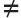

(1.45-46) The Israelite population went from seventy (Ex 1.5) to more than a million (over 600,000 adult males) in about 400 years.
(1.45-46) The Israelite population went from seventy (Ex 1.5) to more than a million (over 600,000 adult males) in about 400 years.And Moses said unto them, Have ye saved all the women alive? ... Now therefore kill every male among the little ones, and kill every woman that hath known man by lying with him. But all the women children, that have not known a man by lying with him, keep alive for yourselves. — Numbers 31.15-18
The moral of Numbers is this: Don’t whine.
Miriam complains about Moses’ Ethiopian wife, and God gives her leprosy. The people complain about their hardships during the Exodus, and God sends a fire to burn them alive. They complain about the food, so God forces them to eat quails until it comes out of their noses and then he sends a plague for complaining about that. They complain again, and God sends fiery serpents to bite and kill them. God can’t stand a whiner.
But Numbers has a something for everyone. From talking donkeys to the law of jealousies, it’s a fun book to read.
Here are some highlights:
1 And the LORD spake unto Moses in the wilderness of Sinai, in the tabernacle of the congregation, on the first day of the second month, in the second year after they were come out of the land of Egypt, saying,
2 Take ye the sum of all the congregation of the children of Israel, after their families, by the house of their fathers, with the number of their names, every male by their polls;
3 From twenty years old and upward, all that are able to go forth to war in Israel: thou and Aaron shall number them by their armies.
4 And with you there shall be a man of every tribe; every one head of the house of his fathers.
5 And these are the names of the men that shall stand with you: of the tribe of Reuben; Elizur the son of Shedeur.
(1.5) “Of the tribe of Reuben”
84 What were the 12 (or 13) tribes of Israel?
6 Of Simeon; Shelumiel the son of Zurishaddai.
7 Of Judah; Nahshon the son of Amminadab.
8 Of Issachar; Nethaneel the son of Zuar.
9 Of Zebulun; Eliab the son of Helon.
10 Of the children of Joseph: of Ephraim; Elishama the son of Ammihud: of Manasseh; Gamaliel the son of Pedahzur.
11 Of Benjamin; Abidan the son of Gideoni.
12 Of Dan; Ahiezer the son of Ammishaddai.
13 Of Asher; Pagiel the son of Ocran.
14 Of Gad; Eliasaph the son of Deuel.
15 Of Naphtali; Ahira the son of Enan.
16 These were the renowned of the congregation, princes of the tribes of their fathers, heads of thousands in Israel.
17 And Moses and Aaron took these men which are expressed by their names:
18 And they assembled all the congregation together on the first day of the second month, and they declared their pedigrees after their families, by the house of their fathers, according to the number of the names, from twenty years old and upward, by their polls.
19 As the LORD commanded Moses, so he numbered them in the wilderness of Sinai.
20 And the children of Reuben, Israel’s eldest son, by their generations, after their families, by the house of their fathers, according to the number of the names, by their polls, every male from twenty years old and upward, all that were able to go forth to war;
21 Those that were numbered of them, even of the tribe of Reuben, were forty and six thousand and five hundred.
22 Of the children of Simeon, by their generations, after their families, by the house of their fathers, those that were numbered of them, according to the number of the names, by their polls, every male from twenty years old and upward, all that were able to go forth to war;
23 Those that were numbered of them, even of the tribe of Simeon, were fifty and nine thousand and three hundred.
24 Of the children of Gad, by their generations, after their families, by the house of their fathers, according to the number of the names, from twenty years old and upward, all that were able to go forth to war;
25 Those that were numbered of them, even of the tribe of Gad, were forty and five thousand six hundred and fifty.
26 Of the children of Judah, by their generations, after their families, by the house of their fathers, according to the number of the names, from twenty years old and upward, all that were able to go forth to war;
27 Those that were numbered of them, even of the tribe of Judah, were threescore and fourteen thousand and six hundred.
28 Of the children of Issachar, by their generations, after their families, by the house of their fathers, according to the number of the names, from twenty years old and upward, all that were able to go forth to war;
29 Those that were numbered of them, even of the tribe of Issachar, were fifty and four thousand and four hundred.
30 Of the children of Zebulun, by their generations, after their families, by the house of their fathers, according to the number of the names, from twenty years old and upward, all that were able to go forth to war;
31 Those that were numbered of them, even of the tribe of Zebulun, were fifty and seven thousand and four hundred.
32 Of the children of Joseph, namely, of the children of Ephraim, by their generations, after their families, by the house of their fathers, according to the number of the names, from twenty years old and upward, all that were able to go forth to war;
33 Those that were numbered of them, even of the tribe of Ephraim, were forty thousand and five hundred.
34 Of the children of Manasseh, by their generations, after their families, by the house of their fathers, according to the number of the names, from twenty years old and upward, all that were able to go forth to war;
35 Those that were numbered of them, even of the tribe of Manasseh, were thirty and two thousand and two hundred.
36 Of the children of Benjamin, by their generations, after their families, by the house of their fathers, according to the number of the names, from twenty years old and upward, all that were able to go forth to war;
37 Those that were numbered of them, even of the tribe of Benjamin, were thirty and five thousand and four hundred.
38 Of the children of Dan, by their generations, after their families, by the house of their fathers, according to the number of the names, from twenty years old and upward, all that were able to go forth to war;
39 Those that were numbered of them, even of the tribe of Dan, were threescore and two thousand and seven hundred.
40 Of the children of Asher, by their generations, after their families, by the house of their fathers, according to the number of the names, from twenty years old and upward, all that were able to go forth to war;
41 Those that were numbered of them, even of the tribe of Asher, were forty and one thousand and five hundred.
42 Of the children of Naphtali, throughout their generations, after their families, by the house of their fathers, according to the number of the names, from twenty years old and upward, all that were able to go forth to war;
43 Those that were numbered of them, even of the tribe of Naphtali, were fifty and three thousand and four hundred.
44 These are those that were numbered, which Moses and Aaron numbered, and the princes of Israel, being twelve men: each one was for the house of his fathers.
(1.45-46) The Israelite population went from seventy (Ex 1.5) to more than a million (over 600,000 adult males) in about 400 years.
45 So were all those that were numbered of the children of Israel, by the house of their fathers, from twenty years old and upward, all that were able to go forth to war in Israel;
(1.45) “All those that were numbered of the children of Israel … from twenty years old and upward, all that were able to go forth to war in Israel”
46 Even all they that were numbered were six hundred thousand and three thousand and five hundred and fifty.
(1.46) “Were numbered were six hundred thousand and three thousand and five hundred and fifty.”
47 But the Levites after the tribe of their fathers were not numbered among them.
48 For the LORD had spoken unto Moses, saying,
49 Only thou shalt not number the tribe of Levi, neither take the sum of them among the children of Israel:
50 But thou shalt appoint the Levites over the tabernacle of testimony, and over all the vessels thereof, and over all things that belong to it: they shall bear the tabernacle, and all the vessels thereof; and they shall minister unto it, and shall encamp round about the tabernacle.
51 And when the tabernacle setteth forward, the Levites shall take it down: and when the tabernacle is to be pitched, the Levites shall set it up: and the stranger that cometh nigh shall be put to death.


 (1.51) “The stranger that cometh nigh shall be put to death.”
(1.51) “The stranger that cometh nigh shall be put to death.”
112 How should strangers be treated?
52 And the children of Israel shall pitch their tents, every man by his own camp, and every man by his own standard, throughout their hosts.
53 But the Levites shall pitch round about the tabernacle of testimony, that there be no wrath upon the congregation of the children of Israel: and the Levites shall keep the charge of the tabernacle of testimony.
54 And the children of Israel did according to all that the LORD commanded Moses, so did they.
2 And the LORD spake unto Moses and unto Aaron, saying,
2 Every man of the children of Israel shall pitch by his own standard, with the ensign of their father’s house: far off about the tabernacle of the congregation shall they pitch.
3 And on the east side toward the rising of the sun shall they of the standard of the camp of Judah pitch throughout their armies: and Nahshon the son of Amminadab shall be captain of the children of Judah.
4 And his host, and those that were numbered of them, were threescore and fourteen thousand and six hundred.
5 And those that do pitch next unto him shall be the tribe of Issachar: and Nethaneel the son of Zuar shall be captain of the children of Issachar.
6 And his host, and those that were numbered thereof, were fifty and four thousand and four hundred.
7 Then the tribe of Zebulun: and Eliab the son of Helon shall be captain of the children of Zebulun.
8 And his host, and those that were numbered thereof, were fifty and seven thousand and four hundred.
9 All that were numbered in the camp of Judah were an hundred thousand and fourscore thousand and six thousand and four hundred, throughout their armies. These shall first set forth.
10 On the south side shall be the standard of the camp of Reuben according to their armies: and the captain of the children of Reuben shall be Elizur the son of Shedeur.
11 And his host, and those that were numbered thereof, were forty and six thousand and five hundred.
12 And those which pitch by him shall be the tribe of Simeon: and the captain of the children of Simeon shall be Shelumiel the son of Zurishaddai.
13 And his host, and those that were numbered of them, were fifty and nine thousand and three hundred.
14 Then the tribe of Gad: and the captain of the sons of Gad shall be Eliasaph the son of Reuel.
15 And his host, and those that were numbered of them, were forty and five thousand and six hundred and fifty.
16 All that were numbered in the camp of Reuben were an hundred thousand and fifty and one thousand and four hundred and fifty, throughout their armies. And they shall set forth in the second rank.
17 Then the tabernacle of the congregation shall set forward with the camp of the Levites in the midst of the camp: as they encamp, so shall they set forward, every man in his place by their standards.
18 On the west side shall be the standard of the camp of Ephraim according to their armies: and the captain of the sons of Ephraim shall be Elishama the son of Ammihud.
19 And his host, and those that were numbered of them, were forty thousand and five hundred.
20 And by him shall be the tribe of Manasseh: and the captain of the children of Manasseh shall be Gamaliel the son of Pedahzur.
21 And his host, and those that were numbered of them, were thirty and two thousand and two hundred.
22 Then the tribe of Benjamin: and the captain of the sons of Benjamin shall be Abidan the son of Gideoni.
23 And his host, and those that were numbered of them, were thirty and five thousand and four hundred.
24 All that were numbered of the camp of Ephraim were an hundred thousand and eight thousand and an hundred, throughout their armies. And they shall go forward in the third rank.
25 The standard of the camp of Dan shall be on the north side by their armies: and the captain of the children of Dan shall be Ahiezer the son of Ammishaddai.
26 And his host, and those that were numbered of them, were threescore and two thousand and seven hundred.
27 And those that encamp by him shall be the tribe of Asher: and the captain of the children of Asher shall be Pagiel the son of Ocran.
28 And his host, and those that were numbered of them, were forty and one thousand and five hundred.
29 Then the tribe of Naphtali: and the captain of the children of Naphtali shall be Ahira the son of Enan.
30 And his host, and those that were numbered of them, were fifty and three thousand and four hundred.
31 All they that were numbered in the camp of Dan were an hundred thousand and fifty and seven thousand and six hundred. They shall go hindmost with their standards.
32 These are those which were numbered of the children of Israel by the house of their fathers: all those that were numbered of the camps throughout their hosts were six hundred thousand and three thousand and five hundred and fifty.
33 But the Levites were not numbered among the children of Israel; as the LORD commanded Moses.
34 And the children of Israel did according to all that the LORD commanded Moses: so they pitched by their standards, and so they set forward, every one after their families, according to the house of their fathers.
3 These also are the generations of Aaron and Moses in the day that the LORD spake with Moses in mount Sinai.
2 And these are the names of the sons of Aaron; Nadab the firstborn, and Abihu, Eleazar, and Ithamar.
3 These are the names of the sons of Aaron, the priests which were anointed, whom he consecrated to minister in the priest’s office.
4 And Nadab and Abihu died before the LORD, when they offered strange fire before the LORD, in the wilderness of Sinai, and they had no children: and Eleazar and Ithamar ministered in the priest’s office in the sight of Aaron their father.
 (3.4) “Nadab and Abihu died before the LORD, when they offered strange fire before the LORD.” Two of Aaron’s sons were killed by God for “offering strange fire before the Lord.”
(3.4) “Nadab and Abihu died before the LORD, when they offered strange fire before the LORD.” Two of Aaron’s sons were killed by God for “offering strange fire before the Lord.”
God’s 14th Killing
5 And the LORD spake unto Moses, saying,
6 Bring the tribe of Levi near, and present them before Aaron the priest, that they may minister unto him.
7 And they shall keep his charge, and the charge of the whole congregation before the tabernacle of the congregation, to do the service of the tabernacle.
8 And they shall keep all the instruments of the tabernacle of the congregation, and the charge of the children of Israel, to do the service of the tabernacle.
9 And thou shalt give the Levites unto Aaron and to his sons: they are wholly given unto him out of the children of Israel.
10 And thou shalt appoint Aaron and his sons, and they shall wait on their priest’s office: and the stranger that cometh nigh shall be put to death.
(3.10) “The stranger that cometh nigh shall be put to death.”
112 How should strangers be treated?
11 And the LORD spake unto Moses, saying,
12 And I, behold, I have taken the Levites from among the children of Israel instead of all the firstborn that openeth the matrix among the children of Israel: therefore the Levites shall be mine;
13 Because all the firstborn are mine; for on the day that I smote all the firstborn in the land of Egypt I hallowed unto me all the firstborn in Israel, both man and beast: mine shall they be: I am the LORD.
14 And the LORD spake unto Moses in the wilderness of Sinai, saying,
 (3.15-16) When “Moses numbered them according to the word of the Lord” he was told to count “every male from a month old and upward.” Women and girls didn’t count as persons. Neither did babies (or fetuses) under 1 month old.
(3.15-16) When “Moses numbered them according to the word of the Lord” he was told to count “every male from a month old and upward.” Women and girls didn’t count as persons. Neither did babies (or fetuses) under 1 month old.
15 Number the children of Levi after the house of their fathers, by their families: every male from a month old and upward shalt thou number them.
(3.15) “Every male from a month old and upward shalt thou number.”
16 And Moses numbered them according to the word of the LORD, as he was commanded.
(3.16) “And Moses numbered them according to the word of the LORD.”
17 And these were the sons of Levi by their names; Gershon, and Kohath, and Merari.
18 And these are the names of the sons of Gershon by their families; Libni, and Shimei.
19 And the sons of Kohath by their families; Amram, and Izehar, Hebron, and Uzziel.
20 And the sons of Merari by their families; Mahli, and Mushi. These are the families of the Levites according to the house of their fathers.
21 Of Gershon was the family of the Libnites, and the family of the Shimites: these are the families of the Gershonites.
22 Those that were numbered of them, according to the number of all the males, from a month old and upward, even those that were numbered of them were seven thousand and five hundred.
23 The families of the Gershonites shall pitch behind the tabernacle westward.
24 And the chief of the house of the father of the Gershonites shall be Eliasaph the son of Lael.
25 And the charge of the sons of Gershon in the tabernacle of the congregation shall be the tabernacle, and the tent, the covering thereof, and the hanging for the door of the tabernacle of the congregation,
26 And the hangings of the court, and the curtain for the door of the court, which is by the tabernacle, and by the altar round about, and the cords of it for all the service thereof.
27 And of Kohath was the family of the Amramites, and the family of the Izeharites, and the family of the Hebronites, and the family of the Uzzielites: these are the families of the Kohathites.
28 In the number of all the males, from a month old and upward, were eight thousand and six hundred, keeping the charge of the sanctuary.
29 The families of the sons of Kohath shall pitch on the side of the tabernacle southward.
30 And the chief of the house of the father of the families of the Kohathites shall be Elizaphan the son of Uzziel.
31 And their charge shall be the ark, and the table, and the candlestick, and the altars, and the vessels of the sanctuary wherewith they minister, and the hanging, and all the service thereof.
32 And Eleazar the son of Aaron the priest shall be chief over the chief of the Levites, and have the oversight of them that keep the charge of the sanctuary.
33 Of Merari was the family of the Mahlites, and the family of the Mushites: these are the families of Merari.
34 And those that were numbered of them, according to the number of all the males, from a month old and upward, were six thousand and two hundred.
35 And the chief of the house of the father of the families of Merari was Zuriel the son of Abihail: these shall pitch on the side of the tabernacle northward.
36 And under the custody and charge of the sons of Merari shall be the boards of the tabernacle, and the bars thereof, and the pillars thereof, and the sockets thereof, and all the vessels thereof, and all that serveth thereto,
37 And the pillars of the court round about, and their sockets, and their pins, and their cords.
38 But those that encamp before the tabernacle toward the east, even before the tabernacle of the congregation eastward, shall be Moses, and Aaron and his sons, keeping the charge of the sanctuary for the charge of the children of Israel; and the stranger that cometh nigh shall be put to death.
(3.38) “The stranger that cometh nigh shall be put to death.”
112 How should strangers be treated?
39 All that were numbered of the Levites, which Moses and Aaron numbered at the commandment of the LORD, throughout their families, all the males from a month old and upward, were twenty and two thousand.
40 And the LORD said unto Moses, Number all the firstborn of the males of the children of Israel from a month old and upward, and take the number of their names.
41 And thou shalt take the Levites for me (I am the LORD) instead of all the firstborn among the children of Israel; and the cattle of the Levites instead of all the firstlings among the cattle of the children of Israel.
42 And Moses numbered, as the LORD commanded him, all the firstborn among the children of Israel.
43 And all the firstborn males by the number of names, from a month old and upward, of those that were numbered of them, were twenty and two thousand two hundred and threescore and thirteen.
44 And the LORD spake unto Moses, saying,
45 Take the Levites instead of all the firstborn among the children of Israel, and the cattle of the Levites instead of their cattle; and the Levites shall be mine: I am the LORD.
46 And for those that are to be redeemed of the two hundred and threescore and thirteen of the firstborn of the children of Israel, which are more than the Levites;
47 Thou shalt even take five shekels apiece by the poll, after the shekel of the sanctuary shalt thou take them: (the shekel is twenty gerahs:)
48 And thou shalt give the money, wherewith the odd number of them is to be redeemed, unto Aaron and to his sons.
49 And Moses took the redemption money of them that were over and above them that were redeemed by the Levites:
50 Of the firstborn of the children of Israel took he the money; a thousand three hundred and threescore and five shekels, after the shekel of the sanctuary:
51 And Moses gave the money of them that were redeemed unto Aaron and to his sons, according to the word of the LORD, as the LORD commanded Moses.
4 And the LORD spake unto Moses and unto Aaron, saying,
2 Take the sum of the sons of Kohath from among the sons of Levi, after their families, by the house of their fathers,
3 From thirty years old and upward even until fifty years old, all that enter into the host, to do the work in the tabernacle of the congregation.
4 This shall be the service of the sons of Kohath in the tabernacle of the congregation, about the most holy things:
5 And when the camp setteth forward, Aaron shall come, and his sons, and they shall take down the covering vail, and cover the ark of testimony with it:
6 And shall put thereon the covering of badgers’ skins, and shall spread over it a cloth wholly of blue, and shall put in the staves thereof.
7 And upon the table of shewbread they shall spread a cloth of blue, and put thereon the dishes, and the spoons, and the bowls, and covers to cover withal: and the continual bread shall be thereon:
8 And they shall spread upon them a cloth of scarlet, and cover the same with a covering of badgers’ skins, and shall put in the staves thereof.
9 And they shall take a cloth of blue, and cover the candlestick of the light, and his lamps, and his tongs, and his snuffdishes, and all the oil vessels thereof, wherewith they minister unto it:
10 And they shall put it and all the vessels thereof within a covering of badgers’ skins, and shall put it upon a bar.
11 And upon the golden altar they shall spread a cloth of blue, and cover it with a covering of badgers’ skins, and shall put to the staves thereof:
12 And they shall take all the instruments of ministry, wherewith they minister in the sanctuary, and put them in a cloth of blue, and cover them with a covering of badgers’ skins, and shall put them on a bar:
13 And they shall take away the ashes from the altar, and spread a purple cloth thereon:
14 And they shall put upon it all the vessels thereof, wherewith they minister about it, even the censers, the fleshhooks, and the shovels, and the basons, all the vessels of the altar; and they shall spread upon it a covering of badgers’ skins, and put to the staves of it.
(4.15-20) Don’t touch or “go in to see when the holy things are covered.” God kills people who touch or look at covered holy things.
15 And when Aaron and his sons have made an end of covering the sanctuary, and all the vessels of the sanctuary, as the camp is to set forward; after that, the sons of Kohath shall come to bear it: but they shall not touch any holy thing, lest they die. These things are the burden of the sons of Kohath in the tabernacle of the congregation.
(4.15) “They shall not touch any holy thing, lest they die.”
16 And to the office of Eleazar the son of Aaron the priest pertaineth the oil for the light, and the sweet incense, and the daily meat offering, and the anointing oil, and the oversight of all the tabernacle, and of all that therein is, in the sanctuary, and in the vessels thereof.
17 And the LORD spake unto Moses and unto Aaron, saying,
18 Cut ye not off the tribe of the families of the Kohathites from among the Levites:
19 But thus do unto them, that they may live, and not die, when they approach unto the most holy things: Aaron and his sons shall go in, and appoint them every one to his service and to his burden:
20 But they shall not go in to see when the holy things are covered, lest they die.
(4.20) “They shall not go in to see when the holy things are covered, lest they die.”
21 And the LORD spake unto Moses, saying,
22 Take also the sum of the sons of Gershon, throughout the houses of their fathers, by their families;
23 From thirty years old and upward until fifty years old shalt thou number them; all that enter in to perform the service, to do the work in the tabernacle of the congregation.
24 This is the service of the families of the Gershonites, to serve, and for burdens:
25 And they shall bear the curtains of the tabernacle, and the tabernacle of the congregation, his covering, and the covering of the badgers’ skins that is above upon it, and the hanging for the door of the tabernacle of the congregation,
26 And the hangings of the court, and the hanging for the door of the gate of the court, which is by the tabernacle and by the altar round about, and their cords, and all the instruments of their service, and all that is made for them: so shall they serve.
27 At the appointment of Aaron and his sons shall be all the service of the sons of the Gershonites, in all their burdens, and in all their service: and ye shall appoint unto them in charge all their burdens.
28 This is the service of the families of the sons of Gershon in the tabernacle of the congregation: and their charge shall be under the hand of Ithamar the son of Aaron the priest.
29 As for the sons of Merari, thou shalt number them after their families, by the house of their fathers;
30 From thirty years old and upward even unto fifty years old shalt thou number them, every one that entereth into the service, to do the work of the tabernacle of the congregation.
31 And this is the charge of their burden, according to all their service in the tabernacle of the congregation; the boards of the tabernacle, and the bars thereof, and the pillars thereof, and sockets thereof,
32 And the pillars of the court round about, and their sockets, and their pins, and their cords, with all their instruments, and with all their service: and by name ye shall reckon the instruments of the charge of their burden.
33 This is the service of the families of the sons of Merari, according to all their service, in the tabernacle of the congregation, under the hand of Ithamar the son of Aaron the priest.
34 And Moses and Aaron and the chief of the congregation numbered the sons of the Kohathites after their families, and after the house of their fathers,
35 From thirty years old and upward even unto fifty years old, every one that entereth into the service, for the work in the tabernacle of the congregation:
36 And those that were numbered of them by their families were two thousand seven hundred and fifty.
37 These were they that were numbered of the families of the Kohathites, all that might do service in the tabernacle of the congregation, which Moses and Aaron did number according to the commandment of the LORD by the hand of Moses.
38 And those that were numbered of the sons of Gershon, throughout their families, and by the house of their fathers,
39 From thirty years old and upward even unto fifty years old, every one that entereth into the service, for the work in the tabernacle of the congregation,
40 Even those that were numbered of them, throughout their families, by the house of their fathers, were two thousand and six hundred and thirty.
41 These are they that were numbered of the families of the sons of Gershon, of all that might do service in the tabernacle of the congregation, whom Moses and Aaron did number according to the commandment of the LORD.
42 And those that were numbered of the families of the sons of Merari, throughout their families, by the house of their fathers,
43 From thirty years old and upward even unto fifty years old, every one that entereth into the service, for the work in the tabernacle of the congregation,
44 Even those that were numbered of them after their families, were three thousand and two hundred.
45 These be those that were numbered of the families of the sons of Merari, whom Moses and Aaron numbered according to the word of the LORD by the hand of Moses.
46 All those that were numbered of the Levites, whom Moses and Aaron and the chief of Israel numbered, after their families, and after the house of their fathers,
47 From thirty years old and upward even unto fifty years old, every one that came to do the service of the ministry, and the service of the burden in the tabernacle of the congregation,
48 Even those that were numbered of them, were eight thousand and five hundred and fourscore.
49 According to the commandment of the LORD they were numbered by the hand of Moses, every one according to his service, and according to his burden: thus were they numbered of him, as the LORD commanded Moses.
(5.1-4) God tells Moses to expel all lepers from the camp “that they defile not …whereof I dwell.” So by God’s instructions, the sick are abandoned and left to suffer and die alone.
5 And the LORD spake unto Moses, saying,
(5.1) “And the LORD spake unto Moses, saying,”
2 Command the children of Israel, that they put out of the camp every leper, and every one that hath an issue, and whosoever is defiled by the dead:
(5.2) “Put out of the camp every leper, and every one that hath an issue, and whosoever is defiled by the dead.”
3 Both male and female shall ye put out, without the camp shall ye put them; that they defile not their camps, in the midst whereof I dwell.
(5.3) “Both male and female shall ye put out… that they defile not their camps, in the midst whereof I dwell.”
4 And the children of Israel did so, and put them out without the camp: as the LORD spake unto Moses, so did the children of Israel.
(5.4) “And the children of Israel did so, and put them out without the camp: as the LORD spake unto Moses, so did the children of Israel.”
5 And the LORD spake unto Moses, saying,
6 Speak unto the children of Israel, When a man or woman shall commit any sin that men commit, to do a trespass against the LORD, and that person be guilty;
7 Then they shall confess their sin which they have done: and he shall recompense his trespass with the principal thereof, and add unto it the fifth part thereof, and give it unto him against whom he hath trespassed.
8 But if the man have no kinsman to recompense the trespass unto, let the trespass be recompensed unto the LORD, even to the priest; beside the ram of the atonement, whereby an atonement shall be made for him.
9 And every offering of all the holy things of the children of Israel, which they bring unto the priest, shall be his.
10 And every man’s hallowed things shall be his: whatsoever any man giveth the priest, it shall be his.
(5.11-31) The Law of Jealousies If a man suspects his wife of being unfaithful, he reports it to the priest. The priest then makes her drink some “bitter water.” If she is guilty, the water makes her thigh rot and her belly swell. If innocent, no harm done—the woman is free and will “conceive seed.” In any case, “the man shall be guiltless from iniquity, and this woman shall bear her iniquity.”
11 And the LORD spake unto Moses, saying,
(5.11) “The LORD spake unto Moses, saying,”
12 Speak unto the children of Israel, and say unto them, If any man’s wife go aside, and commit a trespass against him,
(5.12) “If any man’s wife go aside, and commit a trespass against him,”
13 And a man lie with her carnally, and it be hid from the eyes of her husband, and be kept close, and she be defiled, and there be no witness against her, neither she be taken with the manner;
14 And the spirit of jealousy come upon him, and he be jealous of his wife, and she be defiled: or if the spirit of jealousy come upon him, and he be jealous of his wife, and she be not defiled:
(5.14) “And the spirit of jealousy come upon him … and she be defiled: or if the spirit of jealousy come upon him … and she be not defiled:”
15 Then shall the man bring his wife unto the priest, and he shall bring her offering for her, the tenth part of an ephah of barley meal; he shall pour no oil upon it, nor put frankincense thereon; for it is an offering of jealousy, an offering of memorial, bringing iniquity to remembrance.
(5.15) “Then shall the man bring his wife unto the priest,”
16 And the priest shall bring her near, and set her before the LORD:
(5.16) “And the priest shall … set her before the LORD.”
17 And the priest shall take holy water in an earthen vessel; and of the dust that is in the floor of the tabernacle the priest shall take, and put it into the water:
18 And the priest shall set the woman before the LORD, and uncover the woman’s head, and put the offering of memorial in her hands, which is the jealousy offering: and the priest shall have in his hand the bitter water that causeth the curse:
(5.18) “And the priest shall have in his hand the bitter water that causeth the curse.”
19 And the priest shall charge her by an oath, and say unto the woman, If no man have lain with thee, and if thou hast not gone aside to uncleanness with another instead of thy husband, be thou free from this bitter water that causeth the curse:
(5.19) “And the priest shall … say unto the woman, If no man have lain with thee … be thou free from this bitter water that causeth the curse.”
20 But if thou hast gone aside to another instead of thy husband, and if thou be defiled, and some man have lain with thee beside thine husband:
(5.20) “But if … some man have lain with thee beside thine husband,”
21 Then the priest shall charge the woman with an oath of cursing, and the priest shall say unto the woman, The LORD make thee a curse and an oath among thy people, when the LORD doth make thy thigh to rot, and thy belly to swell;
(5.21) “The LORD doth make thy thigh to rot, and thy belly to swell.”
22 And this water that causeth the curse shall go into thy bowels, to make thy belly to swell, and thy thigh to rot: And the woman shall say, Amen, amen.
(5.22) “And this water that causeth the curse shall go into thy bowels, to make thy belly to swell, and thy thigh to rot: And the woman shall say, Amen, amen.”
23 And the priest shall write these curses in a book, and he shall blot them out with the bitter water:
24 And he shall cause the woman to drink the bitter water that causeth the curse: and the water that causeth the curse shall enter into her, and become bitter.
(5.24) “And he shall cause the woman to drink the bitter water that causeth the curse.”
25 Then the priest shall take the jealousy offering out of the woman’s hand, and shall wave the offering before the LORD, and offer it upon the altar:
26 And the priest shall take an handful of the offering, even the memorial thereof, and burn it upon the altar, and afterward shall cause the woman to drink the water.
27 And when he hath made her to drink the water, then it shall come to pass, that, if she be defiled, and have done trespass against her husband, that the water that causeth the curse shall enter into her, and become bitter, and her belly shall swell, and her thigh shall rot: and the woman shall be a curse among her people.
(5.27) “When he hath made her to drink the water … if she be defiled … the water that causeth the curse shall … become bitter, and her belly shall swell, and her thigh shall rot: and the woman shall be a curse among her people.”
92 Is magic OK?
28 And if the woman be not defiled, but be clean; then she shall be free, and shall conceive seed.
(5.28) “If the woman be not defiled, but be clean; then she shall be free, and shall conceive seed.”
29 This is the law of jealousies, when a wife goeth aside to another instead of her husband, and is defiled;
(5.29) “This is the law of jealousies,”
30 Or when the spirit of jealousy cometh upon him, and he be jealous over his wife, and shall set the woman before the LORD, and the priest shall execute upon her all this law.
(5.30) “When the spirit of jealousy cometh upon him, and he be jealous over his wife, and shall set the woman before the LORD, and the priest shall execute upon her all this law.”
31 Then shall the man be guiltless from iniquity, and this woman shall bear her iniquity.
(5.31) “Then shall the he man be guiltless from iniquity, and this woman shall bear her iniquity.”
6 And the LORD spake unto Moses, saying,
2 Speak unto the children of Israel, and say unto them, When either man or woman shall separate themselves to vow a vow of a Nazarite, to separate themselves unto the LORD:
3 He shall separate himself from wine and strong drink, and shall drink no vinegar of wine, or vinegar of strong drink, neither shall he drink any liquor of grapes, nor eat moist grapes, or dried.
(6.3) “He shall separate himself from wine and strong drink.”
71 Is it OK to drink alcohol?
4 All the days of his separation shall he eat nothing that is made of the vine tree, from the kernels even to the husk.
5 All the days of the vow of his separation there shall no razor come upon his head: until the days be fulfilled, in the which he separateth himself unto the LORD, he shall be holy, and shall let the locks of the hair of his head grow.
(6.5) “There shall no razor come upon his head.” The Nazarites let their hair grow long as a sign of their total dedication to God.
133 Is it OK for men to have long hair?
6 All the days that he separateth himself unto the LORD he shall come at no dead body.
7 He shall not make himself unclean for his father, or for his mother, for his brother, or for his sister, when they die: because the consecration of his God is upon his head.
8 All the days of his separation he is holy unto the LORD.
9 And if any man die very suddenly by him, and he hath defiled the head of his consecration; then he shall shave his head in the day of his cleansing, on the seventh day shall he shave it.
(6.10-20) Killing animals to satisfy a blood-thirsty god.
10 And on the eighth day he shall bring two turtles, or two young pigeons, to the priest, to the door of the tabernacle of the congregation:
(6.10) “He shall bring two turtles, or two young pigeons, to the priest,”
11 And the priest shall offer the one for a sin offering, and the other for a burnt offering, and make an atonement for him, for that he sinned by the dead, and shall hallow his head that same day.
(6.11) “The priest shall offer the one for a sin offering, and the other for a burnt offering.”
12 And he shall consecrate unto the LORD the days of his separation, and shall bring a lamb of the first year for a trespass offering: but the days that were before shall be lost, because his separation was defiled.
(6.12) “He … shall bring a lamb of the first year for a trespass offering.”
13 And this is the law of the Nazarite, when the days of his separation are fulfilled: he shall be brought unto the door of the tabernacle of the congregation:
14 And he shall offer his offering unto the LORD, one he lamb of the first year without blemish for a burnt offering, and one ewe lamb of the first year without blemish for a sin offering, and one ram without blemish for peace offerings,
(6.14) “He shall offer his offering unto the LORD, one he lamb of the first year without blemish for a burnt offering, and one ewe lamb of the first year without blemish for a sin offering, and one ram without blemish for peace offerings.”
15 And a basket of unleavened bread, cakes of fine flour mingled with oil, and wafers of unleavened bread anointed with oil, and their meat offering, and their drink offerings.
16 And the priest shall bring them before the LORD, and shall offer his sin offering, and his burnt offering:
(6.16) “The priest shall … offer his sin offering, and his burnt offering.”
17 And he shall offer the ram for a sacrifice of peace offerings unto the LORD, with the basket of unleavened bread: the priest shall offer also his meat offering, and his drink offering.
(6.17) “The priest shall offer also his meat offering.”
18 And the Nazarite shall shave the head of his separation at the door of the tabernacle of the congregation, and shall take the hair of the head of his separation, and put it in the fire which is under the sacrifice of the peace offerings.
19 And the priest shall take the sodden shoulder of the ram, and one unleavened cake out of the basket, and one unleavened wafer, and shall put them upon the hands of the Nazarite, after the hair of his separation is shaven:
(6.19) “The priest shall take the sodden shoulder of the ram.”
20 And the priest shall wave them for a wave offering before the LORD: this is holy for the priest, with the wave breast and heave shoulder: and after that the Nazarite may drink wine.
(6.20) “And the priest shall wave them for a wave offering before the LORD … with the wave breast and heave shoulder.”
21 This is the law of the Nazarite who hath vowed, and of his offering unto the LORD for his separation, beside that that his hand shall get: according to the vow which he vowed, so he must do after the law of his separation.
22 And the LORD spake unto Moses, saying,
23 Speak unto Aaron and unto his sons, saying, On this wise ye shall bless the children of Israel, saying unto them,
24 The LORD bless thee, and keep thee:
25 The LORD make his face shine upon thee, and be gracious unto thee:
26 The LORD lift up his countenance upon thee, and give thee peace.
27 And they shall put my name upon the children of Israel; and I will bless them.
7 And it came to pass on the day that Moses had fully set up the tabernacle, and had anointed it, and sanctified it, and all the instruments thereof, both the altar and all the vessels thereof, and had anointed them, and sanctified them;
2 That the princes of Israel, heads of the house of their fathers, who were the princes of the tribes, and were over them that were numbered, offered:
3 And they brought their offering before the LORD, six covered wagons, and twelve oxen; a wagon for two of the princes, and for each one an ox: and they brought them before the tabernacle.
4 And the LORD spake unto Moses, saying,
5 Take it of them, that they may be to do the service of the tabernacle of the congregation; and thou shalt give them unto the Levites, to every man according to his service.
6 And Moses took the wagons and the oxen, and gave them unto the Levites.
7 Two wagons and four oxen he gave unto the sons of Gershon, according to their service:
8 And four wagons and eight oxen he gave unto the sons of Merari, according unto their service, under the hand of Ithamar the son of Aaron the priest.
9 But unto the sons of Kohath he gave none: because the service of the sanctuary belonging unto them was that they should bear upon their shoulders.
10 And the princes offered for dedicating of the altar in the day that it was anointed, even the princes offered their offering before the altar.
11 And the LORD said unto Moses, They shall offer their offering, each prince on his day, for the dedicating of the altar.
12 And he that offered his offering the first day was Nahshon the son of Amminadab, of the tribe of Judah:
13 And his offering was one silver charger, the weight thereof was an hundred and thirty shekels, one silver bowl of seventy shekels, after the shekel of the sanctuary; both of them were full of fine flour mingled with oil for a meat offering:
14 One spoon of ten shekels of gold, full of incense:
(7.15-88) When Moses set up the tabernacle, each of the twelve tribes killed a bullock, lamb, ram, and a kid, two oxen, and five rams, goats, and lambs for God, for a grand total of 240 animal sacrifices.
15 One young bullock, one ram, one lamb of the first year, for a burnt offering:
(7.15) “One young bullock, one ram, one lamb of the first year, for a burnt offering”
16 One kid of the goats for a sin offering:
(7.16) “One kid of the goats for a sin offering”
17 And for a sacrifice of peace offerings, two oxen, five rams, five he goats, five lambs of the first year: this was the offering of Nahshon the son of Amminadab.
(7.17) “And for a sacrifice of peace offerings, two oxen, five rams, five he goats, five lambs.”
18 On the second day Nethaneel the son of Zuar, prince of Issachar, did offer:
19 He offered for his offering one silver charger, the weight whereof was an hundred and thirty shekels, one silver bowl of seventy shekels, after the shekel of the sanctuary; both of them full of fine flour mingled with oil for a meat offering:
20 One spoon of gold of ten shekels, full of incense:
21 One young bullock, one ram, one lamb of the first year, for a burnt offering:
(7.21) “One young bullock, one ram, one lamb of the first year, for a burnt offering”
22 One kid of the goats for a sin offering:
(7.22) “One kid of the goats for a sin offering:”
23 And for a sacrifice of peace offerings, two oxen, five rams, five he goats, five lambs of the first year: this was the offering of Nethaneel the son of Zuar.
(7.23) “And for a sacrifice of peace offerings, two oxen, five rams, five he goats, five lambs.”
24 On the third day Eliab the son of Helon, prince of the children of Zebulun, did offer:
25 His offering was one silver charger, the weight whereof was an hundred and thirty shekels, one silver bowl of seventy shekels, after the shekel of the sanctuary; both of them full of fine flour mingled with oil for a meat offering:
26 One golden spoon of ten shekels, full of incense:
27 One young bullock, one ram, one lamb of the first year, for a burnt offering:
(7.27) “One young bullock, one ram, one lamb of the first year, for a burnt offering”
28 One kid of the goats for a sin offering:
(7.28) “One kid of the goats for a sin offering”
29 And for a sacrifice of peace offerings, two oxen, five rams, five he goats, five lambs of the first year: this was the offering of Eliab the son of Helon.
(7.29) “And for a sacrifice of peace offerings, two oxen, five rams, five he goats, five lambs.”
30 On the fourth day Elizur the son of Shedeur, prince of the children of Reuben, did offer:
31 His offering was one silver charger of the weight of an hundred and thirty shekels, one silver bowl of seventy shekels, after the shekel of the sanctuary; both of them full of fine flour mingled with oil for a meat offering:
32 One golden spoon of ten shekels, full of incense:
33 One young bullock, one ram, one lamb of the first year, for a burnt offering:
(7.33) “One young bullock, one ram, one lamb of the first year, for a burnt offering”
34 One kid of the goats for a sin offering:
(7.34) “One kid of the goats for a sin offering”
35 And for a sacrifice of peace offerings, two oxen, five rams, five he goats, five lambs of the first year: this was the offering of Elizur the son of Shedeur.
(7.35) “And for a sacrifice of peace offerings, two oxen, five rams, five he goats, five lambs.”
36 On the fifth day Shelumiel the son of Zurishaddai, prince of the children of Simeon, did offer:
37 His offering was one silver charger, the weight whereof was an hundred and thirty shekels, one silver bowl of seventy shekels, after the shekel of the sanctuary; both of them full of fine flour mingled with oil for a meat offering:
38 One golden spoon of ten shekels, full of incense:
39 One young bullock, one ram, one lamb of the first year, for a burnt offering:
(7.39) “One young bullock, one ram, one lamb of the first year, for a burnt offering”
40 One kid of the goats for a sin offering:
(7.40) “One kid of the goats for a sin offering”
41 And for a sacrifice of peace offerings, two oxen, five rams, five he goats, five lambs of the first year: this was the offering of Shelumiel the son of Zurishaddai.
(7.41) “And for a sacrifice of peace offerings, two oxen, five rams, five he goats, five lambs.”
42 On the sixth day Eliasaph the son of Deuel, prince of the children of Gad, offered:
43 His offering was one silver charger of the weight of an hundred and thirty shekels, a silver bowl of seventy shekels, after the shekel of the sanctuary; both of them full of fine flour mingled with oil for a meat offering:
44 One golden spoon of ten shekels, full of incense:
45 One young bullock, one ram, one lamb of the first year, for a burnt offering:
(7.45) “One young bullock, one ram, one lamb of the first year, for a burnt offering”
46 One kid of the goats for a sin offering:
(7.46) “One kid of the goats for a sin offering”
47 And for a sacrifice of peace offerings, two oxen, five rams, five he goats, five lambs of the first year: this was the offering of Eliasaph the son of Deuel.
(7.47) “And for a sacrifice of peace offerings, two oxen, five rams, five he goats, five lambs.”
48 On the seventh day Elishama the son of Ammihud, prince of the children of Ephraim, offered:
49 His offering was one silver charger, the weight whereof was an hundred and thirty shekels, one silver bowl of seventy shekels, after the shekel of the sanctuary; both of them full of fine flour mingled with oil for a meat offering:
50 One golden spoon of ten shekels, full of incense:
51 One young bullock, one ram, one lamb of the first year, for a burnt offering:
(7.51) “One young bullock, one ram, one lamb of the first year, for a burnt offering”
52 One kid of the goats for a sin offering:
(7.52) “One kid of the goats for a sin offering”
53 And for a sacrifice of peace offerings, two oxen, five rams, five he goats, five lambs of the first year: this was the offering of Elishama the son of Ammihud.
(7.53) “And for a sacrifice of peace offerings, two oxen, five rams, five he goats, five lambs.”
54 On the eighth day offered Gamaliel the son of Pedahzur, prince of the children of Manasseh:
55 His offering was one silver charger of the weight of an hundred and thirty shekels, one silver bowl of seventy shekels, after the shekel of the sanctuary; both of them full of fine flour mingled with oil for a meat offering:
56 One golden spoon of ten shekels, full of incense:
57 One young bullock, one ram, one lamb of the first year, for a burnt offering:
(7.57) “One young bullock, one ram, one lamb of the first year, for a burnt offering”
58 One kid of the goats for a sin offering:
(7.58) “One kid of the goats for a sin offering”
59 And for a sacrifice of peace offerings, two oxen, five rams, five he goats, five lambs of the first year: this was the offering of Gamaliel the son of Pedahzur.
(7.59) “And for a sacrifice of peace offerings, two oxen, five rams, five he goats, five lambs.”
60 On the ninth day Abidan the son of Gideoni, prince of the children of Benjamin, offered:
61 His offering was one silver charger, the weight whereof was an hundred and thirty shekels, one silver bowl of seventy shekels, after the shekel of the sanctuary; both of them full of fine flour mingled with oil for a meat offering:
62 One golden spoon of ten shekels, full of incense:
63 One young bullock, one ram, one lamb of the first year, for a burnt offering:
(7.63) “One young bullock, one ram, one lamb of the first year, for a burnt offering”
64 One kid of the goats for a sin offering:
(7.64) “One kid of the goats for a sin offering”
65 And for a sacrifice of peace offerings, two oxen, five rams, five he goats, five lambs of the first year: this was the offering of Abidan the son of Gideoni.
(7.65) “And for a sacrifice of peace offerings, two oxen, five rams, five he goats, five lambs.”
66 On the tenth day Ahiezer the son of Ammishaddai, prince of the children of Dan, offered:
67 His offering was one silver charger, the weight whereof was an hundred and thirty shekels, one silver bowl of seventy shekels, after the shekel of the sanctuary; both of them full of fine flour mingled with oil for a meat offering:
68 One golden spoon of ten shekels, full of incense:
69 One young bullock, one ram, one lamb of the first year, for a burnt offering:
(7.69) “One young bullock, one ram, one lamb of the first year, for a burnt offering”
70 One kid of the goats for a sin offering:
(7.70) “One kid of the goats for a sin offering”
71 And for a sacrifice of peace offerings, two oxen, five rams, five he goats, five lambs of the first year: this was the offering of Ahiezer the son of Ammishaddai.
(7.71) “And for a sacrifice of peace offerings, two oxen, five rams, five he goats, five lambs.”
72 On the eleventh day Pagiel the son of Ocran, prince of the children of Asher, offered:
73 His offering was one silver charger, the weight whereof was an hundred and thirty shekels, one silver bowl of seventy shekels, after the shekel of the sanctuary; both of them full of fine flour mingled with oil for a meat offering:
74 One golden spoon of ten shekels, full of incense:
75 One young bullock, one ram, one lamb of the first year, for a burnt offering:
(7.75) “One young bullock, one ram, one lamb of the first year, for a burnt offering”
76 One kid of the goats for a sin offering:
(7.76) “One kid of the goats for a sin offering”
77 And for a sacrifice of peace offerings, two oxen, five rams, five he goats, five lambs of the first year: this was the offering of Pagiel the son of Ocran.
(7.77) “And for a sacrifice of peace offerings, two oxen, five rams, five he goats, five lambs.”
78 On the twelfth day Ahira the son of Enan, prince of the children of Naphtali, offered:
79 His offering was one silver charger, the weight whereof was an hundred and thirty shekels, one silver bowl of seventy shekels, after the shekel of the sanctuary; both of them full of fine flour mingled with oil for a meat offering:
80 One golden spoon of ten shekels, full of incense:
81 One young bullock, one ram, one lamb of the first year, for a burnt offering:
(7.81) “One young bullock, one ram, one lamb of the first year, for a burnt offering”
82 One kid of the goats for a sin offering:
(7.82) “One kid of the goats for a sin offering”
83 And for a sacrifice of peace offerings, two oxen, five rams, five he goats, five lambs of the first year: this was the offering of Ahira the son of Enan.
(7.83) “And for a sacrifice of peace offerings, two oxen, five rams, five he goats, five lambs.”
84 This was the dedication of the altar, in the day when it was anointed, by the princes of Israel: twelve chargers of silver, twelve silver bowls, twelve spoons of gold:
85 Each charger of silver weighing an hundred and thirty shekels, each bowl seventy: all the silver vessels weighed two thousand and four hundred shekels, after the shekel of the sanctuary:
86 The golden spoons were twelve, full of incense, weighing ten shekels apiece, after the shekel of the sanctuary: all the gold of the spoons was an hundred and twenty shekels.
87 All the oxen for the burnt offering were twelve bullocks, the rams twelve, the lambs of the first year twelve, with their meat offering: and the kids of the goats for sin offering twelve.
(7.87) “All the oxen for the burnt offering were twelve bullocks, the rams twelve, the lambs of the first year twelve, with their meat offering: and the kids of the goats for sin offering twelve.”
88 And all the oxen for the sacrifice of the peace offerings were twenty and four bullocks, the rams sixty, the he goats sixty, the lambs of the first year sixty. This was the dedication of the altar, after that it was anointed.
(7.88) “And all the oxen for the sacrifice of the peace offerings were twenty and four bullocks, the rams sixty, the he goats sixty, the lambs of the first year sixty.”
89 And when Moses was gone into the tabernacle of the congregation to speak with him, then he heard the voice of one speaking unto him from off the mercy seat that was upon the ark of testimony, from between the two cherubims: and he spake unto him.
8 And the LORD spake unto Moses, saying,
2 Speak unto Aaron, and say unto him, When thou lightest the lamps, the seven lamps shall give light over against the candlestick.
3 And Aaron did so; he lighted the lamps thereof over against the candlestick, as the LORD commanded Moses.
4 And this work of the candlestick was of beaten gold, unto the shaft thereof, unto the flowers thereof, was beaten work: according unto the pattern which the LORD had shewed Moses, so he made the candlestick.
5 And the LORD spake unto Moses, saying,
6 Take the Levites from among the children of Israel, and cleanse them.
7 And thus shalt thou do unto them, to cleanse them: Sprinkle water of purifying upon them, and let them shave all their flesh, and let them wash their clothes, and so make themselves clean.
(8.6-7) “Take the Levites … and let them shave all their flesh … and so make themselves clean.” To get really clean, you’ve got to shave off all your body hair.
(8.8-12) Killing animals for “meat” and “sin” offerings.
8 Then let them take a young bullock with his meat offering, even fine flour mingled with oil, and another young bullock shalt thou take for a sin offering.
(8.8) “Take a young bullock with his meat offering … and another young bullock shalt thou take for a sin offering.”
9 And thou shalt bring the Levites before the tabernacle of the congregation: and thou shalt gather the whole assembly of the children of Israel together:
10 And thou shalt bring the Levites before the LORD: and the children of Israel shall put their hands upon the Levites:
11 And Aaron shall offer the Levites before the LORD for an offering of the children of Israel, that they may execute the service of the LORD.
12 And the Levites shall lay their hands upon the heads of the bullocks: and thou shalt offer the one for a sin offering, and the other for a burnt offering, unto the LORD, to make an atonement for the Levites.
(8.12) “The Levites shall lay their hands upon the heads of the bullocks: and thou shalt offer the one for a sin offering, and the other for a burnt offering.”
13 And thou shalt set the Levites before Aaron, and before his sons, and offer them for an offering unto the LORD.
14 Thus shalt thou separate the Levites from among the children of Israel: and the Levites shall be mine.
15 And after that shall the Levites go in to do the service of the tabernacle of the congregation: and thou shalt cleanse them, and offer them for an offering.
16 For they are wholly given unto me from among the children of Israel; instead of such as open every womb, even instead of the firstborn of all the children of Israel, have I taken them unto me.
(8.15-16) “The Levites … are wholly given unto me from among the children of Israel … have I taken them unto me.” The Israelites are God’s favorite people, and the Levites are his favorites among the Israelites.
(8.17) “For all the firstborn of the children of Israel are mine, both man and beast: on the day that I smote every firstborn in the land of Egypt I sanctified them for myself.” All firstborn Israelites, “both man and beast,” belong to God. He got them the day that he killed every Egyptian firstborn child and animal.
17 For all the firstborn of the children of Israel are mine, both man and beast: on the day that I smote every firstborn in the land of Egypt I sanctified them for myself.
18 And I have taken the Levites for all the firstborn of the children of Israel.
19 And I have given the Levites as a gift to Aaron and to his sons from among the children of Israel, to do the service of the children of Israel in the tabernacle of the congregation, and to make an atonement for the children of Israel: that there be no plague among the children of Israel, when the children of Israel come nigh unto the sanctuary.
20 And Moses, and Aaron, and all the congregation of the children of Israel, did to the Levites according unto all that the LORD commanded Moses concerning the Levites, so did the children of Israel unto them.
21 And the Levites were purified, and they washed their clothes; and Aaron offered them as an offering before the LORD; and Aaron made an atonement for them to cleanse them.
22 And after that went the Levites in to do their service in the tabernacle of the congregation before Aaron, and before his sons: as the LORD had commanded Moses concerning the Levites, so did they unto them.
23 And the LORD spake unto Moses, saying,
24 This is it that belongeth unto the Levites: from twenty and five years old and upward they shall go in to wait upon the service of the tabernacle of the congregation:
25 And from the age of fifty years they shall cease waiting upon the service thereof, and shall serve no more:
26 But shall minister with their brethren in the tabernacle of the congregation, to keep the charge, and shall do no service. Thus shalt thou do unto the Levites touching their charge.
9 And the LORD spake unto Moses in the wilderness of Sinai, in the first month of the second year after they were come out of the land of Egypt, saying,
2 Let the children of Israel also keep the passover at his appointed season.
3 In the fourteenth day of this month, at even, ye shall keep it in his appointed season: according to all the rites of it, and according to all the ceremonies thereof, shall ye keep it.
4 And Moses spake unto the children of Israel, that they should keep the passover.
5 And they kept the passover on the fourteenth day of the first month at even in the wilderness of Sinai: according to all that the LORD commanded Moses, so did the children of Israel.
6 And there were certain men, who were defiled by the dead body of a man, that they could not keep the passover on that day: and they came before Moses and before Aaron on that day:
7 And those men said unto him, We are defiled by the dead body of a man: wherefore are we kept back, that we may not offer an offering of the LORD in his appointed season among the children of Israel?
8 And Moses said unto them, Stand still, and I will hear what the LORD will command concerning you.
9 And the LORD spake unto Moses, saying,
10 Speak unto the children of Israel, saying, If any man of you or of your posterity shall be unclean by reason of a dead body, or be in a journey afar off, yet he shall keep the passover unto the LORD.
11 The fourteenth day of the second month at even they shall keep it, and eat it with unleavened bread and bitter herbs.
12 They shall leave none of it unto the morning, nor break any bone of it: according to all the ordinances of the passover they shall keep it.
13 But the man that is clean, and is not in a journey, and forbeareth to keep the passover, even the same soul shall be cut off from among his people: because he brought not the offering of the LORD in his appointed season, that man shall bear his sin.
(9.13) “The man that … forbeareth to keep the passover … shall be cut off from among his people. because he brought not the offering of the LORD.” If you don’t keep the Passover you’ll be “cut off” from your people.
14 And if a stranger shall sojourn among you, and will keep the passover unto the LORD; according to the ordinance of the passover, and according to the manner thereof, so shall he do: ye shall have one ordinance, both for the stranger, and for him that was born in the land.
(9.15-23) When the tabernacle was set up, it was covered by a cloud during the day and by fire all night. God led the Israelites from one camp to the other with a cloud. When the cloud stopped and rested someplace, the Israelites pitched their tents. When the cloud started moving again, the Israelites followed it.
15 And on the day that the tabernacle was reared up the cloud covered the tabernacle, namely, the tent of the testimony: and at even there was upon the tabernacle as it were the appearance of fire, until the morning.
(9.15) “On the day that the tabernacle was reared up the cloud covered the tabernacle … and at even there was upon the tabernacle as it were the appearance of fire, until the morning.”
16 So it was alway: the cloud covered it by day, and the appearance of fire by night.
(9.16) “The cloud covered it by day, and the appearance of fire by night.”
17 And when the cloud was taken up from the tabernacle, then after that the children of Israel journeyed: and in the place where the cloud abode, there the children of Israel pitched their tents.
(9.17) “When the cloud was taken up from the tabernacle, then after that the children of Israel journeyed: and in the place where the cloud abode, there the children of Israel pitched their tents.”
18 At the commandment of the LORD the children of Israel journeyed, and at the commandment of the LORD they pitched: as long as the cloud abode upon the tabernacle they rested in their tents.
(9.18) “At the commandment of the LORD the children of Israel journeyed, and at the commandment of the LORD they pitched: as long as the cloud abode upon the tabernacle they rested in their tents.”
19 And when the cloud tarried long upon the tabernacle many days, then the children of Israel kept the charge of the LORD, and journeyed not.
(9.19) “And when the cloud tarried long upon the tabernacle many days, then the children of Israel kept the charge of the LORD, and journeyed not.”
20 And so it was, when the cloud was a few days upon the tabernacle; according to the commandment of the LORD they abode in their tents, and according to the commandment of the LORD they journeyed.
(9.20) “And so it was, when the cloud was a few days upon the tabernacle; according to the commandment of the LORD they abode in their tents, and according to the commandment of the LORD they journeyed.”
21 And so it was, when the cloud abode from even unto the morning, and that the cloud was taken up in the morning, then they journeyed: whether it was by day or by night that the cloud was taken up, they journeyed.
(9.21) “And so it was, when the cloud abode from even unto the morning, and that the cloud was taken up in the morning, then they journeyed: whether it was by day or by night that the cloud was taken up, they journeyed.”
22 Or whether it were two days, or a month, or a year, that the cloud tarried upon the tabernacle, remaining thereon, the children of Israel abode in their tents, and journeyed not: but when it was taken up, they journeyed.
(9.22) “Or whether it were two days, or a month, or a year, that the cloud tarried upon the tabernacle, remaining thereon, the children of Israel abode in their tents, and journeyed not: but when it was taken up, they journeyed.”
23 At the commandment of the LORD they rested in the tents, and at the commandment of the LORD they journeyed: they kept the charge of the LORD, at the commandment of the LORD by the hand of Moses.
(9.23) “At the commandment of the LORD they rested in the tents, and at the commandment of the LORD they journeyed.”
10 And the LORD spake unto Moses, saying,
2 Make thee two trumpets of silver; of a whole piece shalt thou make them: that thou mayest use them for the calling of the assembly, and for the journeying of the camps.
3 And when they shall blow with them, all the assembly shall assemble themselves to thee at the door of the tabernacle of the congregation.
4 And if they blow but with one trumpet, then the princes, which are heads of the thousands of Israel, shall gather themselves unto thee.
5 When ye blow an alarm, then the camps that lie on the east parts shall go forward.
6 When ye blow an alarm the second time, then the camps that lie on the south side shall take their journey: they shall blow an alarm for their journeys.
7 But when the congregation is to be gathered together, ye shall blow, but ye shall not sound an alarm.
8 And the sons of Aaron, the priests, shall blow with the trumpets; and they shall be to you for an ordinance for ever throughout your generations.
9 And if ye go to war in your land against the enemy that oppresseth you, then ye shall blow an alarm with the trumpets; and ye shall be remembered before the LORD your God, and ye shall be saved from your enemies.
(10.9) “If ye go to war … ye shall blow an alarm with the trumpets … and ye shall be saved from your enemies.”
10 Also in the day of your gladness, and in your solemn days, and in the beginnings of your months, ye shall blow with the trumpets over your burnt offerings, and over the sacrifices of your peace offerings; that they may be to you for a memorial before your God: I am the LORD your God.
11 And it came to pass on the twentieth day of the second month, in the second year, that the cloud was taken up from off the tabernacle of the testimony.
12 And the children of Israel took their journeys out of the wilderness of Sinai; and the cloud rested in the wilderness of Paran.
(10.11-12) “The cloud was taken up from off the tabernacle … and the cloud rested in the wilderness of Paran.” God continued to (mis)lead the Israelites through the wilderness with a magic cloud.
13 And they first took their journey according to the commandment of the LORD by the hand of Moses.
14 In the first place went the standard of the camp of the children of Judah according to their armies: and over his host was Nahshon the son of Amminadab.
15 And over the host of the tribe of the children of Issachar was Nethaneel the son of Zuar.
16 And over the host of the tribe of the children of Zebulun was Eliab the son of Helon.
17 And the tabernacle was taken down; and the sons of Gershon and the sons of Merari set forward, bearing the tabernacle.
18 And the standard of the camp of Reuben set forward according to their armies: and over his host was Elizur the son of Shedeur.
19 And over the host of the tribe of the children of Simeon was Shelumiel the son of Zurishaddai.
20 And over the host of the tribe of the children of Gad was Eliasaph the son of Deuel.
21 And the Kohathites set forward, bearing the sanctuary: and the other did set up the tabernacle against they came.
22 And the standard of the camp of the children of Ephraim set forward according to their armies: and over his host was Elishama the son of Ammihud.
23 And over the host of the tribe of the children of Manasseh was Gamaliel the son of Pedahzur.
24 And over the host of the tribe of the children of Benjamin was Abidan the son of Gideoni.
25 And the standard of the camp of the children of Dan set forward, which was the rereward of all the camps throughout their hosts: and over his host was Ahiezer the son of Ammishaddai.
26 And over the host of the tribe of the children of Asher was Pagiel the son of Ocran.
27 And over the host of the tribe of the children of Naphtali was Ahira the son of Enan.
28 Thus were the journeyings of the children of Israel according to their armies, when they set forward.
29 And Moses said unto Hobab, the son of Raguel the Midianite, Moses’ father in law, We are journeying unto the place of which the LORD said, I will give it you: come thou with us, and we will do thee good: for the LORD hath spoken good concerning Israel.
(10.29) “Hobab … Moses’ father in law”
88 Who was Moses’ father-in-law?
30 And he said unto him, I will not go; but I will depart to mine own land, and to my kindred.
31 And he said, Leave us not, I pray thee; forasmuch as thou knowest how we are to encamp in the wilderness, and thou mayest be to us instead of eyes.
32 And it shall be, if thou go with us, yea, it shall be, that what goodness the LORD shall do unto us, the same will we do unto thee.
33 And they departed from the mount of the LORD three days’ journey: and the ark of the covenant of the LORD went before them in the three days’ journey, to search out a resting place for them.
34 And the cloud of the LORD was upon them by day, when they went out of the camp.
(10.34) “The cloud of the LORD was upon them by day, when they went out of the camp.”
35 And it came to pass, when the ark set forward, that Moses said, Rise up, LORD, and let thine enemies be scattered; and let them that hate thee flee before thee.
36 And when it rested, he said, Return, O LORD, unto the many thousands of Israel.
11 And when the people complained, it displeased the LORD: and the LORD heard it; and his anger was kindled; and the fire of the LORD burnt among them, and consumed them that were in the uttermost parts of the camp.
(11.1) “When the people complained, it displeased the Lord: and the Lord heard it (He had his hearing aid on), and his anger was kindled; and the fire of the LORD burnt among them, and consumed them.” God burned the complainers alive. That’ll teach them!
God’s 16th Killing
2 And the people cried unto Moses; and when Moses prayed unto the LORD, the fire was quenched.
3 And he called the name of the place Taberah: because the fire of the LORD burnt among them.
 (11.4, 19-20) The people begin to whine about not having any meat. So God says he’ll give them meat, alright. He’ll give them “flesh to eat,” not for just a few days, but “for a whole month, until it come out of [their] nostrils, and it be loathsome to [them].” Yuck.
(11.4, 19-20) The people begin to whine about not having any meat. So God says he’ll give them meat, alright. He’ll give them “flesh to eat,” not for just a few days, but “for a whole month, until it come out of [their] nostrils, and it be loathsome to [them].” Yuck.
4 And the mixed multitude that was among them fell a lusting: and the children of Israel also wept again, and said, Who shall give us flesh to eat?
(11.4) “Who shall give us flesh to eat?”
5 We remember the fish, which we did eat in Egypt freely; the cucumbers, and the melons, and the leeks, and the onions, and the garlick:
6 But now our soul is dried away: there is nothing at all, beside this manna, before our eyes.
7 And the manna was as coriander seed, and the colour thereof as the colour of bdellium.
8 And the people went about, and gathered it, and ground it in mills, or beat it in a mortar, and baked it in pans, and made cakes of it: and the taste of it was as the taste of fresh oil.
9 And when the dew fell upon the camp in the night, the manna fell upon it.
10 Then Moses heard the people weep throughout their families, every man in the door of his tent: and the anger of the LORD was kindled greatly; Moses also was displeased.
11 And Moses said unto the LORD, Wherefore hast thou afflicted thy servant? and wherefore have I not found favour in thy sight, that thou layest the burden of all this people upon me?
12 Have I conceived all this people? have I begotten them, that thou shouldest say unto me, Carry them in thy bosom, as a nursing father beareth the sucking child, unto the land which thou swarest unto their fathers?
(11.12) “As a nursing father beareth the suckling child” As a nursingfather?
13 Whence should I have flesh to give unto all this people? for they weep unto me, saying, Give us flesh, that we may eat.
14 I am not able to bear all this people alone, because it is too heavy for me.
15 And if thou deal thus with me, kill me, I pray thee, out of hand, if I have found favour in thy sight; and let me not see my wretchedness.
16 And the LORD said unto Moses, Gather unto me seventy men of the elders of Israel, whom thou knowest to be the elders of the people, and officers over them; and bring them unto the tabernacle of the congregation, that they may stand there with thee.
17 And I will come down and talk with thee there: and I will take of the spirit which is upon thee, and will put it upon them; and they shall bear the burden of the people with thee, that thou bear it not thyself alone.
18 And say thou unto the people, Sanctify yourselves against to morrow, and ye shall eat flesh: for ye have wept in the ears of the LORD, saying, Who shall give us flesh to eat? for it was well with us in Egypt: therefore the LORD will give you flesh, and ye shall eat.
19 Ye shall not eat one day, nor two days, nor five days, neither ten days, nor twenty days;
(11.19) “Ye shall not eat one day, nor two days, nor five days, neither ten days, nor twenty days;”
20 But even a whole month, until it come out at your nostrils, and it be loathsome unto you: because that ye have despised the LORD which is among you, and have wept before him, saying, Why came we forth out of Egypt?
(11.20) “But even a whole month, until it come out at your nostrils, and it be loathsome unto you.”
21 And Moses said, The people, among whom I am, are six hundred thousand footmen; and thou hast said, I will give them flesh, that they may eat a whole month.
22 Shall the flocks and the herds be slain for them, to suffice them? or shall all the fish of the sea be gathered together for them, to suffice them?
23 And the LORD said unto Moses, Is the LORD’S hand waxed short? thou shalt see now whether my word shall come to pass unto thee or not.
24 And Moses went out, and told the people the words of the LORD, and gathered the seventy men of the elders of the people, and set them round about the tabernacle.
25 And the LORD came down in a cloud, and spake unto him, and took of the spirit that was upon him, and gave it unto the seventy elders: and it came to pass, that, when the spirit rested upon them, they prophesied, and did not cease.
26 But there remained two of the men in the camp, the name of the one was Eldad, and the name of the other Medad: and the spirit rested upon them; and they were of them that were written, but went not out unto the tabernacle: and they prophesied in the camp.
27 And there ran a young man, and told Moses, and said, Eldad and Medad do prophesy in the camp.
28 And Joshua the son of Nun, the servant of Moses, one of his young men, answered and said, My lord Moses, forbid them.
29 And Moses said unto him, Enviest thou for my sake? would God that all the LORD’S people were prophets, and that the LORD would put his spirit upon them!
30 And Moses gat him into the camp, he and the elders of Israel.
31 And there went forth a wind from the LORD, and brought quails from the sea, and let them fall by the camp, as it were a day’s journey on this side, and as it were a day’s journey on the other side, round about the camp, and as it were two cubits high upon the face of the earth.
(11.31) “There went forth a wind from the LORD, and brought quails from the sea … a day’s journey on this side … a day’s journey on the other side … two cubits high upon the face of the earth.” God sent quails to feed his people until they were “two cubits [about a meter] high upon the face of the earth.” Taking the “face of the earth” to be a circle with a radius of say 30 kilometers (an approximate day’s journey), that would amount to 3 trillion (3x1012) liters of quails. At 2 quails per liter, it would provide a couple million quails for each of several million people.
32 And the people stood up all that day, and all that night, and all the next day, and they gathered the quails: he that gathered least gathered ten homers: and they spread them all abroad for themselves round about the camp.
33 And while the flesh was yet between their teeth, ere it was chewed, the wrath of the LORD was kindled against the people, and the LORD smote the people with a very great plague.
(11.33) “While the flesh [of the quails] was yet between their teeth … the wrath of the Lord was kindled against the people, and the Lord smote the people with a very great plague.”
God’s 17th Killing
34 And he called the name of that place Kibroth-hattaavah: because there they buried the people that lusted.
35 And the people journeyed from Kibroth-hattaavah unto Hazeroth; and abode at Hazeroth.
12 And Miriam and Aaron spake against Moses because of the Ethiopian woman whom he had married: for he had married an Ethiopian woman.
(12.1, 9-10) “Miriam and Aaron spake against Moses because of the Ethiopian woman whom he had married.” Miriam and Aaron (Moses’ brother and sister) criticize Moses for marrying an Ethiopian woman and thus breaking the law of God (see Exodus 34.16, Deuteronomy 7.3, 1 Kings 11.2). But God makes it clear that his rules don’t apply to his favorites, and he strikes Miriam with leprosy. Notice that only Miriam is punished, though both she and Aaron complained.
80 Will God destroy those that intermarry?
2 And they said, Hath the LORD indeed spoken only by Moses? hath he not spoken also by us? And the LORD heard it.
3 (Now the man Moses was very meek, above all the men which were upon the face of the earth.)
(12.3) “Now the man Moses was very meek, above all the men which were upon the face of the earth.” That’s a strange way to describe one of the cruelest men to have ever lived. (If he ever did live, which he probably didn’t.) Moses, as he is described in the Bible, is anything but meek (See Num 31.14-18 for an example of his “meekness”).
The NRSV translates this as: “Now the man Moses was very humble, more so than anyone else on the face of the earth.” But if Moses wrote the entire Pentateuch, then he must have written this verse, too. Which seems like a strange thing for the humblest man on earth to say!
134 Was Moses meek?
135 Who wrote the Pentateuch?
4 And the LORD spake suddenly unto Moses, and unto Aaron, and unto Miriam, Come out ye three unto the tabernacle of the congregation. And they three came out.
5 And the LORD came down in the pillar of the cloud, and stood in the door of the tabernacle, and called Aaron and Miriam: and they both came forth.
6 And he said, Hear now my words: If there be a prophet among you, I the LORD will make myself known unto him in a vision, and will speak unto him in a dream.
 (12.6) “If there be a prophet among you, I the LORD will … speak unto him in a dream.” Now there’s a reliable way to communicate with someone!
(12.6) “If there be a prophet among you, I the LORD will … speak unto him in a dream.” Now there’s a reliable way to communicate with someone!
7 My servant Moses is not so, who is faithful in all mine house.
8 With him will I speak mouth to mouth, even apparently, and not in dark speeches; and the similitude of the LORD shall he behold: wherefore then were ye not afraid to speak against my servant Moses?
(12.9-10) For criticizing Aaron, God gave Miriam leprosy. (In the Bible, leprosy is always caused by the wrath of God or the malice of Satan.)
9 And the anger of the LORD was kindled against them; and he departed.
(12.9) “The anger of the LORD was kindled against them.”
10 And the cloud departed from off the tabernacle; and, behold, Miriam became leprous, white as snow: and Aaron looked upon Miriam, and, behold, she was leprous.
(12.10) “And, Behold, Miriam became leprous, white as snow.”
11 And Aaron said unto Moses, Alas, my lord, I beseech thee, lay not the sin upon us, wherein we have done foolishly, and wherein we have sinned.
12 Let her not be as one dead, of whom the flesh is half consumed when he cometh out of his mother’s womb.
13 And Moses cried unto the LORD, saying, Heal her now, O God, I beseech thee.
14 And the LORD said unto Moses, If her father had but spit in her face, should she not be ashamed seven days? let her be shut out from the camp seven days, and after that let her be received in again.
(12.14) “The Lord said unto Moses, If her father had but spit in her face, should she not be ashamed seven days?” God asks the darndest things!
15 And Miriam was shut out from the camp seven days: and the people journeyed not till Miriam was brought in again.
16 And afterward the people removed from Hazeroth, and pitched in the wilderness of Paran.
(13.1-32) God tells Moses to send 12 men, one from each tribe of Israel, to “spy out the land of Canaan.” When the spies return, they give Moses two reports. Caleb and Joshua (Oshea the son of Nun) say it’d be easy to take over the land. The other ten say it would be hard, since the people that live there are giants. (The scouts were like grasshoppers in comparison.)
13 And the LORD spake unto Moses, saying,
(13.1) “And the LORD spake unto Moses, saying,”
2 Send thou men, that they may search the land of Canaan, which I give unto the children of Israel: of every tribe of their fathers shall ye send a man, every one a ruler among them.
(13.2) “Send thou men, that they may search the land of Canaan, which I give unto the children of Israel.”
3 And Moses by the commandment of the LORD sent them from the wilderness of Paran: all those men were heads of the children of Israel.
(13.3) “And Moses by the commandment of the LORD sent them.”
4 And these were their names: of the tribe of Reuben, Shammua the son of Zaccur.
(13.4) “Of the tribe of Reuben”
84 What were the 12 (or 13) tribes of Israel?
5 Of the tribe of Simeon, Shaphat the son of Hori.
6 Of the tribe of Judah, Caleb the son of Jephunneh.
7 Of the tribe of Issachar, Igal the son of Joseph.
8 Of the tribe of Ephraim, Oshea the son of Nun.
9 Of the tribe of Benjamin, Palti the son of Raphu.
10 Of the tribe of Zebulun, Gaddiel the son of Sodi.
11 Of the tribe of Joseph, namely, of the tribe of Manasseh, Gaddi the son of Susi.
12 Of the tribe of Dan, Ammiel the son of Gemalli.
13 Of the tribe of Asher, Sethur the son of Michael.
14 Of the tribe of Naphtali, Nahbi the son of Vophsi.
15 Of the tribe of Gad, Geuel the son of Machi.
16 These are the names of the men which Moses sent to spy out the land. And Moses called Oshea the son of Nun Jehoshua.
17 And Moses sent them to spy out the land of Canaan, and said unto them, Get you up this way southward, and go up into the mountain:
(13.17) “Moses sent them to spy out the land of Canaan.”
18 And see the land, what it is; and the people that dwelleth therein, whether they be strong or weak, few or many;
(13.18) “See the land, what it is, and the people that dwelleth therein, whether they be strong or weak, few or many.”
19 And what the land is that they dwell in, whether it be good or bad; and what cities they be that they dwell in, whether in tents, or in strong holds;
(13.19) “And what the land is that they dwell in, whether it be good or bad.”
20 And what the land is, whether it be fat or lean, whether there be wood therein, or not. And be ye of good courage, and bring of the fruit of the land. Now the time was the time of the firstripe grapes.
21 So they went up, and searched the land from the wilderness of Zin unto Rehob, as men come to Hamath.
22 And they ascended by the south, and came unto Hebron; where Ahiman, Sheshai, and Talmai, the children of Anak, were. (Now Hebron was built seven years before Zoan in Egypt.)
23 And they came unto the brook of Eshcol, and cut down from thence a branch with one cluster of grapes, and they bare it between two upon a staff; and they brought of the pomegranates, and of the figs.
(13.23) “They … cut down … a branch with one cluster of grapes, and they bare it between two upon a staff.” A single cluster of grapes was so heavy that it took two men to carry it. I guess that’s what you’d expect, though, since they were in the land of giants. (See verses 32-33.)
24 The place was called the brook Eshcol, because of the cluster of grapes which the children of Israel cut down from thence.
25 And they returned from searching of the land after forty days.
(13.25) “And they returned from searching of the land after forty days.”
26 And they went and came to Moses, and to Aaron, and to all the congregation of the children of Israel, unto the wilderness of Paran, to Kadesh; and brought back word unto them, and unto all the congregation, and shewed them the fruit of the land.
27 And they told him, and said, We came unto the land whither thou sentest us, and surely it floweth with milk and honey; and this is the fruit of it.
(13.27) “The land … floweth with milk and honey.”
28 Nevertheless the people be strong that dwell in the land, and the cities are walled, and very great: and moreover we saw the children of Anak there.
(13.28) “Nevertheless the people be strong that dwell in the land, and the cities are walled, and very great: and moreover we saw the children of Anak there.”
29 The Amalekites dwell in the land of the south: and the Hittites, and the Jebusites, and the Amorites, dwell in the mountains: and the Canaanites dwell by the sea, and by the coast of Jordan.
30 And Caleb stilled the people before Moses, and said, Let us go up at once, and possess it; for we are well able to overcome it.
(13.30) “Caleb … said, Let us go up at once, and possess it; for we are well able to overcome it.”
31 But the men that went up with him said, We be not able to go up against the people; for they are stronger than we.
(13.31) “But the men that went up with him said, We be not able to go up against the people; for they are stronger than we.”
32 And they brought up an evil report of the land which they had searched unto the children of Israel, saying, The land, through which we have gone to search it, is a land that eateth up the inhabitants thereof; and all the people that we saw in it are men of a great stature.
(13.32) “The land, through which we have gone to search it, is a land that eateth up the inhabitants thereof; and all the people that we saw in it are men of a great stature.”
33 And there we saw the giants, the sons of Anak, which come of the giants: and we were in our own sight as grasshoppers, and so we were in their sight.
(13.33) “We saw the giants … and we were in our own sight as grasshoppers, and so we were in their sight.” This statement may have been figurative, hyperbole, typical biblical exaggeration, or an actual description of the sons of Anak, in which case they must have been about 100 meters tall. These are the same giants (the Nephilium) that resulted when the “sons of God” mated with “the daughters of men in Gen 6.4 Of course, these superhuman god-men should have been destroyed in the flood. So what are they doing still alive?
31 Did everyone die in the flood?
(14.1-4) When the people heard the spies’ reports (see last chapter), they believed the giant story and were a bit discouraged. So they decided to elect a leader and go back to Egypt.
14 And all the congregation lifted up their voice, and cried; and the people wept that night.
(14.1) “All the congregation lifted up their voice, and cried; and the people wept that night.”
2 And all the children of Israel murmured against Moses and against Aaron: and the whole congregation said unto them, Would God that we had died in the land of Egypt! or would God we had died in this wilderness!
3 And wherefore hath the LORD brought us unto this land, to fall by the sword, that our wives and our children should be a prey? were it not better for us to return into Egypt?
(14.3) “Wherefore hath the LORD brought us unto this land, to fall by the sword, that our wives and our children should be a prey? were it not better for us to return into Egypt?”
4 And they said one to another, Let us make a captain, and let us return into Egypt.
(14.4) “And they said one to another, Let us make a captain, and let us return into Egypt.”
(14.5-6) When Moses, Aaron, Joshua, and Caleb hear about this, they do what any Bible character would do: they rent their clothes and fall on their faces.
5 Then Moses and Aaron fell on their faces before all the assembly of the congregation of the children of Israel.
(14.5) “Moses and Aaron fell on their faces.”
6 And Joshua the son of Nun, and Caleb the son of Jephunneh, which were of them that searched the land, rent their clothes:
(14.6) “Joshua … and Caleb … rent their clothes.”
(14.7-9) Then they get up and try to talk the people out of it.
7 And they spake unto all the company of the children of Israel, saying, The land, which we passed through to search it, is an exceeding good land.
(14.7) “They spake … saying, The land … is an exceeding good land.”
8 If the LORD delight in us, then he will bring us into this land, and give it us; a land which floweth with milk and honey.
(14.8) “The LORD … will bring us into this land, and give it us; a land which floweth with milk and honey.”
9 Only rebel not ye against the LORD, neither fear ye the people of the land; for they are bread for us: their defence is departed from them, and the LORD is with us: fear them not.
(14.9) “Rebel not ye against the LORD, neither fear ye the people of the land; for they are bread for us: their defence is departed from them, and the LORD is with us: fear them not.”
10 But all the congregation bade stone them with stones. And the glory of the LORD appeared in the tabernacle of the congregation before all the children of Israel.
(14.10) But the people weren’t buying it. They’d had enough wandering around in the desert and they sure as hell didn’t want to fight any damned giants (see 13.33), so they decide to stone Joshua and his merry men (with stones). But before they get started with the stoning, God shows up in all his glory.
(14.10a) “But all the congregation bade stone them with stones.”
(14.10b) “The glory of the LORD appeared … before all the children of Israel.”
(14.11-12) God tells Moses that he is going to kill all of the Israelites—every last whining one of the them, and then make a whole bunch of brand new Israelites.
11 And the LORD said unto Moses, How long will this people provoke me? and how long will it be ere they believe me, for all the signs which I have shewed among them?
(14.11) “The LORD said unto Moses,”
12 I will smite them with the pestilence, and disinherit them, and will make of thee a greater nation and mightier than they.
(14.12) “I will smite them with the pestilence … and will make of thee a greater nation and mightier than they.”
(14.13-16) But Moses talks him out of of it (like he did in Exodus 32.11-12), saying that the Egyptians will hear about it and will say that he wasn’t able to lead the Israelites to Israel, so he killed them all instead. How would that look to the neighbors?
13 And Moses said unto the LORD, Then the Egyptians shall hear it, (for thou broughtest up this people in thy might from among them;)
(14.13) “Moses said unto the LORD, Then the Egyptians shall hear it,”
14 And they will tell it to the inhabitants of this land: for they have heard that thou LORD art among this people, that thou LORD art seen face to face, and that thy cloud standeth over them, and that thou goest before them, by day time in a pillar of a cloud, and in a pillar of fire by night.
(14.14) “Thou LORD art seen face to face … thy cloud standeth over them … by day time in a pillar of a cloud, and in a pillar of fire by night.”
49 Can God be seen?
15 Now if thou shalt kill all this people as one man, then the nations which have heard the fame of thee will speak, saying,
(14.15) “If thou shalt kill all this people as one man, then the nations which have heard the fame of thee will speak, saying,”
16 Because the LORD was not able to bring this people into the land which he sware unto them, therefore he hath slain them in the wilderness.
(14.16) “Because the LORD was not able to bring this people into the land which he sware unto them, therefore he hath slain them in the wilderness.”
17 And now, I beseech thee, let the power of my Lord be great, according as thou hast spoken, saying,
18 The LORD is longsuffering, and of great mercy, forgiving iniquity and transgression, and by no means clearing the guilty, visiting the iniquity of the fathers upon the children unto the third and fourth generation.
(14.18) “The LORD is longsuffering, and of great mercy … visiting the iniquity of the fathers upon the children unto the third and fourth generation.” How is punishing children for the sins of their great-great grandfathers merciful?
41 Are we punished for the sins of others?
19 Pardon, I beseech thee, the iniquity of this people according unto the greatness of thy mercy, and as thou hast forgiven this people, from Egypt even until now.
(14.20-35) So Moses talked God out of killing everyone. Instead, he’ll just make sure that no one over 20 years old survives the trip to Israel. Their “carcases shall fall in the wilderness.”
20 And the LORD said, I have pardoned according to thy word:
(14.20) “And the LORD said, I have pardoned according to thy word.”
21 But as truly as I live, all the earth shall be filled with the glory of the LORD.
22 Because all those men which have seen my glory, and my miracles, which I did in Egypt and in the wilderness, and have tempted me now these ten times, and have not hearkened to my voice;
23 Surely they shall not see the land which I sware unto their fathers, neither shall any of them that provoked me see it:
24 But my servant Caleb, because he had another spirit with him, and hath followed me fully, him will I bring into the land whereinto he went; and his seed shall possess it.
25 (Now the Amalekites and the Canaanites dwelt in the valley.) To morrow turn you, and get you into the wilderness by the way of the Red sea.
26 And the LORD spake unto Moses and unto Aaron, saying,
27 How long shall I bear with this evil congregation, which murmur against me? I have heard the murmurings of the children of Israel, which they murmur against me.
28 Say unto them, As truly as I live, saith the LORD, as ye have spoken in mine ears, so will I do to you:
29 Your carcases shall fall in this wilderness; and all that were numbered of you, according to your whole number, from twenty years old and upward, which have murmured against me,
(14.29) “Your carcases shall fall in this wilderness … from twenty years old and upward which have murmured against me.”
30 Doubtless ye shall not come into the land, concerning which I sware to make you dwell therein, save Caleb the son of Jephunneh, and Joshua the son of Nun.
31 But your little ones, which ye said should be a prey, them will I bring in, and they shall know the land which ye have despised.
32 But as for you, your carcases, they shall fall in this wilderness.
(14.32) “But as for you, your carcases, they shall fall in this wilderness.”
33 And your children shall wander in the wilderness forty years, and bear your whoredoms, until your carcases be wasted in the wilderness.
34 After the number of the days in which ye searched the land, even forty days, each day for a year, shall ye bear your iniquities, even forty years, and ye shall know my breach of promise.
35 I the LORD have said, I will surely do it unto all this evil congregation, that are gathered together against me: in this wilderness they shall be consumed, and there they shall die.
(14.35) “I the LORD have said, I will surely do it unto all this evil congregation, that are gathered together against me: in this wilderness they shall be consumed, and there they shall die.”
(14.36-37) And that would have been the end of the story, except that God was still pissed off about those ten scouts, even though they were just doing their jobs. (“To spy out the land of Canaan … And see the land, what it is, and the people that dwelleth therein, whether they be strong or weak, few or many.” Num 13.17-18) So he killed them all in a plague.
God’s 18th Killing
36 And the men, which Moses sent to search the land, who returned, and made all the congregation to murmur against him, by bringing up a slander upon the land,
(14.36) “And the men, which Moses sent to search the land, who returned, and made all the congregation to murmur against him, by bringing up a slander upon the land,”
37 Even those men that did bring up the evil report upon the land, died by the plague before the LORD.
(14.37) “Those men that did bring up the evil report upon the land, died by the plague before the LORD.”
38 But Joshua the son of Nun, and Caleb the son of Jephunneh, which were of the men that went to search the land, lived still.
39 And Moses told these sayings unto all the children of Israel: and the people mourned greatly.
40 And they rose up early in the morning, and gat them up into the top of the mountain, saying, Lo, we be here, and will go up unto the place which the LORD hath promised: for we have sinned.
41 And Moses said, Wherefore now do ye transgress the commandment of the LORD? but it shall not prosper.
42 Go not up, for the LORD is not among you; that ye be not smitten before your enemies.
(14.43-45) To further punish the Israelites for whining and plotting against Moses, God will send the Amelekites and Canaanites to smite them.
43 For the Amalekites and the Canaanites are there before you, and ye shall fall by the sword: because ye are turned away from the LORD, therefore the LORD will not be with you.
(14.43) “Ye shall fall by the sword: because ye are turned away from the LORD,”
44 But they presumed to go up unto the hill top: nevertheless the ark of the covenant of the LORD, and Moses, departed not out of the camp.
45 Then the Amalekites came down, and the Canaanites which dwelt in that hill, and smote them, and discomfited them, even unto Hormah.
(14.45) “Then the Amalekites … and the Canaanites … smote them.”
15 And the LORD spake unto Moses, saying,
2 Speak unto the children of Israel, and say unto them, When ye be come into the land of your habitations, which I give unto you,
(15.3-24) God gives more instructions for the ritualistic killing of animals. The smell of burning flesh is “a sweet savour unto the Lord.”
3 And will make an offering by fire unto the LORD, a burnt offering, or a sacrifice in performing a vow, or in a freewill offering, or in your solemn feasts, to make a sweet savour unto the LORD, of the herd, or of the flock:
(15.3) “Make an offering by fire unto the LORD, a burnt offering, or a sacrifice in performing a vow, or in a freewill offering, or in your solemn feasts, to make a sweet savour unto the LORD, of the herd or of the flock.”
4 Then shall he that offereth his offering unto the LORD bring a meat offering of a tenth deal of flour mingled with the fourth part of an hin of oil.
(15.4) “Bring a meat offering.”
5 And the fourth part of an hin of wine for a drink offering shalt thou prepare with the burnt offering or sacrifice, for one lamb.
(15.5) “And the fourth part of an hin of wine for a drink offering shalt thou prepare with the burnt offering or sacrifice, for one lamb.”
6 Or for a ram, thou shalt prepare for a meat offering two tenth deals of flour mingled with the third part of an hin of oil.
(15.6) “Or for a ram, thou shalt prepare for a meat offering.”
7 And for a drink offering thou shalt offer the third part of an hin of wine, for a sweet savour unto the LORD.
(15.7) “For a drink offering thou shalt offer the third part of an hin of wine, for a sweet savour unto the LORD.”
8 And when thou preparest a bullock for a burnt offering, or for a sacrifice in performing a vow, or peace offerings unto the LORD:
(15.8) “When thou preparest a bullock for a burnt offering, or for a sacrifice in performing a vow, or peace offerings unto the LORD:”
9 Then shall he bring with a bullock a meat offering of three tenth deals of flour mingled with half an hin of oil.
(15.9) “Then shall he bring with a bullock a meat offering.”
10 And thou shalt bring for a drink offering half an hin of wine, for an offering made by fire, of a sweet savour unto the LORD.
(15.10) “And thou shalt bring for a drink offering half an hin of wine, for an offering made by fire, of a sweet savour unto the LORD.”
11 Thus shall it be done for one bullock, or for one ram, or for a lamb, or a kid.
(15.11) “Thus shall it be done for one bullock, or for one ram, or for a lamb, or a kid.”
12 According to the number that ye shall prepare, so shall ye do to every one according to their number.
13 All that are born of the country shall do these things after this manner, in offering an offering made by fire, of a sweet savour unto the LORD.
(15.13) “An offering made by fire, of a sweet savour unto the LORD”
14 And if a stranger sojourn with you, or whosoever be among you in your generations, and will offer an offering made by fire, of a sweet savour unto the LORD; as ye do, so he shall do.
(15.14) “An offering made by fire, of a sweet savour unto the LORD”
15 One ordinance shall be both for you of the congregation, and also for the stranger that sojourneth with you, an ordinance for ever in your generations: as ye are, so shall the stranger be before the LORD.
16 One law and one manner shall be for you, and for the stranger that sojourneth with you.
17 And the LORD spake unto Moses, saying,
18 Speak unto the children of Israel, and say unto them, When ye come into the land whither I bring you,
19 Then it shall be, that, when ye eat of the bread of the land, ye shall offer up an heave offering unto the LORD.
(15.19) “Ye shall offer up an heave offering unto the LORD.”
20 Ye shall offer up a cake of the first of your dough for an heave offering: as ye do the heave offering of the threshingfloor, so shall ye heave it.
21 Of the first of your dough ye shall give unto the LORD an heave offering in your generations.
22 And if ye have erred, and not observed all these commandments, which the LORD hath spoken unto Moses,
23 Even all that the LORD hath commanded you by the hand of Moses, from the day that the LORD commanded Moses, and henceforward among your generations;
24 Then it shall be, if ought be committed by ignorance without the knowledge of the congregation, that all the congregation shall offer one young bullock for a burnt offering, for a sweet savour unto the LORD, with his meat offering, and his drink offering, according to the manner, and one kid of the goats for a sin offering.
(15.24) “All the congregation shall offer one young bullock for a burnt offering, for a sweet savour unto the LORD, with his meat offering, and his drink offering … and one kid of the goats for a sin offering.”
25 And the priest shall make an atonement for all the congregation of the children of Israel, and it shall be forgiven them; for it is ignorance: and they shall bring their offering, a sacrifice made by fire unto the LORD, and their sin offering before the LORD, for their ignorance:
26 And it shall be forgiven all the congregation of the children of Israel, and the stranger that sojourneth among them; seeing all the people were in ignorance.
(15.27-28) What to do if you sin through ignorance
But how can someone sin through ignorance? Don’t you have to know that an action is wrong for it to be sinful? Oh well, if you do happen to sin through ignorance, you can be forgiven by God if you kill some animals for him.
122 Do animal sacrifices take away sins?
27 And if any soul sin through ignorance, then he shall bring a she goat of the first year for a sin offering.
(15.27) “If a soul sin through ignorance, then he shall bring a she goat of the first year for a sin offering.”
28 And the priest shall make an atonement for the soul that sinneth ignorantly, when he sinneth by ignorance before the LORD, to make an atonement for him; and it shall be forgiven him.
(15.28) “And the priest shall make an atonement for the soul that sinneth ignorantly, when he sinneth by ignorance before the LORD, to make an atonement for him; and it shall be forgiven him.”
29 Ye shall have one law for him that sinneth through ignorance, both for him that is born among the children of Israel, and for the stranger that sojourneth among them.
30 But the soul that doeth ought presumptuously, whether he be born in the land, or a stranger, the same reproacheth the LORD; and that soul shall be cut off from among his people.
31 Because he hath despised the word of the LORD, and hath broken his commandment, that soul shall utterly be cut off; his iniquity shall be upon him.
(15.32-36) The Israelites find a man picking up sticks on the sabbath. God commands them to stone him to death, which they do.
God’s 19th Killing
101 Is it necessary to keep the Sabbath?
115 How should Sabbath-breakers be punished?
109 To kill or not to kill.
32 And while the children of Israel were in the wilderness, they found a man that gathered sticks upon the sabbath day.
(15.32) “They found a man that gathered sticks upon the sabbath day.”
33 And they that found him gathering sticks brought him unto Moses and Aaron, and unto all the congregation.
34 And they put him in ward, because it was not declared what should be done to him.
35 And the LORD said unto Moses, The man shall be surely put to death: all the congregation shall stone him with stones without the camp.
(15.35) “And the LORD said unto Moses, The man shall be surely put to death: all the congregation shall stone him with stones.”
36 And all the congregation brought him without the camp, and stoned him with stones, and he died; as the LORD commanded Moses.
(15.36) “And all the congregation … stoned him with stones, and he died; as the LORD commanded Moses.”
(15.37-39a) God’s instructions for making fringes on garments
Immediately after ordering the execution of the sabbath breaker, God gets down to some more important business—like instructing the people on how to make fringes on their garments.
37 And the LORD spake unto Moses, saying,
(15.37) “And the LORD spake unto Moses, saying,”
38 Speak unto the children of Israel, and bid them that they make them fringes in the borders of their garments throughout their generations, and that they put upon the fringe of the borders a ribband of blue:
(15.38) “Speak unto the children of Israel, and bid them that they make them fringes in the borders of their garments throughout their generations.”
39 And it shall be unto you for a fringe, that ye may look upon it, and remember all the commandments of the LORD, and do them; and that ye seek not after your own heart and your own eyes, after which ye use to go a whoring:
(15.39a) “It shall be unto you for a fringe, that ye may look upon it.”
(15.39b) “Seek not after your own heart and your own eyes, after which ye use to go a whoring.”
136 Should we follow our own hearts?
40 That ye may remember, and do all my commandments, and be holy unto your God.
41 I am the LORD your God, which brought you out of the land of Egypt, to be your God: I am the LORD your God.
(16.1-33) Korah, Dathan, and Abiram, the first freethought martyrs, refused to follow Moses blindly, saying that everyone is holy and should be free to think for him or herself. God killed them and their families for daring to challenge Moses. God’s 20th killing
16 Now Korah, the son of Izhar, the son of Kohath, the son of Levi, and Dathan and Abiram, the sons of Eliab, and On, the son of Peleth, sons of Reuben, took men:
(16.1) “Korah … and Dathan and Abiram”
2 And they rose up before Moses, with certain of the children of Israel, two hundred and fifty princes of the assembly, famous in the congregation, men of renown:
(16.2) “Rose up before Moses, with certain of the children of Israel, two hundred and fifty princes of the assembly, famous in the congregation, men of renown”
3 And they gathered themselves together against Moses and against Aaron, and said unto them, Ye take too much upon you, seeing all the congregation are holy, every one of them, and the LORD is among them: wherefore then lift ye up yourselves above the congregation of the LORD?
(16.3) “And they gathered themselves together against Moses and against Aaron, and said unto them, Ye take too much upon you, seeing all the congregation are holy, every one of them … wherefore then lift ye up yourselves above the congregation of the LORD?”
4 And when Moses heard it, he fell upon his face:
(16.4) “When Moses heard it, he fell upon his face.”
5 And he spake unto Korah and unto all his company, saying, Even to morrow the LORD will shew who are his, and who is holy; and will cause him to come near unto him: even him whom he hath chosen will he cause to come near unto him.
(16.5) “And he spake unto Korah and unto all his company, saying,”
6 This do; Take you censers, Korah, and all his company;
(16.6) “This do; Take you censers, Korah, and all his company.”
7 And put fire therein, and put incense in them before the LORD to morrow: and it shall be that the man whom the LORD doth choose, he shall be holy: ye take too much upon you, ye sons of Levi.
(16.7) “And put fire … and … incense in them … and … the man whom the LORD doth choose, he shall be holy.”
8 And Moses said unto Korah, Hear, I pray you, ye sons of Levi:
9 Seemeth it but a small thing unto you, that the God of Israel hath separated you from the congregation of Israel, to bring you near to himself to do the service of the tabernacle of the LORD, and to stand before the congregation to minister unto them?
10 And he hath brought thee near to him, and all thy brethren the sons of Levi with thee: and seek ye the priesthood also?
11 For which cause both thou and all thy company are gathered together against the LORD: and what is Aaron, that ye murmur against him?
12 And Moses sent to call Dathan and Abiram, the sons of Eliab: which said, We will not come up:
13 Is it a small thing that thou hast brought us up out of a land that floweth with milk and honey, to kill us in the wilderness, except thou make thyself altogether a prince over us?
14 Moreover thou hast not brought us into a land that floweth with milk and honey, or given us inheritance of fields and vineyards: wilt thou put out the eyes of these men? we will not come up.
15 And Moses was very wroth, and said unto the LORD, Respect not thou their offering: I have not taken one ass from them, neither have I hurt one of them.
16 And Moses said unto Korah, Be thou and all thy company before the LORD, thou, and they, and Aaron, to morrow:
17 And take every man his censer, and put incense in them, and bring ye before the LORD every man his censer, two hundred and fifty censers; thou also, and Aaron, each of you his censer.
18 And they took every man his censer, and put fire in them, and laid incense thereon, and stood in the door of the tabernacle of the congregation with Moses and Aaron.
(16.18) “They took every man his censer, and put fire … and laid incense thereon, and stood in the door of the tabernacle of the congregation with Moses and Aaron.”
19 And Korah gathered all the congregation against them unto the door of the tabernacle of the congregation: and the glory of the LORD appeared unto all the congregation.
(16.19) “And Korah gathered all the congregation against them … and the glory of the LORD appeared unto all the congregation.”
20 And the LORD spake unto Moses and unto Aaron, saying,
21 Separate yourselves from among this congregation, that I may consume them in a moment.
(16.20-21) “And the LORD spake unto Moses and unto Aaron, saying, Separate yourselves from among this congregation, that I may consume them in a moment.” God warns everyone to get away; he’s going to kill some more people.
22 And they fell upon their faces, and said, O God, the God of the spirits of all flesh, shall one man sin, and wilt thou be wroth with all the congregation?
(16.22) “And they fell upon their faces, and said … shall one man sin, and wilt thou be wroth with all the congregation?”
23 And the LORD spake unto Moses, saying,
24 Speak unto the congregation, saying, Get you up from about the tabernacle of Korah, Dathan, and Abiram.
(16.23-24) “And the LORD spake unto Moses, saying … Get you up from about the tabernacle of Korah, Dathan, and Abiram.”
25 And Moses rose up and went unto Dathan and Abiram; and the elders of Israel followed him.
26 And he spake unto the congregation, saying, Depart, I pray you, from the tents of these wicked men, and touch nothing of their’s, lest ye be consumed in all their sins.
27 So they gat up from the tabernacle of Korah, Dathan, and Abiram, on every side: and Dathan and Abiram came out, and stood in the door of their tents, and their wives, and their sons, and their little children.
(16.27) “So they gat up from the tabernacle of Korah, Dathan, and Abiram … and Dathan and Abiram came out, and stood in the door of their tents, and their wives, and their sons, and their little children.”
28 And Moses said, Hereby ye shall know that the LORD hath sent me to do all these works; for I have not done them of mine own mind.
(16.28) “Hereby ye shall know that the LORD hath sent me.”
29 If these men die the common death of all men, or if they be visited after the visitation of all men; then the LORD hath not sent me.
30 But if the LORD make a new thing, and the earth open her mouth, and swallow them up, with all that appertain unto them, and they go down quick into the pit; then ye shall understand that these men have provoked the LORD.
(16.30) “If the LORD make … the earth open her mouth, and swallow them up, with all that appertain unto them, and they go down quick into the pit.” Moses tells the people that if the ground opens up and swallows the rebels and their families, then you’ll know that God’s on his side.
31 And it came to pass, as he had made an end of speaking all these words, that the ground clave asunder that was under them:
32 And the earth opened her mouth, and swallowed them up, and their houses, and all the men that appertained unto Korah, and all their goods.
(16.32) “The earth opened her mouth, and swallowed them up, and their houses, and all the men that appertained unto Korah.”
33 They, and all that appertained to them, went down alive into the pit, and the earth closed upon them: and they perished from among the congregation.
(16:33) “They … went down alive into the pit, and the earth closed upon them.”
137 Did God burn all of Korah’s children to death?
34 And all Israel that were round about them fled at the cry of them: for they said, Lest the earth swallow us up also.
35 And there came out a fire from the LORD, and consumed the two hundred and fifty men that offered incense.
(16.35) “There came out a fire from the LORD, and consumed the two hundred and fifty men that offered incense.”
God’s 21st Killing
(16.36-37) After burning the 250 guys that offered incense, God tells Moses to keep their censers (because they are holy) to remind everyone not to offer incense without a license.
36 And the LORD spake unto Moses, saying,
(16.36) “And the LORD spake unto Moses, saying,”
37 Speak unto Eleazar the son of Aaron the priest, that he take up the censers out of the burning, and scatter thou the fire yonder; for they are hallowed.
(16.37) “Take up the censers out of the burning … for they are hallowed.”
38 The censers of these sinners against their own souls, let them make them broad plates for a covering of the altar: for they offered them before the LORD, therefore they are hallowed: and they shall be a sign unto the children of Israel.
39 And Eleazar the priest took the brasen censers, wherewith they that were burnt had offered; and they were made broad plates for a covering of the altar:
40 To be a memorial unto the children of Israel, that no stranger, which is not of the seed of Aaron, come near to offer incense before the LORD; that he be not as Korah, and as his company: as the LORD said to him by the hand of Moses.
(16.41-49) After God killed Korah, his companions, their families, and 250 incense burners, the people complained saying, “ye have killed the people of the Lord.” So God, who doesn’t take kindly to criticism, sends a plague on the people. And “they that died in the plague were 14,700.”
God’s 22nd Killing
41 But on the morrow all the congregation of the children of Israel murmured against Moses and against Aaron, saying, Ye have killed the people of the LORD.
(16.41) “But on the morrow all the congregation of the children of Israel murmured against Moses and against Aaron, saying, Ye have killed the people of the LORD.”
42 And it came to pass, when the congregation was gathered against Moses and against Aaron, that they looked toward the tabernacle of the congregation: and, behold, the cloud covered it, and the glory of the LORD appeared.
(16.42) “Behold … the glory of the Lord appeared.”
43 And Moses and Aaron came before the tabernacle of the congregation.
44 And the LORD spake unto Moses, saying,
(16.44) “And the LORD spake unto Moses, saying,”
45 Get you up from among this congregation, that I may consume them as in a moment. And they fell upon their faces.
(16.45a) “Get you up from among this congregation, that I may consume them as in a moment.” God threatens (again) to kill everyone (but his special friends, Moses and Aaron).
(16.45b) “And they fell upon their faces.”
46 And Moses said unto Aaron, Take a censer, and put fire therein from off the altar, and put on incense, and go quickly unto the congregation, and make an atonement for them: for there is wrath gone out from the LORD; the plague is begun.
(16.46) “Moses said unto Aaron, Take a censer … and go quickly unto the congregation, and make an atonement for them.” Moses tells Aaron to burn some incense to make God quit killing people. (He just killed 250 for burning incense.)
47 And Aaron took as Moses commanded, and ran into the midst of the congregation; and, behold, the plague was begun among the people: and he put on incense, and made an atonement for the people.
(16.47) “The plague was begun among the people: and he put on incense, and made an atonement for the people.”
48 And he stood between the dead and the living; and the plague was stayed.
(16.48) “And the plague was stayed.”
49 Now they that died in the plague were fourteen thousand and seven hundred, beside them that died about the matter of Korah.
(16.49) “They that died in the plague were fourteen thousand and seven hundred, beside them that died about the matter of Korah.”
50 And Aaron returned unto Moses unto the door of the tabernacle of the congregation: and the plague was stayed.
17 And the LORD spake unto Moses, saying,
2 Speak unto the children of Israel, and take of every one of them a rod according to the house of their fathers, of all their princes according to the house of their fathers twelve rods: write thou every man’s name upon his rod.
3 And thou shalt write Aaron’s name upon the rod of Levi: for one rod shall be for the head of the house of their fathers.
4 And thou shalt lay them up in the tabernacle of the congregation before the testimony, where I will meet with you.
5 And it shall come to pass, that the man’s rod, whom I shall choose, shall blossom: and I will make to cease from me the murmurings of the children of Israel, whereby they murmur against you.
6 And Moses spake unto the children of Israel, and every one of their princes gave him a rod apiece, for each prince one, according to their fathers’ houses, even twelve rods: and the rod of Aaron was among their rods.
7 And Moses laid up the rods before the LORD in the tabernacle of witness.
8 And it came to pass, that on the morrow Moses went into the tabernacle of witness; and, behold, the rod of Aaron for the house of Levi was budded, and brought forth buds, and bloomed blossoms, and yielded almonds.
(17.8) “Behold, the rod of Aaron … budded, and brought forth buds, and bloomed blossoms, and yielded almonds.” Aaron’s rod buds, blooms, and yield almonds. (He’s getting better at his magic tricks.)
9 And Moses brought out all the rods from before the LORD unto all the children of Israel: and they looked, and took every man his rod.
10 And the LORD said unto Moses, Bring Aaron’s rod again before the testimony, to be kept for a token against the rebels; and thou shalt quite take away their murmurings from me, that they die not.
(17.10) “The LORD said unto Moses … Thou shalt quite take away their murmurings from me, that they die not.” God, who just finished killing thousands for murmuring, threatens to kill anyone else that murmurs.
11 And Moses did so: as the LORD commanded him, so did he.
12 And the children of Israel spake unto Moses, saying, Behold, we die, we perish, we all perish.
13 Whosoever cometh any thing near unto the tabernacle of the LORD shall die: shall we be consumed with dying?
(17.12-13) “The children of Israel spake unto Moses, saying, Behold, we die, we perish, we all perish …. Shall we be consumed with dying?”
18 And the LORD said unto Aaron, Thou and thy sons and thy father’s house with thee shall bear the iniquity of the sanctuary: and thou and thy sons with thee shall bear the iniquity of your priesthood.
2 And thy brethren also of the tribe of Levi, the tribe of thy father, bring thou with thee, that they may be joined unto thee, and minister unto thee: but thou and thy sons with thee shall minister before the tabernacle of witness.
3 And they shall keep thy charge, and the charge of all the tabernacle: only they shall not come nigh the vessels of the sanctuary and the altar, that neither they, nor ye also, die.
(18.3) “They shall not come nigh the vessels of the sanctuary and the altar, that neither they, nor ye also, die.” Stay away from holy things and places—like churches. God will kill you if you get too close.
4 And they shall be joined unto thee, and keep the charge of the tabernacle of the congregation, for all the service of the tabernacle: and a stranger shall not come nigh unto you.
5 And ye shall keep the charge of the sanctuary, and the charge of the altar: that there be no wrath any more upon the children of Israel.
6 And I, behold, I have taken your brethren the Levites from among the children of Israel: to you they are given as a gift for the LORD, to do the service of the tabernacle of the congregation.
(18.6) “The Levites … are … to do the service of the tabernacle.”
125 Who may offer sacrifices to God?
7 Therefore thou and thy sons with thee shall keep your priest’s office for every thing of the altar, and within the vail; and ye shall serve: I have given your priest’s office unto you as a service of gift: and the stranger that cometh nigh shall be put to death.
(18.7) “The stranger that cometh nigh shall be put to death.”
112 How should strangers be treated?
8 And the LORD spake unto Aaron, Behold, I also have given thee the charge of mine heave offerings of all the hallowed things of the children of Israel; unto thee have I given them by reason of the anointing, and to thy sons, by an ordinance for ever.
9 This shall be thine of the most holy things, reserved from the fire: every oblation of their’s, every meat offering of their’s, and every sin offering of their’s, and every trespass offering of their’s, which they shall render unto me, shall be most holy for thee and for thy sons.
10 In the most holy place shalt thou eat it; every male shall eat it: it shall be holy unto thee.
11 And this is thine; the heave offering of their gift, with all the wave offerings of the children of Israel: I have given them unto thee, and to thy sons and to thy daughters with thee, by a statute for ever: every one that is clean in thy house shall eat of it.
12 All the best of the oil, and all the best of the wine, and of the wheat, the firstfruits of them which they shall offer unto the LORD, them have I given thee.
13 And whatsoever is first ripe in the land, which they shall bring unto the LORD, shall be thine; every one that is clean in thine house shall eat of it.
14 Every thing devoted in Israel shall be thine.
15 Every thing that openeth the matrix in all flesh, which they bring unto the LORD, whether it be of men or beasts, shall be thine: nevertheless the firstborn of man shalt thou surely redeem, and the firstling of unclean beasts shalt thou redeem.
16 And those that are to be redeemed from a month old shalt thou redeem, according to thine estimation, for the money of five shekels, after the shekel of the sanctuary, which is twenty gerahs.
(18.17-19) God describes once again the procedure for ritualistic animal sacrifices. Such rituals must be extremely important to God, since he makes their performance a “statute” and “covenant” forever. Why, then don’t Bible-believers perform these sacrifices anymore? Don’t they realize how God must miss the “sweet savour” of burning flesh? Don’t they believe God when he says “forever”?
20 Does God desire animal sacrifices?
17 But the firstling of a cow, or the firstling of a sheep, or the firstling of a goat, thou shalt not redeem; they are holy: thou shalt sprinkle their blood upon the altar, and shalt burn their fat for an offering made by fire, for a sweet savour unto the LORD.
(18.17) “Thou shalt sprinkle their blood upon the altar, and shalt burn their fat for an offering made by fire for a sweet savour unto the Lord.”
18 And the flesh of them shall be thine, as the wave breast and as the right shoulder are thine.
19 All the heave offerings of the holy things, which the children of Israel offer unto the LORD, have I given thee, and thy sons and thy daughters with thee, by a statute for ever: it is a covenant of salt for ever before the LORD unto thee and to thy seed with thee.
(18.19) “By a statute for ever: it is a covenant of salt for ever.”
20 And the LORD spake unto Aaron, Thou shalt have no inheritance in their land, neither shalt thou have any part among them: I am thy part and thine inheritance among the children of Israel.
21 And, behold, I have given the children of Levi all the tenth in Israel for an inheritance, for their service which they serve, even the service of the tabernacle of the congregation.
22 Neither must the children of Israel henceforth come nigh the tabernacle of the congregation, lest they bear sin, and die.
(18.22) “Neither must the children of Israel henceforth come nigh the tabernacle of the congregation, lest they bear sin, and die.”
23 But the Levites shall do the service of the tabernacle of the congregation, and they shall bear their iniquity: it shall be a statute for ever throughout your generations, that among the children of Israel they have no inheritance.
24 But the tithes of the children of Israel, which they offer as an heave offering unto the LORD, I have given to the Levites to inherit: therefore I have said unto them, Among the children of Israel they shall have no inheritance.
25 And the LORD spake unto Moses, saying,
26 Thus speak unto the Levites, and say unto them, When ye take of the children of Israel the tithes which I have given you from them for your inheritance, then ye shall offer up an heave offering of it for the LORD, even a tenth part of the tithe.
27 And this your heave offering shall be reckoned unto you, as though it were the corn of the threshingfloor, and as the fulness of the winepress.
28 Thus ye also shall offer an heave offering unto the LORD of all your tithes, which ye receive of the children of Israel; and ye shall give thereof the LORD’S heave offering to Aaron the priest.
29 Out of all your gifts ye shall offer every heave offering of the LORD, of all the best thereof, even the hallowed part thereof out of it.
30 Therefore thou shalt say unto them, When ye have heaved the best thereof from it, then it shall be counted unto the Levites as the increase of the threshing floor, and as the increase of the winepress.
31 And ye shall eat it in every place, ye and your households: for it is your reward for your service in the tabernacle of the congregation.
32 And ye shall bear no sin by reason of it, when ye have heaved from it the best of it: neither shall ye pollute the holy things of the children of Israel, lest ye die.
(18.32) “Neither shall ye pollute the holy things of the children of Israel, lest ye die.”
(19.1-22) These absurd rituals, cruel sacrifices, and unjust punishments are vitally important to God. They are to be “a perpetual statute” for everyone on earth.
19 And the LORD spake unto Moses and unto Aaron, saying,
2 This is the ordinance of the law which the LORD hath commanded, saying, Speak unto the children of Israel, that they bring thee a red heifer without spot, wherein is no blemish, and upon which never came yoke:
(19.2a) “This is the ordinance of the law which the LORD hath commanded.”
(19.2b) “A red heifer without spot, wherein is no blemish” Some fundamentalists believe that when a red heifer is born, Armageddon will soon follow.
3 And ye shall give her unto Eleazar the priest, that he may bring her forth without the camp, and one shall slay her before his face:
(19.4-5) God’s instructions for putting blood on fingers, sprinkling it around, and burning the dung of sacrificial animals. This is something everyone needs to know about. (That’s why it’s in the Bible!)
4 And Eleazar the priest shall take of her blood with his finger, and sprinkle of her blood directly before the tabernacle of the congregation seven times:
(19.4) “Take of her blood with his finger, and sprinkle … seven times.”
5 And one shall burn the heifer in his sight; her skin, and her flesh, and her blood, with her dung, shall he burn:
(19.5) “Her dung, shall he burn.”
6 And the priest shall take cedar wood, and hyssop, and scarlet, and cast it into the midst of the burning of the heifer.
7 Then the priest shall wash his clothes, and he shall bathe his flesh in water, and afterward he shall come into the camp, and the priest shall be unclean until the even.
(19.7) “Then the priest shall wash his clothes, and he shall bathe … and … shall be unclean until the even.”
8 And he that burneth her shall wash his clothes in water, and bathe his flesh in water, and shall be unclean until the even.
9 And a man that is clean shall gather up the ashes of the heifer, and lay them up without the camp in a clean place, and it shall be kept for the congregation of the children of Israel for a water of separation: it is a purification for sin.
(19.9) “A man that is clean shall gather up the ashes of the heifer … and it shall be kept … for a water of separation: it is a purification for sin.” After you kill and burn the dung of the red heifer have a clean guy gather the ashes and then be sure to keep them for “a water of separation. It is a purification for sin.”
10 And he that gathereth the ashes of the heifer shall wash his clothes, and be unclean until the even: and it shall be unto the children of Israel, and unto the stranger that sojourneth among them, for a statute for ever.
(19.10) “He that gathereth the ashes of the heifer shall wash his clothes, and be unclean until the even; and it shall be … a statute forever.”
11 He that toucheth the dead body of any man shall be unclean seven days.
(19.11) “He that toucheth the dead body of any man shall be unclean seven days.” (Bad news for undertakers.)
12 He shall purify himself with it on the third day, and on the seventh day he shall be clean: but if he purify not himself the third day, then the seventh day he shall not be clean.
(19.12) “He shall purify himself with it on the third day, and on the seventh day he shall be clean: but if he purify not himself the third day, then the seventh day he shall not be clean.” (Use the “water of separation” made from the ashes of the dung of the red heifer. See v. 9.)
13 Whosoever toucheth the dead body of any man that is dead, and purifieth not himself, defileth the tabernacle of the LORD; and that soul shall be cut off from Israel: because the water of separation was not sprinkled upon him, he shall be unclean; his uncleanness is yet upon him.
(19.13) “Whosoever toucheth the dead body of any man that is dead, and purifieth not himself … shall be cut off from Israel: because the water of separation was not sprinkled upon him, he shall be unclean; his uncleanness is yet upon him.”
14 This is the law, when a man dieth in a tent: all that come into the tent, and all that is in the tent, shall be unclean seven days.
(19.14) “When a man dieth in a tent: all that come into the tent, and all that is in the tent, shall be unclean seven days.”
15 And every open vessel, which hath no covering bound upon it, is unclean.
(19.15) “Every open vessel, which hath no covering bound upon it, is unclean.” (Don’t you just hate it when people leave the lid off containers?)
16 And whosoever toucheth one that is slain with a sword in the open fields, or a dead body, or a bone of a man, or a grave, shall be unclean seven days.
(19.16) “Whosoever toucheth one that is slain with a sword … or a dead body, or a bone of a man, or a grave, shall be unclean seven days.”
17 And for an unclean person they shall take of the ashes of the burnt heifer of purification for sin, and running water shall be put thereto in a vessel:
18 And a clean person shall take hyssop, and dip it in the water, and sprinkle it upon the tent, and upon all the vessels, and upon the persons that were there, and upon him that touched a bone, or one slain, or one dead, or a grave:
19 And the clean person shall sprinkle upon the unclean on the third day, and on the seventh day: and on the seventh day he shall purify himself, and wash his clothes, and bathe himself in water, and shall be clean at even.
(19.17-19) “And for an unclean person they shall take of the ashes of the burnt heifer … And a clean person shall take hyssop, and dip it in the water, and sprinkle it … upon him that touched a bone, or one slain, or one dead, or a grave. And the clean person shall sprinkle upon the unclean on the third day, and on the seventh day: and on the seventh day he shall purify himself, and wash his clothes, and bathe himself in water, and shall be clean at even.” (Well that sounds simple enough!)
20 But the man that shall be unclean, and shall not purify himself, that soul shall be cut off from among the congregation, because he hath defiled the sanctuary of the LORD: the water of separation hath not been sprinkled upon him; he is unclean.
(19.20) “But the man that shall be unclean … shall be cut off … because … the water of separation hath not been sprinkled upon him; he is unclean.”
21 And it shall be a perpetual statute unto them, that he that sprinkleth the water of separation shall wash his clothes; and he that toucheth the water of separation shall be unclean until even.
(19.21) “It shall be a perpetual statute … that he that sprinkleth the water of separation shall wash his clothes; and he that toucheth the water of separation shall be unclean until even.”
22 And whatsoever the unclean person toucheth shall be unclean; and the soul that toucheth it shall be unclean until even.
(19.22) “And whatsoever the unclean person toucheth shall be unclean; and the soul that toucheth it shall be unclean until even.”
20 Then came the children of Israel, even the whole congregation, into the desert of Zin in the first month: and the people abode in Kadesh; and Miriam died there, and was buried there.
(20.1) “The desert of Zin”
102 Where did Moses get water from a rock?
2 And there was no water for the congregation: and they gathered themselves together against Moses and against Aaron.
3 And the people chode with Moses, and spake, saying, Would God that we had died when our brethren died before the LORD!
4 And why have ye brought up the congregation of the LORD into this wilderness, that we and our cattle should die there?
5 And wherefore have ye made us to come up out of Egypt, to bring us in unto this evil place? it is no place of seed, or of figs, or of vines, or of pomegranates; neither is there any water to drink.
6 And Moses and Aaron went from the presence of the assembly unto the door of the tabernacle of the congregation, and they fell upon their faces: and the glory of the LORD appeared unto them.
(20.6) “They fell upon their faces: and the glory of the LORD appeared unto them.”
7 And the LORD spake unto Moses, saying,
8 Take the rod, and gather thou the assembly together, thou, and Aaron thy brother, and speak ye unto the rock before their eyes; and it shall give forth his water, and thou shalt bring forth to them water out of the rock: so thou shalt give the congregation and their beasts drink.
(20.7-8) “And the LORD spake unto Moses, saying … Speak ye unto the rock.”
104 How did God tell Moses to get water from a rock?
9 And Moses took the rod from before the LORD, as he commanded him.
10 And Moses and Aaron gathered the congregation together before the rock, and he said unto them, Hear now, ye rebels; must we fetch you water out of this rock?
11 And Moses lifted up his hand, and with his rod he smote the rock twice: and the water came out abundantly, and the congregation drank, and their beasts also.
(20.11) “Moses … with his rod … smote the rock twice: and the water came out.” Moses hit a rock with his rod and Presto!—water came out.
12 And the LORD spake unto Moses and Aaron, Because ye believed me not, to sanctify me in the eyes of the children of Israel, therefore ye shall not bring this congregation into the land which I have given them.
(20.12) “Because ye believed me not … ye shall not bring this congregation into the land which I have given them.” Moses is punished for hitting the rock with his staff (like he did before in Ex 17.6) to get water, rather than just speaking to the rock (as God asked him to do this time). For messing up the magic trick, Moses will never get to the promised land.
13 This is the water of Meribah; because the children of Israel strove with the LORD, and he was sanctified in them.
14 And Moses sent messengers from Kadesh unto the king of Edom, Thus saith thy brother Israel, Thou knowest all the travail that hath befallen us:
15 How our fathers went down into Egypt, and we have dwelt in Egypt a long time; and the Egyptians vexed us, and our fathers:
16 And when we cried unto the LORD, he heard our voice, and sent an angel, and hath brought us forth out of Egypt: and, behold, we are in Kadesh, a city in the uttermost of thy border:
17 Let us pass, I pray thee, through thy country: we will not pass through the fields, or through the vineyards, neither will we drink of the water of the wells: we will go by the king’s high way, we will not turn to the right hand nor to the left, until we have passed thy borders.
18 And Edom said unto him, Thou shalt not pass by me, lest I come out against thee with the sword.
19 And the children of Israel said unto him, We will go by the high way: and if I and my cattle drink of thy water, then I will pay for it: I will only, without doing any thing else, go through on my feet.
20 And he said, Thou shalt not go through. And Edom came out against him with much people, and with a strong hand.
21 Thus Edom refused to give Israel passage through his border: wherefore Israel turned away from him.
22 And the children of Israel, even the whole congregation, journeyed from Kadesh, and came unto mount Hor.
23 And the LORD spake unto Moses and Aaron in mount Hor, by the coast of the land of Edom, saying,
24 Aaron shall be gathered unto his people: for he shall not enter into the land which I have given unto the children of Israel, because ye rebelled against my word at the water of Meribah.
25 Take Aaron and Eleazar his son, and bring them up unto mount Hor:
26 And strip Aaron of his garments, and put them upon Eleazar his son: and Aaron shall be gathered unto his people, and shall die there.
27 And Moses did as the LORD commanded: and they went up into mount Hor in the sight of all the congregation.
28 And Moses stripped Aaron of his garments, and put them upon Eleazar his son; and Aaron died there in the top of the mount: and Moses and Eleazar came down from the mount.
(20.27-28) “They went up into mount Hor … and Aaron died there in the top of the mount.”
138 Where did Aaron die?
29 And when all the congregation saw that Aaron was dead, they mourned for Aaron thirty days, even all the house of Israel.
21 And when king Arad the Canaanite, which dwelt in the south, heard tell that Israel came by the way of the spies; then he fought against Israel, and took some of them prisoners.
(21.2-3) These verses demonstrate the power of prayer: If you ask God, he will destroy entire cities for you.
God’s 23rd Killing
2 And Israel vowed a vow unto the LORD, and said, If thou wilt indeed deliver this people into my hand, then I will utterly destroy their cities.
(21.2) “Israel vowed a vow unto the LORD, and said, If thou wilt indeed deliver this people into my hand, then I will utterly destroy their cities.”
3 And the LORD hearkened to the voice of Israel, and delivered up the Canaanites; and they utterly destroyed them and their cities: and he called the name of the place Hormah.
(21.3) “The Lord harkened to the the voice of Israel, and … they utterly destroyed them and their cities.”
4 And they journeyed from mount Hor by the way of the Red sea, to compass the land of Edom: and the soul of the people was much discouraged because of the way.
(21.5-6) For complaining about the lack of food and water, God sent fiery serpents to bite the people, and many of them died.
God’s 24th Killing
5 And the people spake against God, and against Moses, Wherefore have ye brought us up out of Egypt to die in the wilderness? for there is no bread, neither is there any water; and our soul loatheth this light bread.
(21.5) “The people spake against God, and against Moses, Wherefore have ye brought us up out of Egypt to die in the wilderness? for there is no bread, neither is there any water; and our soul loatheth this light bread.”
6 And the LORD sent fiery serpents among the people, and they bit the people; and much people of Israel died.
(21.6) “The LORD sent fiery serpents among the people, and they bit the people; and much people of Israel died.”
(21.7-9) God’s cure for snakebite: a brass serpent on a pole
To save the people from God’s snakes, Moses makes a graven image in the form of a snake (breaking the second commandment) and puts it on a pole. Those who look at Moses’ magic snake do not die—even if they were previously bit by God’s snakes.
106 Is it OK to make images?
92 Is magic OK?
7 Therefore the people came to Moses, and said, We have sinned, for we have spoken against the LORD, and against thee; pray unto the LORD, that he take away the serpents from us. And Moses prayed for the people.
(21.7) “Therefore the people came to Moses, and said, We have sinned, for we have spoken against the LORD, and against thee; pray unto the LORD, that he take away the serpents from us. And Moses prayed for the people.”
8 And the LORD said unto Moses, Make thee a fiery serpent, and set it upon a pole: and it shall come to pass, that every one that is bitten, when he looketh upon it, shall live.
(21.8) “And the LORD said unto Moses, Make thee a fiery serpent, and set it upon a pole … every one that is bitten, when he looketh upon it, shall live.”
9 And Moses made a serpent of brass, and put it upon a pole, and it came to pass, that if a serpent had bitten any man, when he beheld the serpent of brass, he lived.
(21.9) “And Moses made a serpent of brass, and put it upon a pole, and it came to pass, that if a serpent had bitten any man, when he beheld the serpent of brass, he lived.”
10 And the children of Israel set forward, and pitched in Oboth.
11 And they journeyed from Oboth, and pitched at Ije-abarim, in the wilderness which is before Moab, toward the sunrising.
12 From thence they removed, and pitched in the valley of Zared.
13 From thence they removed, and pitched on the other side of Arnon, which is in the wilderness that cometh out of the coasts of the Amorites: for Arnon is the border of Moab, between Moab and the Amorites.
14 Wherefore it is said in the book of the wars of the LORD, What he did in the Red sea, and in the brooks of Arnon,
15 And at the stream of the brooks that goeth down to the dwelling of Ar, and lieth upon the border of Moab.
16 And from thence they went to Beer: that is the well whereof the LORD spake unto Moses, Gather the people together, and I will give them water.
17 Then Israel sang this song, Spring up, O well; sing ye unto it:
18 The princes digged the well, the nobles of the people digged it, by the direction of the lawgiver, with their staves. And from the wilderness they went to Mattanah:
19 And from Mattanah to Nahaliel: and from Nahaliel to Bamoth:
20 And from Bamoth in the valley, that is in the country of Moab, to the top of Pisgah, which looketh toward Jeshimon.
21 And Israel sent messengers unto Sihon king of the Amorites, saying,
22 Let me pass through thy land: we will not turn into the fields, or into the vineyards; we will not drink of the waters of the well: but we will go along by the king’s high way, until we be past thy borders.
23 And Sihon would not suffer Israel to pass through his border: but Sihon gathered all his people together, and went out against Israel into the wilderness: and he came to Jahaz, and fought against Israel.
24 And Israel smote him with the edge of the sword, and possessed his land from Arnon unto Jabbok, even unto the children of Ammon: for the border of the children of Ammon was strong.
25 And Israel took all these cities: and Israel dwelt in all the cities of the Amorites, in Heshbon, and in all the villages thereof.
26 For Heshbon was the city of Sihon the king of the Amorites, who had fought against the former king of Moab, and taken all his land out of his hand, even unto Arnon.
27 Wherefore they that speak in proverbs say, Come into Heshbon, let the city of Sihon be built and prepared:
28 For there is a fire gone out of Heshbon, a flame from the city of Sihon: it hath consumed Ar of Moab, and the lords of the high places of Arnon.
29 Woe to thee, Moab! thou art undone, O people of Chemosh: he hath given his sons that escaped, and his daughters, into captivity unto Sihon king of the Amorites.
30 We have shot at them; Heshbon is perished even unto Dibon, and we have laid them waste even unto Nophah, which reacheth unto Medeba.
31 Thus Israel dwelt in the land of the Amorites.
32 And Moses sent to spy out Jaazer, and they took the villages thereof, and drove out the Amorites that were there.
33 And they turned and went up by the way of Bashan: and Og the king of Bashan went out against them, he, and all his people, to the battle at Edrei.
(21.34-35) Another God-assisted genocide: Bashan and all his people.
God delivers the Amorites into Moses’ hands. (You’re in God hands with Moses.) So Moses does the Christian thing, killing everyone “until there was none left alive.”
God’s 30th Killing
34 And the LORD said unto Moses, Fear him not: for I have delivered him into thy hand, and all his people, and his land; and thou shalt do to him as thou didst unto Sihon king of the Amorites, which dwelt at Heshbon.
(21.34) “The LORD said unto Moses, Fear him not: for I have delivered him into thy hand, and all his people.”
35 So they smote him, and his sons, and all his people, until there was none left him alive: and they possessed his land.
(21.35) “So they smote him, and his sons, and all his people, until there was none left him alive: and they possessed his land.”
22 And the children of Israel set forward, and pitched in the plains of Moab on this side Jordan by Jericho.
2 And Balak the son of Zippor saw all that Israel had done to the Amorites.
3 And Moab was sore afraid of the people, because they were many: and Moab was distressed because of the children of Israel.
4 And Moab said unto the elders of Midian, Now shall this company lick up all that are round about us, as the ox licketh up the grass of the field. And Balak the son of Zippor was king of the Moabites at that time.
5 He sent messengers therefore unto Balaam the son of Beor to Pethor, which is by the river of the land of the children of his people, to call him, saying, Behold, there is a people come out from Egypt: behold, they cover the face of the earth, and they abide over against me:
6 Come now therefore, I pray thee, curse me this people; for they are too mighty for me: peradventure I shall prevail, that we may smite them, and that I may drive them out of the land: for I wot that he whom thou blessest is blessed, and he whom thou cursest is cursed.
7 And the elders of Moab and the elders of Midian departed with the rewards of divination in their hand; and they came unto Balaam, and spake unto him the words of Balak.
8 And he said unto them, Lodge here this night, and I will bring you word again, as the LORD shall speak unto me: and the princes of Moab abode with Balaam.
9 And God came unto Balaam, and said, What men are these with thee?
(22.9) “God came unto Balaam, and said, What men are these with thee?” God asked Balaam the non-rhetorical question, “What men are these with thee?” You’d think God would already know, wouldn’t you?
18 Does God know everything?
10 And Balaam said unto God, Balak the son of Zippor, king of Moab, hath sent unto me, saying,
11 Behold, there is a people come out of Egypt, which covereth the face of the earth: come now, curse me them; peradventure I shall be able to overcome them, and drive them out.
12 And God said unto Balaam, Thou shalt not go with them; thou shalt not curse the people: for they are blessed.
13 And Balaam rose up in the morning, and said unto the princes of Balak, Get you into your land: for the LORD refuseth to give me leave to go with you.
14 And the princes of Moab rose up, and they went unto Balak, and said, Balaam refuseth to come with us.
15 And Balak sent yet again princes, more, and more honourable than they.
16 And they came to Balaam, and said to him, Thus saith Balak the son of Zippor, Let nothing, I pray thee, hinder thee from coming unto me:
17 For I will promote thee unto very great honour, and I will do whatsoever thou sayest unto me: come therefore, I pray thee, curse me this people.
18 And Balaam answered and said unto the servants of Balak, If Balak would give me his house full of silver and gold, I cannot go beyond the word of the LORD my God, to do less or more.
19 Now therefore, I pray you, tarry ye also here this night, that I may know what the LORD will say unto me more.
(22.20-22) God says to Balaam, “If men come to call thee, rise up, and go with them.” Men come, and Balaam goes with them, just as God had commanded. “And God’s anger was kindled because he went”—but he was just following God’s instructions!
20 And God came unto Balaam at night, and said unto him, If the men come to call thee, rise up, and go with them; but yet the word which I shall say unto thee, that shalt thou do.
(22.20) “God came unto Balaam at night, and said unto him, If the men come to call thee, rise up, and go with them.”
21 And Balaam rose up in the morning, and saddled his ass, and went with the princes of Moab.
(22.21) “And Balaam rose up in the morning, and saddled his ass, and went with the princes of Moab.”
22 And God’s anger was kindled because he went: and the angel of the LORD stood in the way for an adversary against him. Now he was riding upon his ass, and his two servants were with him.
(20.22) “And God’s anger was kindled because he went.”
(22.23-31) Balaam’s talking donkey Balaam and his donkey have a nice little chat. Apparently, they do this often, since Balaam isn’t the least bit surprised when his donkey starts talking to him.
23 And the ass saw the angel of the LORD standing in the way, and his sword drawn in his hand: and the ass turned aside out of the way, and went into the field: and Balaam smote the ass, to turn her into the way.
(22.23) “The ass saw the angel of the LORD.”
24 But the angel of the LORD stood in a path of the vineyards, a wall being on this side, and a wall on that side.
25 And when the ass saw the angel of the LORD, she thrust herself unto the wall, and crushed Balaam’s foot against the wall: and he smote her again.
26 And the angel of the LORD went further, and stood in a narrow place, where was no way to turn either to the right hand or to the left.
27 And when the ass saw the angel of the LORD, she fell down under Balaam: and Balaam’s anger was kindled, and he smote the ass with a staff.
(22:27) “When the ass saw the angel of the LORD, she fell down under Balaam: and Balaam’s anger was kindled, and he smote the ass with a staff.”
28 And the LORD opened the mouth of the ass, and she said unto Balaam, What have I done unto thee, that thou hast smitten me these three times?
(22.28) “The LORD opened the mouth of the ass, and she said unto Balaam, What have I done unto thee, that thou hast smitten me these three times?”
29 And Balaam said unto the ass, Because thou hast mocked me: I would there were a sword in mine hand, for now would I kill thee.
(22.29) “And Balaam said unto the ass, Because thou hast mocked me: I would there were a sword in mine hand, for now would I kill thee.”
30 And the ass said unto Balaam, Am not I thine ass, upon which thou hast ridden ever since I was thine unto this day? was I ever wont to do so unto thee? And he said, Nay.
(22.30) “And the ass said unto Balaam, Am not I thine ass, upon which thou hast ridden ever since I was thine unto this day? was I ever wont to do so unto thee? And he said, Nay.”
31 Then the LORD opened the eyes of Balaam, and he saw the angel of the LORD standing in the way, and his sword drawn in his hand: and he bowed down his head, and fell flat on his face.
(22.31) “Then the LORD opened the eyes of Balaam, and he saw the angel of the LORD standing in the way … and he … fell flat on his face.”
32 And the angel of the LORD said unto him, Wherefore hast thou smitten thine ass these three times? behold, I went out to withstand thee, because thy way is perverse before me:
33 And the ass saw me, and turned from me these three times: unless she had turned from me, surely now also I had slain thee, and saved her alive.
34 And Balaam said unto the angel of the LORD, I have sinned; for I knew not that thou stoodest in the way against me: now therefore, if it displease thee, I will get me back again.
35 And the angel of the LORD said unto Balaam, Go with the men: but only the word that I shall speak unto thee, that thou shalt speak. So Balaam went with the princes of Balak.
36 And when Balak heard that Balaam was come, he went out to meet him unto a city of Moab, which is in the border of Arnon, which is in the utmost coast.
37 And Balak said unto Balaam, Did I not earnestly send unto thee to call thee? wherefore camest thou not unto me? am I not able indeed to promote thee to honour?
38 And Balaam said unto Balak, Lo, I am come unto thee: have I now any power at all to say any thing? the word that God putteth in my mouth, that shall I speak.
39 And Balaam went with Balak, and they came unto Kirjath-huzoth.
40 And Balak offered oxen and sheep, and sent to Balaam, and to the princes that were with him.
41 And it came to pass on the morrow, that Balak took Balaam, and brought him up into the high places of Baal, that thence he might see the utmost part of the people.
23 And Balaam said unto Balak, Build me here seven altars, and prepare me here seven oxen and seven rams.
2 And Balak did as Balaam had spoken; and Balak and Balaam offered on every altar a bullock and a ram.
3 And Balaam said unto Balak, Stand by thy burnt offering, and I will go: peradventure the LORD will come to meet me: and whatsoever he sheweth me I will tell thee. And he went to an high place.
4 And God met Balaam: and he said unto him, I have prepared seven altars, and I have offered upon every altar a bullock and a ram.
5 And the LORD put a word in Balaam’s mouth, and said, Return unto Balak, and thus thou shalt speak.
6 And he returned unto him, and, lo, he stood by his burnt sacrifice, he, and all the princes of Moab.
7 And he took up his parable, and said, Balak the king of Moab hath brought me from Aram, out of the mountains of the east, saying, Come, curse me Jacob, and come, defy Israel.
8 How shall I curse, whom God hath not cursed? or how shall I defy, whom the LORD hath not defied?
9 For from the top of the rocks I see him, and from the hills I behold him: lo, the people shall dwell alone, and shall not be reckoned among the nations.
10 Who can count the dust of Jacob, and the number of the fourth part of Israel? Let me die the death of the righteous, and let my last end be like his!
11 And Balak said unto Balaam, What hast thou done unto me? I took thee to curse mine enemies, and, behold, thou hast blessed them altogether.
12 And he answered and said, Must I not take heed to speak that which the LORD hath put in my mouth?
13 And Balak said unto him, Come, I pray thee, with me unto another place, from whence thou mayest see them: thou shalt see but the utmost part of them, and shalt not see them all: and curse me them from thence.
14 And he brought him into the field of Zophim, to the top of Pisgah, and built seven altars, and offered a bullock and a ram on every altar.
15 And he said unto Balak, Stand here by thy burnt offering, while I meet the LORD yonder.
16 And the LORD met Balaam, and put a word in his mouth, and said, Go again unto Balak, and say thus.
(23.16) “The LORD met Balaam, and put a word in his mouth.”
17 And when he came to him, behold, he stood by his burnt offering, and the princes of Moab with him. And Balak said unto him, What hath the LORD spoken?
18 And he took up his parable, and said, Rise up, Balak, and hear; hearken unto me, thou son of Zippor:
19 God is not a man, that he should lie; neither the son of man, that he should repent: hath he said, and shall he not do it? or hath he spoken, and shall he not make it good?
(23.19) “God is not a man, that he should lie; neither the son of man, that he should repent.”
32 Does God repent?
139 Does God lie?
20 Behold, I have received commandment to bless: and he hath blessed; and I cannot reverse it.
21 He hath not beheld iniquity in Jacob, neither hath he seen perverseness in Israel: the LORD his God is with him, and the shout of a king is among them.
22 God brought them out of Egypt; he hath as it were the strength of an unicorn.
(23.22) “God … hath … the strength of an unicorn.” Oh heck, I bet he’s even stronger than a unicorn.
23 Surely there is no enchantment against Jacob, neither is there any divination against Israel: according to this time it shall be said of Jacob and of Israel, What hath God wrought!
24 Behold, the people shall rise up as a great lion, and lift up himself as a young lion: he shall not lie down until he eat of the prey, and drink the blood of the slain.
(23.24) “The people shall … drink the blood of the slain.”
25 And Balak said unto Balaam, Neither curse them at all, nor bless them at all.
26 But Balaam answered and said unto Balak, Told not I thee, saying, All that the LORD speaketh, that I must do?
27 And Balak said unto Balaam, Come, I pray thee, I will bring thee unto another place; peradventure it will please God that thou mayest curse me them from thence.
28 And Balak brought Balaam unto the top of Peor, that looketh toward Jeshimon.
29 And Balaam said unto Balak, Build me here seven altars, and prepare me here seven bullocks and seven rams.
30 And Balak did as Balaam had said, and offered a bullock and a ram on every altar.
24 And when Balaam saw that it pleased the LORD to bless Israel, he went not, as at other times, to seek for enchantments, but he set his face toward the wilderness.
2 And Balaam lifted up his eyes, and he saw Israel abiding in his tents according to their tribes; and the spirit of God came upon him.
3 And he took up his parable, and said, Balaam the son of Beor hath said, and the man whose eyes are open hath said:
4 He hath said, which heard the words of God, which saw the vision of the Almighty, falling into a trance, but having his eyes open:
5 How goodly are thy tents, O Jacob, and thy tabernacles, O Israel!
6 As the valleys are they spread forth, as gardens by the river’s side, as the trees of lign aloes which the LORD hath planted, and as cedar trees beside the waters.
7 He shall pour the water out of his buckets, and his seed shall be in many waters, and his king shall be higher than Agag, and his kingdom shall be exalted.
(24.7) “His king shall be higher than Agag.” Balaam says “his king shall be higher than Agag.” But Balaam couldn’t have known about Agag since Agag didn’t live until the time of King Saul. (See 1 Sam 15.33 where Samuel hacks king Agag into pieces.)
8 God brought him forth out of Egypt; he hath as it were the strength of an unicorn: he shall eat up the nations his enemies, and shall break their bones, and pierce them through with his arrows.
(24.8) “God … hath … the strength of an unicorn: he shall eat up the nations his enemies, and shall break their bones, and pierce them through with his arrows.” God, who is as strong as a unicorn, will eat up the nations, break their bones, and then pierce them through with his arrows. What a guy!
9 He couched, he lay down as a lion, and as a great lion: who shall stir him up? Blessed is he that blesseth thee, and cursed is he that curseth thee.
10 And Balak’s anger was kindled against Balaam, and he smote his hands together: and Balak said unto Balaam, I called thee to curse mine enemies, and, behold, thou hast altogether blessed them these three times.
11 Therefore now flee thou to thy place: I thought to promote thee unto great honour; but, lo, the LORD hath kept thee back from honour.
12 And Balaam said unto Balak, Spake I not also to thy messengers which thou sentest unto me, saying,
13 If Balak would give me his house full of silver and gold, I cannot go beyond the commandment of the LORD, to do either good or bad of mine own mind; but what the LORD saith, that will I speak?
14 And now, behold, I go unto my people: come therefore, and I will advertise thee what this people shall do to thy people in the latter days.
15 And he took up his parable, and said, Balaam the son of Beor hath said, and the man whose eyes are open hath said:
16 He hath said, which heard the words of God, and knew the knowledge of the most High, which saw the vision of the Almighty, falling into a trance, but having his eyes open:
17 I shall see him, but not now: I shall behold him, but not nigh: there shall come a Star out of Jacob, and a Sceptre shall rise out of Israel, and shall smite the corners of Moab, and destroy all the children of Sheth.
18 And Edom shall be a possession, Seir also shall be a possession for his enemies; and Israel shall do valiantly.
19 Out of Jacob shall come he that shall have dominion, and shall destroy him that remaineth of the city.
20 And when he looked on Amalek, he took up his parable, and said, Amalek was the first of the nations; but his latter end shall be that he perish for ever.
21 And he looked on the Kenites, and took up his parable, and said, Strong is thy dwellingplace, and thou puttest thy nest in a rock.
22 Nevertheless the Kenite shall be wasted, until Asshur shall carry thee away captive.
23 And he took up his parable, and said, Alas, who shall live when God doeth this!
24 And ships shall come from the coast of Chittim, and shall afflict Asshur, and shall afflict Eber, and he also shall perish for ever.
25 And Balaam rose up, and went and returned to his place: and Balak also went his way.
 (25.1-5) After the people “commit whoredom with the daughters of Moab,” God and Moses have them all killed and hung up in front of the Lord.
(25.1-5) After the people “commit whoredom with the daughters of Moab,” God and Moses have them all killed and hung up in front of the Lord.
120 Is God merciful?
25 And Israel abode in Shittim, and the people began to commit whoredom with the daughters of Moab.
(25.1) “The people began to commit whoredom with the daughters of Moab.”
2 And they called the people unto the sacrifices of their gods: and the people did eat, and bowed down to their gods.
3 And Israel joined himself unto Baal-peor: and the anger of the LORD was kindled against Israel.
(25.3) “And the anger of the LORD was kindled against Israel.”
4 And the LORD said unto Moses, Take all the heads of the people, and hang them up before the LORD against the sun, that the fierce anger of the LORD may be turned away from Israel.
(25.4) “The LORD said unto Moses, Take all the heads of the people, and hang them up before the LORD against the sun, that the fierce anger of the LORD may be turned away from Israel.”
5 And Moses said unto the judges of Israel, Slay ye every one his men that were joined unto Baal-peor.
(25.5) “Moses said unto the judges of Israel, Slay ye every one his men that were joined unto Baalpeor.”
(25.6-9) While God is talking to Moses about hanging up the dead bodies, one of the Israelite men brings home a foreign woman. When “Phinehas (Aaron’s grandson) sees the happy couple he throws a spear “through the man … and the woman through her belly.” This act pleases God so much that “the plague was stayed from the children of Israel.” But not before 24,000 had died.
God’s 25th Killing
6 And, behold, one of the children of Israel came and brought unto his brethren a Midianitish woman in the sight of Moses, and in the sight of all the congregation of the children of Israel, who were weeping before the door of the tabernacle of the congregation.
7 And when Phinehas, the son of Eleazar, the son of Aaron the priest, saw it, he rose up from among the congregation, and took a javelin in his hand;
(25.7) “When Phinehas … saw it, he rose up from among the congregation, and took a javelin in his hand,”
8 And he went after the man of Israel into the tent, and thrust both of them through, the man of Israel, and the woman through her belly. So the plague was stayed from the children of Israel.
(25.8) “And he … thrust both of them through, the man of Israel, and the woman through her belly. So the plague was stayed from the children of Israel.”
9 And those that died in the plague were twenty and four thousand.
(25.9) “And those that died in the plague were twenty and four thousand.”
140 How many did God kill for “committing whoredom with the daughters of Moab”?
(25.10-13) For impaling the interracial couple, God rewards Phinehas and his sons with the everlasting priesthood.
10 And the LORD spake unto Moses, saying,
(25.10) “The LORD spake unto Moses, saying”
11 Phinehas, the son of Eleazar, the son of Aaron the priest, hath turned my wrath away from the children of Israel, while he was zealous for my sake among them, that I consumed not the children of Israel in my jealousy.
(25.11) “Phinehas … hath turned my wrath away from the children of Israel.”
12 Wherefore say, Behold, I give unto him my covenant of peace:
(25.12) “Wherefore say, Behold, I give unto him my covenant of peace.”
13 And he shall have it, and his seed after him, even the covenant of an everlasting priesthood; because he was zealous for his God, and made an atonement for the children of Israel.
(25.13) “He shall have it, and his seed after him, even the covenant of an everlasting priesthood; because he was zealous for his God.”
14 Now the name of the Israelite that was slain, even that was slain with the Midianitish woman, was Zimri, the son of Salu, a prince of a chief house among the Simeonites.
15 And the name of the Midianitish woman that was slain was Cozbi, the daughter of Zur; he was head over a people, and of a chief house in Midian.
16 And the LORD spake unto Moses, saying,
17 Vex the Midianites, and smite them:
(25.16-17) “The LORD spake unto Moses, saying, Vex the Midianites, and smite them.” God told Moses how to care for his neighbors: “Vex the Midianites, and smite them.”
18 For they vex you with their wiles, wherewith they have beguiled you in the matter of Peor, and in the matter of Cozbi, the daughter of a prince of Midian, their sister, which was slain in the day of the plague for Peor’s sake.
26 And it came to pass after the plague, that the LORD spake unto Moses and unto Eleazar the son of Aaron the priest, saying,
2 Take the sum of all the congregation of the children of Israel, from twenty years old and upward, throughout their fathers’ house, all that are able to go to war in Israel.
3 And Moses and Eleazar the priest spake with them in the plains of Moab by Jordan near Jericho, saying,
4 Take the sum of the people, from twenty years old and upward; as the LORD commanded Moses and the children of Israel, which went forth out of the land of Egypt.
5 Reuben, the eldest son of Israel: the children of Reuben; Hanoch, of whom cometh the family of the Hanochites: of Pallu, the family of the Palluites:
6 Of Hezron, the family of the Hezronites: of Carmi, the family of the Carmites.
7 These are the families of the Reubenites: and they that were numbered of them were forty and three thousand and seven hundred and thirty.
8 And the sons of Pallu; Eliab.
9 And the sons of Eliab; Nemuel, and Dathan, and Abiram. This is that Dathan and Abiram, which were famous in the congregation, who strove against Moses and against Aaron in the company of Korah, when they strove against the LORD:
(26.10-11) The ground swallowed Korah and his companions and a fire consumed 250 men.
10 And the earth opened her mouth, and swallowed them up together with Korah, when that company died, what time the fire devoured two hundred and fifty men: and they became a sign.
(26.10) “The earth opened her mouth, and swallowed them up together with Korah … [and] the fire devoured two hundred and fifty men: and they became a sign.” God’s 20th and 21st Killings
11 Notwithstanding the children of Korah died not.
(26.11) “Notwithstanding the children of Korah died not.”
137 Did God burn to death the children of Korah?
(26.38) “The sons of Benjamin”
81 Who were the sons of Benjamin?
12 The sons of Simeon after their families: of Nemuel, the family of the Nemuelites: of Jamin, the family of the Jaminites: of Jachin, the family of the Jachinites:
13 Of Zerah, the family of the Zarhites: of Shaul, the family of the Shaulites.
14 These are the families of the Simeonites, twenty and two thousand and two hundred.
15 The children of Gad after their families: of Zephon, the family of the Zephonites: of Haggi, the family of the Haggites: of Shuni, the family of the Shunites:
16 Of Ozni, the family of the Oznites: of Eri, the family of the Erites:
17 Of Arod, the family of the Arodites: of Areli, the family of the Arelites.
18 These are the families of the children of Gad according to those that were numbered of them, forty thousand and five hundred.
19 The sons of Judah were Er and Onan: and Er and Onan died in the land of Canaan.
20 And the sons of Judah after their families were; of Shelah, the family of the Shelanites: of Pharez, the family of the Pharzites: of Zerah, the family of the Zarhites.
21 And the sons of Pharez were; of Hezron, the family of the Hezronites: of Hamul, the family of the Hamulites.
22 These are the families of Judah according to those that were numbered of them, threescore and sixteen thousand and five hundred.
23 Of the sons of Issachar after their families: of Tola, the family of the Tolaites: of Pua, the family of the Punites:
24 Of Jashub, the family of the Jashubites: of Shimron, the family of the Shimronites.
25 These are the families of Issachar according to those that were numbered of them, threescore and four thousand and three hundred.
26 Of the sons of Zebulun after their families: of Sered, the family of the Sardites: of Elon, the family of the Elonites: of Jahleel, the family of the Jahleelites.
27 These are the families of the Zebulunites according to those that were numbered of them, threescore thousand and five hundred.
28 The sons of Joseph after their families were Manasseh and Ephraim.
29 Of the sons of Manasseh: of Machir, the family of the Machirites: and Machir begat Gilead: of Gilead come the family of the Gileadites.
30 These are the sons of Gilead: of Jeezer, the family of the Jeezerites: of Helek, the family of the Helekites:
31 And of Asriel, the family of the Asrielites: and of Shechem, the family of the Shechemites:
32 And of Shemida, the family of the Shemidaites: and of Hepher, the family of the Hepherites.
33 And Zelophehad the son of Hepher had no sons, but daughters: and the names of the daughters of Zelophehad were Mahlah, and Noah, Hoglah, Milcah, and Tirzah.
34 These are the families of Manasseh, and those that were numbered of them, fifty and two thousand and seven hundred.
35 These are the sons of Ephraim after their families: of Shuthelah, the family of the Shuthalhites: of Becher, the family of the Bachrites: of Tahan, the family of the Tahanites.
36 And these are the sons of Shuthelah: of Eran, the family of the Eranites.
37 These are the families of the sons of Ephraim according to those that were numbered of them, thirty and two thousand and five hundred. These are the sons of Joseph after their families.
38 The sons of Benjamin after their families: of Bela, the family of the Belaites: of Ashbel, the family of the Ashbelites: of Ahiram, the family of the Ahiramites:
39 Of Shupham, the family of the Shuphamites: of Hupham, the family of the Huphamites.
40 And the sons of Bela were Ard and Naaman: of Ard, the family of the Ardites: and of Naaman, the family of the Naamites.
(26.40) “The sons of Bela were Ard and Naaman.”
82 Were Ard and Naaman the sons or grandsons of Benjamin?
41 These are the sons of Benjamin after their families: and they that were numbered of them were forty and five thousand and six hundred.
42 These are the sons of Dan after their families: of Shuham, the family of the Shuhamites. These are the families of Dan after their families.
43 All the families of the Shuhamites, according to those that were numbered of them, were threescore and four thousand and four hundred.
44 Of the children of Asher after their families: of Jimna, the family of the Jimnites: of Jesui, the family of the Jesuites: of Beriah, the family of the Beriites.
45 Of the sons of Beriah: of Heber, the family of the Heberites: of Malchiel, the family of the Malchielites.
46 And the name of the daughter of Asher was Sarah.
47 These are the families of the sons of Asher according to those that were numbered of them; who were fifty and three thousand and four hundred.
48 Of the sons of Naphtali after their families: of Jahzeel, the family of the Jahzeelites: of Guni, the family of the Gunites:
49 Of Jezer, the family of the Jezerites: of Shillem, the family of the Shillemites.
50 These are the families of Naphtali according to their families: and they that were numbered of them were forty and five thousand and four hundred.
51 These were the numbered of the children of Israel, six hundred thousand and a thousand seven hundred and thirty.
(26.51) “These were the numbered of the children of Israel, six hundred thousand and a thousand seven hundred and thirty.” The Israelite population went from seventy (Ex 1.5) to over a million (over 600,000 adult males) in about 400 hundred years.
52 And the LORD spake unto Moses, saying,
53 Unto these the land shall be divided for an inheritance according to the number of names.
54 To many thou shalt give the more inheritance, and to few thou shalt give the less inheritance: to every one shall his inheritance be given according to those that were numbered of him.
55 Notwithstanding the land shall be divided by lot: according to the names of the tribes of their fathers they shall inherit.
(26.55) “The land shall be divided by lot.”
God’s Lottery: God told Moses to divide the land by lot.
141 Does the bible condemn gambling?
56 According to the lot shall the possession thereof be divided between many and few.
57 And these are they that were numbered of the Levites after their families: of Gershon, the family of the Gershonites: of Kohath, the family of the Kohathites: of Merari, the family of the Merarites.
58 These are the families of the Levites: the family of the Libnites, the family of the Hebronites, the family of the Mahlites, the family of the Mushites, the family of the Korathites. And Kohath begat Amram.
59 And the name of Amram’s wife was Jochebed, the daughter of Levi, whom her mother bare to Levi in Egypt: and she bare unto Amram Aaron and Moses, and Miriam their sister.
60 And unto Aaron was born Nadab, and Abihu, Eleazar, and Ithamar.
61 And Nadab and Abihu died, when they offered strange fire before the LORD.
(26.61) “Nadab and Abihu died, when they offered strange fire before the LORD.”
God’s 14th Killing (Lev 10.1-3, Num 3.4)
62 And those that were numbered of them were twenty and three thousand, all males from a month old and upward: for they were not numbered among the children of Israel, because there was no inheritance given them among the children of Israel.
63 These are they that were numbered by Moses and Eleazar the priest, who numbered the children of Israel in the plains of Moab by Jordan near Jericho.
64 But among these there was not a man of them whom Moses and Aaron the priest numbered, when they numbered the children of Israel in the wilderness of Sinai.
65 For the LORD had said of them, They shall surely die in the wilderness. And there was not left a man of them, save Caleb the son of Jephunneh, and Joshua the son of Nun.
27 Then came the daughters of Zelophehad, the son of Hepher, the son of Gilead, the son of Machir, the son of Manasseh, of the families of Manasseh the son of Joseph: and these are the names of his daughters; Mahlah, Noah, and Hoglah, and Milcah, and Tirzah.
2 And they stood before Moses, and before Eleazar the priest, and before the princes and all the congregation, by the door of the tabernacle of the congregation, saying,
3 Our father died in the wilderness, and he was not in the company of them that gathered themselves together against the LORD in the company of Korah; but died in his own sin, and had no sons.
4 Why should the name of our father be done away from among his family, because he hath no son? Give unto us therefore a possession among the brethren of our father.
 (27.4) “Why should the name of our father be done away from among his family, because he hath no son?” The first women to demand their property rights?
(27.4) “Why should the name of our father be done away from among his family, because he hath no son?” The first women to demand their property rights?
5 And Moses brought their cause before the LORD.
6 And the LORD spake unto Moses, saying,
7 The daughters of Zelophehad speak right: thou shalt surely give them a possession of an inheritance among their father’s brethren; and thou shalt cause the inheritance of their father to pass unto them.
8 And thou shalt speak unto the children of Israel, saying, If a man die, and have no son, then ye shall cause his inheritance to pass unto his daughter.
(27.8) “If a man die, and have no son, then ye shall cause his inheritance to pass unto his daughter.” If a man dies and has no son, then his inheritance goes to his daughter. But if he has a son, then the daughter gets nothing. No mention is made of wives, sisters, or aunts.
9 And if he have no daughter, then ye shall give his inheritance unto his brethren.
10 And if he have no brethren, then ye shall give his inheritance unto his father’s brethren.
11 And if his father have no brethren, then ye shall give his inheritance unto his kinsman that is next to him of his family, and he shall possess it: and it shall be unto the children of Israel a statute of judgment, as the LORD commanded Moses.
12 And the LORD said unto Moses, Get thee up into this mount Abarim, and see the land which I have given unto the children of Israel.
13 And when thou hast seen it, thou also shalt be gathered unto thy people, as Aaron thy brother was gathered.
14 For ye rebelled against my commandment in the desert of Zin, in the strife of the congregation, to sanctify me at the water before their eyes: that is the water of Meribah in Kadesh in the wilderness of Zin.
(27.14) “The desert of Zin”
102 Where did Moses get water from a rock?
15 And Moses spake unto the LORD, saying,
16 Let the LORD, the God of the spirits of all flesh, set a man over the congregation,
17 Which may go out before them, and which may go in before them, and which may lead them out, and which may bring them in; that the congregation of the LORD be not as sheep which have no shepherd.
18 And the LORD said unto Moses, Take thee Joshua the son of Nun, a man in whom is the spirit, and lay thine hand upon him;
19 And set him before Eleazar the priest, and before all the congregation; and give him a charge in their sight.
20 And thou shalt put some of thine honour upon him, that all the congregation of the children of Israel may be obedient.
21 And he shall stand before Eleazar the priest, who shall ask counsel for him after the judgment of Urim before the LORD: at his word shall they go out, and at his word they shall come in, both he, and all the children of Israel with him, even all the congregation.
(27.21) “After the judgment of Urim” The Urim and Thummim were like the two sides of a magic coin that could be flipped to to give a yes or no answer to any question. They were also what Joseph Smith used to translate the Book of Mormon.
22 And Moses did as the LORD commanded him: and he took Joshua, and set him before Eleazar the priest, and before all the congregation:
23 And he laid his hands upon him, and gave him a charge, as the LORD commanded by the hand of Moses.
(Chapters 28 - 29) In these chapters, God provides disgustingly detailed instructions for the ritualistic sacrifice of animals. The burning of their dead bodies smells great to God. Eleven times in these two chapters God says that they are to him a “sweet savour.”
28 And the LORD spake unto Moses, saying,
2 Command the children of Israel, and say unto them, My offering, and my bread for my sacrifices made by fire, for a sweet savour unto me, shall ye observe to offer unto me in their due season.
(28.2) “My sacrifices made by fire, for a sweet savour unto me.”
3 And thou shalt say unto them, This is the offering made by fire which ye shall offer unto the LORD; two lambs of the first year without spot day by day, for a continual burnt offering.
(28.3) “This is the offering made by fire which ye shall offer unto the LORD; two lambs of the first year without spot day by day, for a continual burnt offering.”
4 The one lamb shalt thou offer in the morning, and the other lamb shalt thou offer at even;
(28.4) “One lamb shalt thou offer in the morning, and the other lamb shalt thou offer at even.”
5 And a tenth part of an ephah of flour for a meat offering, mingled with the fourth part of an hin of beaten oil.
(28.5) “For a meat offering”
6 It is a continual burnt offering, which was ordained in mount Sinai for a sweet savour, a sacrifice made by fire unto the LORD.
(28.6) “It is a continual burnt offering … for a sweet savour, a sacrifice made by fire unto the LORD.”
7 And the drink offering thereof shall be the fourth part of an hin for the one lamb: in the holy place shalt thou cause the strong wine to be poured unto the LORD for a drink offering.
(28.7) “Thou cause the strong wine to be poured unto the LORD for a drink offering.”
8 And the other lamb shalt thou offer at even: as the meat offering of the morning, and as the drink offering thereof, thou shalt offer it, a sacrifice made by fire, of a sweet savour unto the LORD.
(28.8) “The other lamb shalt thou offer at even: as the meat offering of the morning … thou shalt offer it, a sacrifice made by fire, of a sweet savour unto the LORD.”
9 And on the sabbath day two lambs of the first year without spot, and two tenth deals of flour for a meat offering, mingled with oil, and the drink offering thereof:
(28.9) “On the sabbath day two lambs of the first year without spot, and … a meat offering.”
10 This is the burnt offering of every sabbath, beside the continual burnt offering, and his drink offering.
(28.10) “This is the burnt offering of every sabbath, beside the continual burnt offering.”
11 And in the beginnings of your months ye shall offer a burnt offering unto the LORD; two young bullocks, and one ram, seven lambs of the first year without spot;
(28.11) “In the beginnings of your months ye shall offer a burnt offering unto the LORD; two young bullocks, and one ram, seven lambs of the first year without spot.”
142 What is the correct recipe for the new moon sacrifice?
12 And three tenth deals of flour for a meat offering, mingled with oil, for one bullock; and two tenth deals of flour for a meat offering, mingled with oil, for one ram;
(28.12) “A meat offering … for one bullock … for a meat offering … for one ram.”
13 And a several tenth deal of flour mingled with oil for a meat offering unto one lamb; for a burnt offering of a sweet savour, a sacrifice made by fire unto the LORD.
(28.13) “A meat offering unto one lamb; for a burnt offering of a sweet savour, a sacrifice made by fire unto the LORD.”
14 And their drink offerings shall be half an hin of wine unto a bullock, and the third part of an hin unto a ram, and a fourth part of an hin unto a lamb: this is the burnt offering of every month throughout the months of the year.
(28.14) “A bullock … a ram, and … a lamb: this is the burnt offering of every month throughout the months of the year.”
15 And one kid of the goats for a sin offering unto the LORD shall be offered, beside the continual burnt offering, and his drink offering.
(28.15) “One kid of the goats for a sin offering unto the LORD shall be offered, beside the continual burnt offering.”
16 And in the fourteenth day of the first month is the passover of the LORD.
17 And in the fifteenth day of this month is the feast: seven days shall unleavened bread be eaten.
18 In the first day shall be an holy convocation; ye shall do no manner of servile work therein:
19 But ye shall offer a sacrifice made by fire for a burnt offering unto the LORD; two young bullocks, and one ram, and seven lambs of the first year: they shall be unto you without blemish:
(28.19) “Ye shall offer a sacrifice made by fire for a burnt offering unto the LORD; two young bullocks, and one ram, and seven lambs of the first year: they shall be unto you without blemish.”
20 And their meat offering shall be of flour mingled with oil: three tenth deals shall ye offer for a bullock, and two tenth deals for a ram;
(28.20) “Their meat offering shall be … a bullock, and … a ram.”
21 A several tenth deal shalt thou offer for every lamb, throughout the seven lambs:
(28.21) “Every lamb, throughout the seven lambs.”
22 And one goat for a sin offering, to make an atonement for you.
(28.22) “One goat for a sin offering, to make an atonement for you”
23 Ye shall offer these beside the burnt offering in the morning, which is for a continual burnt offering.
(28.23) “Ye shall offer these beside the burnt offering in the morning, which is for a continual burnt offering.”
24 After this manner ye shall offer daily, throughout the seven days, the meat of the sacrifice made by fire, of a sweet savour unto the LORD: it shall be offered beside the continual burnt offering, and his drink offering.
(28.24) “The meat of the sacrifice made by fire, of a sweet savour unto the LORD: it shall be offered beside the continual burnt offering.”
25 And on the seventh day ye shall have an holy convocation; ye shall do no servile work.
26 Also in the day of the firstfruits, when ye bring a new meat offering unto the LORD, after your weeks be out, ye shall have an holy convocation; ye shall do no servile work:
(28.26) “A new meat offering unto the LORD”
27 But ye shall offer the burnt offering for a sweet savour unto the LORD; two young bullocks, one ram, seven lambs of the first year;
(28.27) “Ye shall offer the burnt offering for a sweet savour unto the LORD ; two young bullocks, one ram, seven lambs of the first year.”
28 And their meat offering of flour mingled with oil, three tenth deals unto one bullock, two tenth deals unto one ram,
(28.28) “Their meat offering … one bullock … one ram.”
29 A several tenth deal unto one lamb, throughout the seven lambs;
(28.29) “One lamb, throughout the seven lambs”
30 And one kid of the goats, to make an atonement for you.
(28.30) “One kid of the goats, to make an atonement for you.”
31 Ye shall offer them beside the continual burnt offering, and his meat offering, (they shall be unto you without blemish) and their drink offerings.
(28.31) “Ye shall offer them beside the continual burnt offering, and his meat offering, (they shall be unto you without blemish).”
29 And in the seventh month, on the first day of the month, ye shall have an holy convocation; ye shall do no servile work: it is a day of blowing the trumpets unto you.
2 And ye shall offer a burnt offering for a sweet savour unto the LORD; one young bullock, one ram, and seven lambs of the first year without blemish:
(29.2) “Ye shall offer a burnt offering for a sweet savour unto the LORD; one young bullock, one ram, and seven lambs of the first year without blemish.”
3 And their meat offering shall be of flour mingled with oil, three tenth deals for a bullock, and two tenth deals for a ram,
(29.3) “Their meat offering … a bullock … a ram.”
4 And one tenth deal for one lamb, throughout the seven lambs:
(29.4) “One lamb, throughout the seven lambs”
5 And one kid of the goats for a sin offering, to make an atonement for you:
(29.5) “One kid of the goats for a sin offering, to make an atonement for you”
122 Does the blood of animal sacrifices take away sin?
6 Beside the burnt offering of the month, and his meat offering, and the daily burnt offering, and his meat offering, and their drink offerings, according unto their manner, for a sweet savour, a sacrifice made by fire unto the LORD.
(29.6) “Beside the burnt offering of the month, and his meat offering, and the daily burnt offering, and his meat offering … for a sweet savour, a sacrifice made by fire unto the LORD.”
7 And ye shall have on the tenth day of this seventh month an holy convocation; and ye shall afflict your souls: ye shall not do any work therein:
8 But ye shall offer a burnt offering unto the LORD for a sweet savour; one young bullock, one ram, and seven lambs of the first year; they shall be unto you without blemish:
(29.8) “Ye shall offer a burnt offering unto the LORD for a sweet savour; one young bullock, one ram, and seven lambs of the first year; they shall be unto you without blemish.”
9 And their meat offering shall be of flour mingled with oil, three tenth deals to a bullock, and two tenth deals to one ram,
(29.9) “Their meat offering … a bullock … one ram”
10 A several tenth deal for one lamb, throughout the seven lambs:
(29.10) “One lamb, throughout the seven lambs”
11 One kid of the goats for a sin offering; beside the sin offering of atonement, and the continual burnt offering, and the meat offering of it, and their drink offerings.
(29.11) “One kid of the goats for a sin offering; beside the sin offering of atonement, and the continual burnt offering, and the meat offering”
12 And on the fifteenth day of the seventh month ye shall have an holy convocation; ye shall do no servile work, and ye shall keep a feast unto the LORD seven days:
13 And ye shall offer a burnt offering, a sacrifice made by fire, of a sweet savour unto the LORD; thirteen young bullocks, two rams, and fourteen lambs of the first year; they shall be without blemish:
(29.13) “Ye shall offer a burnt offering, a sacrifice made by fire, of a sweet savour unto the LORD; thirteen young bullocks, two rams, and fourteen lambs of the first year; they shall be without blemish.”
14 And their meat offering shall be of flour mingled with oil, three tenth deals unto every bullock of the thirteen bullocks, two tenth deals to each ram of the two rams,
(29.14) “Their meat offering … every bullock of the thirteen bullocks … each ram of the two rams”
15 And a several tenth deal to each lamb of the fourteen lambs:
(29.15) “Each lamb of the fourteen lambs”
16 And one kid of the goats for a sin offering; beside the continual burnt offering, his meat offering, and his drink offering.
(29.16) “One kid of the goats for a sin offering; beside the continual burnt offering, his meat offering”
17 And on the second day ye shall offer twelve young bullocks, two rams, fourteen lambs of the first year without spot:
(29.17) “On the second day ye shall offer twelve young bullocks, two rams, fourteen lambs of the first year without spot.”
18 And their meat offering and their drink offerings for the bullocks, for the rams, and for the lambs, shall be according to their number, after the manner:
(29.18) “Their meat offering … for the bullocks, for the rams, and for the lambs”
19 And one kid of the goats for a sin offering; beside the continual burnt offering, and the meat offering thereof, and their drink offerings.
(29.19) “One kid of the goats for a sin offering; beside the continual burnt offering, and the meat offering”
20 And on the third day eleven bullocks, two rams, fourteen lambs of the first year without blemish;
(29.20) “On the third day eleven bullocks, two rams, fourteen lambs of the first year without blemish”
21 And their meat offering and their drink offerings for the bullocks, for the rams, and for the lambs, shall be according to their number, after the manner:
(29.21) “Their meat offering … for the bullocks, for the rams, and for the lambs”
22 And one goat for a sin offering; beside the continual burnt offering, and his meat offering, and his drink offering.
(29.22) “One goat for a sin offering; beside the continual burnt offering, and his meat offering”
23 And on the fourth day ten bullocks, two rams, and fourteen lambs of the first year without blemish:
(29.23) “On the fourth day ten bullocks, two rams, and fourteen lambs of the first year without blemish”
24 Their meat offering and their drink offerings for the bullocks, for the rams, and for the lambs, shall be according to their number, after the manner:
(29.24) “Their meat offering and their drink offerings for the bullocks, for the rams, and for the lambs”
25 And one kid of the goats for a sin offering; beside the continual burnt offering, his meat offering, and his drink offering.
(29.25) “One kid of the goats for a sin offering; beside the continual burnt offering, his meat offering”
26 And on the fifth day nine bullocks, two rams, and fourteen lambs of the first year without spot:
(29.26) “On the fifth day nine bullocks, two rams, and fourteen lambs of the first year without spot”
27 And their meat offering and their drink offerings for the bullocks, for the rams, and for the lambs, shall be according to their number, after the manner:
(29.27) “Their meat offering … for the bullocks, for the rams, and for the lambs”
28 And one goat for a sin offering; beside the continual burnt offering, and his meat offering, and his drink offering.
(29.28) “One goat for a sin offering; beside the continual burnt offering, and his meat offering”
29 And on the sixth day eight bullocks, two rams, and fourteen lambs of the first year without blemish:
(29.29) “On the sixth day eight bullocks, two rams, and fourteen lambs of the first year without blemish”
30 And their meat offering and their drink offerings for the bullocks, for the rams, and for the lambs, shall be according to their number, after the manner:
(29.30) “Their meat offering … for the bullocks, for the rams, and for the lambs”
31 And one goat for a sin offering; beside the continual burnt offering, his meat offering, and his drink offering.
(29.31) “One goat for a sin offering; beside the continual burnt offering, his meat offering”
32 And on the seventh day seven bullocks, two rams, and fourteen lambs of the first year without blemish:
(29.32) “On the seventh day seven bullocks, two rams, and fourteen lambs of the first year without blemish”
33 And their meat offering and their drink offerings for the bullocks, for the rams, and for the lambs, shall be according to their number, after the manner:
(29.33) “Their meat offering .. for the bullocks, for the rams, and for the lambs”
34 And one goat for a sin offering; beside the continual burnt offering, his meat offering, and his drink offering.
(29.34) “One goat for a sin offering; beside the continual burnt offering, his meat offering”
35 On the eighth day ye shall have a solemn assembly: ye shall do no servile work therein:
36 But ye shall offer a burnt offering, a sacrifice made by fire, of a sweet savour unto the LORD: one bullock, one ram, seven lambs of the first year without blemish:
(29.36) “Ye shall offer a burnt offering, a sacrifice made by fire, of a sweet savour unto the LORD: one bullock, one ram, seven lambs of the first year without blemish”
37 Their meat offering and their drink offerings for the bullock, for the ram, and for the lambs, shall be according to their number, after the manner:
(29.37) “Their meat offering … the bullock, for the ram, and for the lambs”
38 And one goat for a sin offering; beside the continual burnt offering, and his meat offering, and his drink offering.
(29.38) “One goat for a sin offering; beside the continual burnt offering, and his meat offering”
39 These things ye shall do unto the LORD in your set feasts, beside your vows, and your freewill offerings, for your burnt offerings, and for your meat offerings, and for your drink offerings, and for your peace offerings.
(29.39) “Your freewill offerings, for your burnt offerings, and for your meat offerings … and for your peace offerings”
40 And Moses told the children of Israel according to all that the LORD commanded Moses.
30 And Moses spake unto the heads of the tribes concerning the children of Israel, saying, This is the thing which the LORD hath commanded.
2 If a man vow a vow unto the LORD, or swear an oath to bind his soul with a bond; he shall not break his word, he shall do according to all that proceedeth out of his mouth.
(30.2) “If a man vow a vow unto the LORD, or swear an oath to bind his soul with a bond; he shall not break his word, he shall do according to all that proceedeth out of his mouth”
63 Is it okay to take oaths?
(30.3-16) Women are not legally responsible for anything If a man makes a vow, then God expects him to keep it. But a woman cannot make a vow, unless it is “allowed” by her husband or father. If it is “allowed,” then she must keep it—but even so, she is not responsible (her husband or father is).
3 If a woman also vow a vow unto the LORD, and bind herself by a bond, being in her father’s house in her youth;
(30.3) “If a woman also vow a vow unto the LORD, and bind herself by a bond, being in her father’s house in her youth.”
4 And her father hear her vow, and her bond wherewith she hath bound her soul, and her father shall hold his peace at her: then all her vows shall stand, and every bond wherewith she hath bound her soul shall stand.
(30.4) “And her father hear her vow … and her father shall hold his peace at her; then all her vows shall stand.”
5 But if her father disallow her in the day that he heareth; not any of her vows, or of her bonds wherewith she hath bound her soul, shall stand: and the LORD shall forgive her, because her father disallowed her.
(30.5) “But if her father disallow her in the day that he heareth; not any of her vows, or of her bonds wherewith she hath bound her soul, shall stand.”
6 And if she had at all an husband, when she vowed, or uttered ought out of her lips, wherewith she bound her soul;
(30.6) “If she had at all an husband, when she vowed”
7 And her husband heard it, and held his peace at her in the day that he heard it: then her vows shall stand, and her bonds wherewith she bound her soul shall stand.
(30.7) “And her husband heard it, and held his peace … then her vows shall stand.”
8 But if her husband disallowed her on the day that he heard it; then he shall make her vow which she vowed, and that which she uttered with her lips, wherewith she bound her soul, of none effect: and the LORD shall forgive her.
(30.8) “But if her husband disallowed her on the day that he heard it; then he shall make her vow … of none effect.”
9 But every vow of a widow, and of her that is divorced, wherewith they have bound their souls, shall stand against her.
10 And if she vowed in her husband’s house, or bound her soul by a bond with an oath;
(30.10) “If she vowed in her husband’s house,”
11 And her husband heard it, and held his peace at her, and disallowed her not: then all her vows shall stand, and every bond wherewith she bound her soul shall stand.
(30.11) “And her husband heard it, and held his peace at her … then all her vows shall stand.”
12 But if her husband hath utterly made them void on the day he heard them; then whatsoever proceeded out of her lips concerning her vows, or concerning the bond of her soul, shall not stand: her husband hath made them void; and the LORD shall forgive her.
(30.12) “But if her husband hath utterly made them void on the day he heard them; then whatsoever proceeded out of her lips concerning her vows… shall not stand: her husband hath made them void.”
13 Every vow, and every binding oath to afflict the soul, her husband may establish it, or her husband may make it void.
(30.13) “Every vow, and every binding oath to afflict the soul, her husband may establish it, or her husband may make it void.”
14 But if her husband altogether hold his peace at her from day to day; then he establisheth all her vows, or all her bonds, which are upon her: he confirmeth them, because he held his peace at her in the day that he heard them.
15 But if he shall any ways make them void after that he hath heard them; then he shall bear her iniquity.
16 These are the statutes, which the LORD commanded Moses, between a man and his wife, between the father and his daughter, being yet in her youth in her father’s house.
(30.16) “These are the statutes, which the LORD commanded Moses, between a man and his wife, between the father and his daughter.”
(31.1-40) The Midianite Massacre Under God’s direction, Moses’ army defeated the Midianites. They killed all the adult males, but took the women and children captive. When Moses learned that they let some live, he angrily said: “Have you saved all the women alive? Kill every male among the little ones, and kill every woman that hath known man by lying with him. But all the women children, that have not known a man by lying with him, keep alive for yourselves.” So they went back and did as Moses (and presumably God) instructed, killing everyone except for the virgins. In this way they got 32,000 virgins. (Even God got some of the booty—including the virgins.)
God’s 26th Killing
31 And the LORD spake unto Moses, saying,
(31.1) “The LORD spake unto Moses, saying,”
2 Avenge the children of Israel of the Midianites: afterward shalt thou be gathered unto thy people.
(31.2) “Avenge the children of Israel of the Midianites.”
3 And Moses spake unto the people, saying, Arm some of yourselves unto the war, and let them go against the Midianites, and avenge the LORD of Midian.
4 Of every tribe a thousand, throughout all the tribes of Israel, shall ye send to the war.
5 So there were delivered out of the thousands of Israel, a thousand of every tribe, twelve thousand armed for war.
6 And Moses sent them to the war, a thousand of every tribe, them and Phinehas the son of Eleazar the priest, to the war, with the holy instruments, and the trumpets to blow in his hand.
7 And they warred against the Midianites, as the LORD commanded Moses; and they slew all the males.
(31.7) “As the Lord commanded Moses … they slew all the males.”
143 Did the Israelites kill every male in Midian?
8 And they slew the kings of Midian, beside the rest of them that were slain; namely, Evi, and Rekem, and Zur, and Hur, and Reba, five kings of Midian: Balaam also the son of Beor they slew with the sword.
(31.8) “And they slew the … five kings of Midian: Balaam also … they slew with the sword.”
9 And the children of Israel took all the women of Midian captives, and their little ones, and took the spoil of all their cattle, and all their flocks, and all their goods.
(31.9) “The children of Israel took all the women of Midian captives, and their little ones.”
10 And they burnt all their cities wherein they dwelt, and all their goodly castles, with fire.
(31.10) “And they burnt all their cities.”
11 And they took all the spoil, and all the prey, both of men and of beasts.
12 And they brought the captives, and the prey, and the spoil, unto Moses, and Eleazar the priest, and unto the congregation of the children of Israel, unto the camp at the plains of Moab, which are by Jordan near Jericho.
13 And Moses, and Eleazar the priest, and all the princes of the congregation, went forth to meet them without the camp.
14 And Moses was wroth with the officers of the host, with the captains over thousands, and captains over hundreds, which came from the battle.
(31.14) “Moses was wroth with the officers”
15 And Moses said unto them, Have ye saved all the women alive?
(31.15) “And Moses said unto them, Have ye saved all the women alive?”
134 Was Moses meek?
16 Behold, these caused the children of Israel, through the counsel of Balaam, to commit trespass against the LORD in the matter of Peor, and there was a plague among the congregation of the LORD.
17 Now therefore kill every male among the little ones, and kill every woman that hath known man by lying with him.
(31.17) “Kill every male among the little ones, and kill every woman that hath known man by lying with him.”
18 But all the women children, that have not known a man by lying with him, keep alive for yourselves.
(31.18) “But all the women children, that have not known a man by lying with him, keep alive for yourselves.”
19 And do ye abide without the camp seven days: whosoever hath killed any person, and whosoever hath touched any slain, purify both yourselves and your captives on the third day, and on the seventh day.
20 And purify all your raiment, and all that is made of skins, and all work of goats’ hair, and all things made of wood.
21 And Eleazar the priest said unto the men of war which went to the battle, This is the ordinance of the law which the LORD commanded Moses;
22 Only the gold, and the silver, the brass, the iron, the tin, and the lead,
23 Every thing that may abide the fire, ye shall make it go through the fire, and it shall be clean: nevertheless it shall be purified with the water of separation: and all that abideth not the fire ye shall make go through the water.
24 And ye shall wash your clothes on the seventh day, and ye shall be clean, and afterward ye shall come into the camp.
25 And the LORD spake unto Moses, saying,
26 Take the sum of the prey that was taken, both of man and of beast, thou, and Eleazar the priest, and the chief fathers of the congregation:
(31.26) “Take … the prey that was taken, both of man and of beast,”
27 And divide the prey into two parts; between them that took the war upon them, who went out to battle, and between all the congregation:
(31.27) “And divide the prey into two parts.”
28 And levy a tribute unto the LORD of the men of war which went out to battle: one soul of five hundred, both of the persons, and of the beeves, and of the asses, and of the sheep:
(31.28) “And levy a tribute unto the Lord … both of the persons, and of the beeves, and of the asses, and of the sheep.”
29 Take it of their half, and give it unto Eleazar the priest, for an heave offering of the LORD.
(31.29) “Take it of their half, and give it unto Eleazar the priest, for an heave offering of the LORD.”
30 And of the children of Israel’s half, thou shalt take one portion of fifty, of the persons, of the beeves, of the asses, and of the flocks, of all manner of beasts, and give them unto the Levites, which keep the charge of the tabernacle of the LORD.
31 And Moses and Eleazar the priest did as the LORD commanded Moses.
32 And the booty, being the rest of the prey which the men of war had caught, was six hundred thousand and seventy thousand and five thousand sheep,
33 And threescore and twelve thousand beeves,
34 And threescore and one thousand asses,
35 And thirty and two thousand persons in all, of women that had not known man by lying with him.
(31.32-35) “The booty … was … thirty and two thousand … women that had not known man by lying with him.”
36 And the half, which was the portion of them that went out to war, was in number three hundred thousand and seven and thirty thousand and five hundred sheep:
37 And the LORD’S tribute of the sheep was six hundred and threescore and fifteen.
38 And the beeves were thirty and six thousand; of which the LORD’S tribute was threescore and twelve.
39 And the asses were thirty thousand and five hundred; of which the LORD’S tribute was threescore and one.
40 And the persons were sixteen thousand; of which the LORD’S tribute was thirty and two persons.
(31.40) “The persons were sixteen thousand; of which the LORD’s tribute was thirty and two persons.”
41 And Moses gave the tribute, which was the LORD’S heave offering, unto Eleazar the priest, as the LORD commanded Moses.
42 And of the children of Israel’s half, which Moses divided from the men that warred,
43 (Now the half that pertained unto the congregation was three hundred thousand and thirty thousand and seven thousand and five hundred sheep,
44 And thirty and six thousand beeves,
45 And thirty thousand asses and five hundred,
46 And sixteen thousand persons;)
47 Even of the children of Israel’s half, Moses took one portion of fifty, both of man and of beast, and gave them unto the Levites, which kept the charge of the tabernacle of the LORD; as the LORD commanded Moses.
48 And the officers which were over thousands of the host, the captains of thousands, and captains of hundreds, came near unto Moses:
49 And they said unto Moses, Thy servants have taken the sum of the men of war which are under our charge, and there lacketh not one man of us.
50 We have therefore brought an oblation for the LORD, what every man hath gotten, of jewels of gold, chains, and bracelets, rings, earrings, and tablets, to make an atonement for our souls before the LORD.
51 And Moses and Eleazar the priest took the gold of them, even all wrought jewels.
52 And all the gold of the offering that they offered up to the LORD, of the captains of thousands, and of the captains of hundreds, was sixteen thousand seven hundred and fifty shekels.
53 (For the men of war had taken spoil, every man for himself.)
54 And Moses and Eleazar the priest took the gold of the captains of thousands and of hundreds, and brought it into the tabernacle of the congregation, for a memorial for the children of Israel before the LORD.
32 Now the children of Reuben and the children of Gad had a very great multitude of cattle: and when they saw the land of Jazer, and the land of Gilead, that, behold, the place was a place for cattle;
2 The children of Gad and the children of Reuben came and spake unto Moses, and to Eleazar the priest, and unto the princes of the congregation, saying,
3 Ataroth, and Dibon, and Jazer, and Nimrah, and Heshbon, and Elealeh, and Shebam, and Nebo, and Beon,
4 Even the country which the LORD smote before the congregation of Israel, is a land for cattle, and thy servants have cattle:
5 Wherefore, said they, if we have found grace in thy sight, let this land be given unto thy servants for a possession, and bring us not over Jordan.
6 And Moses said unto the children of Gad and to the children of Reuben, Shall your brethren go to war, and shall ye sit here?
7 And wherefore discourage ye the heart of the children of Israel from going over into the land which the LORD hath given them?
8 Thus did your fathers, when I sent them from Kadesh-barnea to see the land.
9 For when they went up unto the valley of Eshcol, and saw the land, they discouraged the heart of the children of Israel, that they should not go into the land which the LORD had given them.
10 And the LORD’S anger was kindled the same time, and he sware, saying,
(32.10) “The LORD’s anger was kindled … and he sware.” Even God gets angry and swears sometimes.
11 Surely none of the men that came up out of Egypt, from twenty years old and upward, shall see the land which I sware unto Abraham, unto Isaac, and unto Jacob; because they have not wholly followed me:
12 Save Caleb the son of Jephunneh the Kenezite, and Joshua the son of Nun: for they have wholly followed the LORD.
13 And the LORD’S anger was kindled against Israel, and he made them wander in the wilderness forty years, until all the generation, that had done evil in the sight of the LORD, was consumed.
(32.13) “The LORD’s anger was kindled against Israel, and he made them wander in the wilderness forty years.”
144 How long does God’s anger last?
14 And, behold, ye are risen up in your fathers’ stead, an increase of sinful men, to augment yet the fierce anger of the LORD toward Israel.
15 For if ye turn away from after him, he will yet again leave them in the wilderness; and ye shall destroy all this people.
16 And they came near unto him, and said, We will build sheepfolds here for our cattle, and cities for our little ones:
17 But we ourselves will go ready armed before the children of Israel, until we have brought them unto their place: and our little ones shall dwell in the fenced cities because of the inhabitants of the land.
18 We will not return unto our houses, until the children of Israel have inherited every man his inheritance.
19 For we will not inherit with them on yonder side Jordan, or forward; because our inheritance is fallen to us on this side Jordan eastward.
20 And Moses said unto them, If ye will do this thing, if ye will go armed before the LORD to war,
21 And will go all of you armed over Jordan before the LORD, until he hath driven out his enemies from before him,
22 And the land be subdued before the LORD: then afterward ye shall return, and be guiltless before the LORD, and before Israel; and this land shall be your possession before the LORD.
23 But if ye will not do so, behold, ye have sinned against the LORD: and be sure your sin will find you out.
24 Build you cities for your little ones, and folds for your sheep; and do that which hath proceeded out of your mouth.
25 And the children of Gad and the children of Reuben spake unto Moses, saying, Thy servants will do as my lord commandeth.
26 Our little ones, our wives, our flocks, and all our cattle, shall be there in the cities of Gilead:
27 But thy servants will pass over, every man armed for war, before the LORD to battle, as my lord saith.
(32.27) “Every man armed for war, before the LORD to battle”
28 So concerning them Moses commanded Eleazar the priest, and Joshua the son of Nun, and the chief fathers of the tribes of the children of Israel:
29 And Moses said unto them, If the children of Gad and the children of Reuben will pass with you over Jordan, every man armed to battle, before the LORD, and the land shall be subdued before you; then ye shall give them the land of Gilead for a possession:
30 But if they will not pass over with you armed, they shall have possessions among you in the land of Canaan.
31 And the children of Gad and the children of Reuben answered, saying, As the LORD hath said unto thy servants, so will we do.
32 We will pass over armed before the LORD into the land of Canaan, that the possession of our inheritance on this side Jordan may be our’s.
33 And Moses gave unto them, even to the children of Gad, and to the children of Reuben, and unto half the tribe of Manasseh the son of Joseph, the kingdom of Sihon king of the Amorites, and the kingdom of Og king of Bashan, the land, with the cities thereof in the coasts, even the cities of the country round about.
34 And the children of Gad built Dibon, and Ataroth, and Aroer,
35 And Atroth, Shophan, and Jaazer, and Jogbehah,
36 And Beth-nimrah, and Beth-haran, fenced cities: and folds for sheep.
37 And the children of Reuben built Heshbon, and Elealeh, and Kirjathaim,
38 And Nebo, and Baal-meon, (their names being changed,) and Shibmah: and gave other names unto the cities which they builded.
39 And the children of Machir the son of Manasseh went to Gilead, and took it, and dispossessed the Amorite which was in it.
40 And Moses gave Gilead unto Machir the son of Manasseh; and he dwelt therein.
41 And Jair the son of Manasseh went and took the small towns thereof, and called them Havoth-jair.
42 And Nobah went and took Kenath, and the villages thereof, and called it Nobah, after his own name.
33 These are the journeys of the children of Israel, which went forth out of the land of Egypt with their armies under the hand of Moses and Aaron.
2 And Moses wrote their goings out according to their journeys by the commandment of the LORD: and these are their journeys according to their goings out.
3 And they departed from Rameses in the first month, on the fifteenth day of the first month; on the morrow after the passover the children of Israel went out with an high hand in the sight of all the Egyptians.
4 For the Egyptians buried all their firstborn, which the LORD had smitten among them: upon their gods also the LORD executed judgments.
(33.4a) “For the Egyptians buried all their firstborn, which the LORD had smitten among them.”
God’s 9th Killing (Ex 12.29-30)
(33.4b) “Upon their gods also the LORD executed judgments.”
9 How many gods are there?
5 And the children of Israel removed from Rameses, and pitched in Succoth.
6 And they departed from Succoth, and pitched in Etham, which is in the edge of the wilderness.
7 And they removed from Etham, and turned again unto Pi-hahiroth, which is before Baal-zephon: and they pitched before Migdol.
8 And they departed from before Pi-hahiroth, and passed through the midst of the sea into the wilderness, and went three days’ journey in the wilderness of Etham, and pitched in Marah.
9 And they removed from Marah, and came unto Elim: and in Elim were twelve fountains of water, and threescore and ten palm trees; and they pitched there.
10 And they removed from Elim, and encamped by the Red sea.
11 And they removed from the Red sea, and encamped in the wilderness of Sin.
12 And they took their journey out of the wilderness of Sin, and encamped in Dophkah.
13 And they departed from Dophkah, and encamped in Alush.
14 And they removed from Alush, and encamped at Rephidim, where was no water for the people to drink.
15 And they departed from Rephidim, and pitched in the wilderness of Sinai.
16 And they removed from the desert of Sinai, and pitched at Kibroth-hattaavah.
17 And they departed from Kibroth-hattaavah, and encamped at Hazeroth.
18 And they departed from Hazeroth, and pitched in Rithmah.
19 And they departed from Rithmah, and pitched at Rimmon-parez.
20 And they departed from Rimmon-parez, and pitched in Libnah.
21 And they removed from Libnah, and pitched at Rissah.
22 And they journeyed from Rissah, and pitched in Kehelathah.
23 And they went from Kehelathah, and pitched in mount Shapher.
24 And they removed from mount Shapher, and encamped in Haradah.
25 And they removed from Haradah, and pitched in Makheloth.
26 And they removed from Makheloth, and encamped at Tahath.
27 And they departed from Tahath, and pitched at Tarah.
28 And they removed from Tarah, and pitched in Mithcah.
29 And they went from Mithcah, and pitched in Hashmonah.
30 And they departed from Hashmonah, and encamped at Moseroth.
31 And they departed from Moseroth, and pitched in Bene-jaakan.
32 And they removed from Bene-jaakan, and encamped at Hor-hagidgad.
33 And they went from Hor-hagidgad, and pitched in Jotbathah.
34 And they removed from Jotbathah, and encamped at Ebronah.
35 And they departed from Ebronah, and encamped at Ezion-gaber.
36 And they removed from Ezion-gaber, and pitched in the wilderness of Zin, which is Kadesh.
37 And they removed from Kadesh, and pitched in mount Hor, in the edge of the land of Edom.
38 And Aaron the priest went up into mount Hor at the commandment of the LORD, and died there, in the fortieth year after the children of Israel were come out of the land of Egypt, in the first day of the fifth month.
(33.38) “Aaron … went up into mount Hor … and died there.”
138 Where did Aaron die?
39 And Aaron was an hundred and twenty and three years old when he died in mount Hor.
40 And king Arad the Canaanite, which dwelt in the south in the land of Canaan, heard of the coming of the children of Israel.
41 And they departed from mount Hor, and pitched in Zalmonah.
42 And they departed from Zalmonah, and pitched in Punon.
43 And they departed from Punon, and pitched in Oboth.
44 And they departed from Oboth, and pitched in Ije-abarim, in the border of Moab.
45 And they departed from Iim, and pitched in Dibon-gad.
46 And they removed from Dibon-gad, and encamped in Almon-diblathaim.
47 And they removed from Almon-diblathaim, and pitched in the mountains of Abarim, before Nebo.
48 And they departed from the mountains of Abarim, and pitched in the plains of Moab by Jordan near Jericho.
49 And they pitched by Jordan, from Beth-jesimoth even unto Abel-shittim in the plains of Moab.
(33.50-53) God tells Moses to drive out the residents of Canaan and destroy all of their religious symbols and possessions.
50 And the LORD spake unto Moses in the plains of Moab by Jordan near Jericho, saying,
(33.50) “The LORD spake unto Moses … saying,”
51 Speak unto the children of Israel, and say unto them, When ye are passed over Jordan into the land of Canaan;
(33.51) “When ye are passed over Jordan into the land of Canaan;”
52 Then ye shall drive out all the inhabitants of the land from before you, and destroy all their pictures, and destroy all their molten images, and quite pluck down all their high places:
(33.52) “Drive out all the inhabitants of the land from before you, and destroy all their pictures, and destroy all their molten images, and quite pluck down all their high places.”
53 And ye shall dispossess the inhabitants of the land, and dwell therein: for I have given you the land to possess it.
(33.53) “And ye shall dispossess the inhabitants of the land, and dwell therein: for I have given you the land to possess it.”
54 And ye shall divide the land by lot for an inheritance among your families: and to the more ye shall give the more inheritance, and to the fewer ye shall give the less inheritance: every man’s inheritance shall be in the place where his lot falleth; according to the tribes of your fathers ye shall inherit.
(33.54) “Ye shall divide the land by lot.”
141 Is it OK to gamble?
(33.55-56) But if the Israelites don’t kill them all, then God will make them pricks in their eyes and thorns in their sides. And he will do unto the Israelites as he planned to do to the inhabitants of Canaan.
55 But if ye will not drive out the inhabitants of the land from before you; then it shall come to pass, that those which ye let remain of them shall be pricks in your eyes, and thorns in your sides, and shall vex you in the land wherein ye dwell.
(33.55) “But if ye will not drive out the inhabitants of the land … those which ye let remain of them shall be pricks in your eyes, and thorns in your sides, and shall vex you in the land wherein ye dwell.”
56 Moreover it shall come to pass, that I shall do unto you, as I thought to do unto them.
(33.56) “Moreover … I shall do unto you, as I thought to do unto them.”
34 And the LORD spake unto Moses, saying,
2 Command the children of Israel, and say unto them, When ye come into the land of Canaan; (this is the land that shall fall unto you for an inheritance, even the land of Canaan with the coasts thereof:)
3 Then your south quarter shall be from the wilderness of Zin along by the coast of Edom, and your south border shall be the outmost coast of the salt sea eastward:
4 And your border shall turn from the south to the ascent of Akrabbim, and pass on to Zin: and the going forth thereof shall be from the south to Kadesh-barnea, and shall go on to Hazar-addar, and pass on to Azmon:
5 And the border shall fetch a compass from Azmon unto the river of Egypt, and the goings out of it shall be at the sea.
6 And as for the western border, ye shall even have the great sea for a border: this shall be your west border.
7 And this shall be your north border: from the great sea ye shall point out for you mount Hor:
8 From mount Hor ye shall point out your border unto the entrance of Hamath; and the goings forth of the border shall be to Zedad:
9 And the border shall go on to Ziphron, and the goings out of it shall be at Hazar-enan: this shall be your north border.
10 And ye shall point out your east border from Hazar-enan to Shepham:
11 And the coast shall go down from Shepham to Riblah, on the east side of Ain; and the border shall descend, and shall reach unto the side of the sea of Chinnereth eastward:
12 And the border shall go down to Jordan, and the goings out of it shall be at the salt sea: this shall be your land with the coasts thereof round about.
13 And Moses commanded the children of Israel, saying, This is the land which ye shall inherit by lot, which the LORD commanded to give unto the nine tribes, and to the half tribe:
(34.13) “This is the land which ye shall inherit by lot.”
141 Is it OK to gamble?
14 For the tribe of the children of Reuben according to the house of their fathers, and the tribe of the children of Gad according to the house of their fathers, have received their inheritance; and half the tribe of Manasseh have received their inheritance:
15 The two tribes and the half tribe have received their inheritance on this side Jordan near Jericho eastward, toward the sunrising.
16 And the LORD spake unto Moses, saying,
17 These are the names of the men which shall divide the land unto you: Eleazar the priest, and Joshua the son of Nun.
18 And ye shall take one prince of every tribe, to divide the land by inheritance.
19 And the names of the men are these: Of the tribe of Judah, Caleb the son of Jephunneh.
20 And of the tribe of the children of Simeon, Shemuel the son of Ammihud.
21 Of the tribe of Benjamin, Elidad the son of Chislon.
22 And the prince of the tribe of the children of Dan, Bukki the son of Jogli.
23 The prince of the children of Joseph, for the tribe of the children of Manasseh, Hanniel the son of Ephod.
24 And the prince of the tribe of the children of Ephraim, Kemuel the son of Shiphtan.
25 And the prince of the tribe of the children of Zebulun, Elizaphan the son of Parnach.
26 And the prince of the tribe of the children of Issachar, Paltiel the son of Azzan.
27 And the prince of the tribe of the children of Asher, Ahihud the son of Shelomi.
28 And the prince of the tribe of the children of Naphtali, Pedahel the son of Ammihud.
29 These are they whom the LORD commanded to divide the inheritance unto the children of Israel in the land of Canaan.
35 And the LORD spake unto Moses in the plains of Moab by Jordan near Jericho, saying,
2 Command the children of Israel, that they give unto the Levites of the inheritance of their possession cities to dwell in; and ye shall give also unto the Levites suburbs for the cities round about them.
3 And the cities shall they have to dwell in; and the suburbs of them shall be for their cattle, and for their goods, and for all their beasts.
4 And the suburbs of the cities, which ye shall give unto the Levites, shall reach from the wall of the city and outward a thousand cubits round about.
5 And ye shall measure from without the city on the east side two thousand cubits, and on the south side two thousand cubits, and on the west side two thousand cubits, and on the north side two thousand cubits; and the city shall be in the midst: this shall be to them the suburbs of the cities.
6 And among the cities which ye shall give unto the Levites there shall be six cities for refuge, which ye shall appoint for the manslayer, that he may flee thither: and to them ye shall add forty and two cities.
7 So all the cities which ye shall give to the Levites shall be forty and eight cities: them shall ye give with their suburbs.
8 And the cities which ye shall give shall be of the possession of the children of Israel: from them that have many ye shall give many; but from them that have few ye shall give few: every one shall give of his cities unto the Levites according to his inheritance which he inheriteth.
9 And the LORD spake unto Moses, saying,
10 Speak unto the children of Israel, and say unto them, When ye be come over Jordan into the land of Canaan;
(35.11-12) If a person accidentally kills someone, then she should go to a city of refuge. If she can get to the city of refuge before the “revenger of blood” (the victim’s closest relative) can catch her, then she is safe, at least until the high priest dies (I don’t know what he has to do with it). But if she is caught outside the city of refuge, then the revenger of blood can kill her.
11 Then ye shall appoint you cities to be cities of refuge for you; that the slayer may flee thither, which killeth any person at unawares.
(35.11) “Ye shall appoint you cities to be cities of refuge … that the slayer may flee … which killeth any person unawares.”
12 And they shall be unto you cities for refuge from the avenger; that the manslayer die not, until he stand before the congregation in judgment.
(35.12) “And they shall be unto you cities for refuge from the avenger; that the manslayer die not.”
13 And of these cities which ye shall give six cities shall ye have for refuge.
14 Ye shall give three cities on this side Jordan, and three cities shall ye give in the land of Canaan, which shall be cities of refuge.
15 These six cities shall be a refuge, both for the children of Israel, and for the stranger, and for the sojourner among them: that every one that killeth any person unawares may flee thither.
16 And if he smite him with an instrument of iron, so that he die, he is a murderer: the murderer shall surely be put to death.
17 And if he smite him with throwing a stone, wherewith he may die, and he die, he is a murderer: the murderer shall surely be put to death.
18 Or if he smite him with an hand weapon of wood, wherewith he may die, and he die, he is a murderer: the murderer shall surely be put to death.
(35.19-21) The “revenger of blood” (the victim’s closest relative) must murder the murderer just as soon as he sees him.
19 The revenger of blood himself shall slay the murderer: when he meeteth him, he shall slay him.
(35.19) “The revenger of blood himself shall slay the murderer: when he meeteth him, he shall slay him.”
20 But if he thrust him of hatred, or hurl at him by laying of wait, that he die;
21 Or in enmity smite him with his hand, that he die: he that smote him shall surely be put to death; for he is a murderer: the revenger of blood shall slay the murderer, when he meeteth him.
(35.21) “The revenger of blood shall slay the murderer, when he meeteth him.”
22 But if he thrust him suddenly without enmity, or have cast upon him any thing without laying of wait,
23 Or with any stone, wherewith a man may die, seeing him not, and cast it upon him, that he die, and was not his enemy, neither sought his harm:
24 Then the congregation shall judge between the slayer and the revenger of blood according to these judgments:
25 And the congregation shall deliver the slayer out of the hand of the revenger of blood, and the congregation shall restore him to the city of his refuge, whither he was fled: and he shall abide in it unto the death of the high priest, which was anointed with the holy oil.
(35.26-28) If the accidental killer leaves the city of refuge and is caught by the revenger of blood, then the revenger can legally kill the accidental killer.
26 But if the slayer shall at any time come without the border of the city of his refuge, whither he was fled;
(35.26) “But if the slayer … come without the border of the city of his refuge.”
27 And the revenger of blood find him without the borders of the city of his refuge, and the revenger of blood kill the slayer; he shall not be guilty of blood:
28 Because he should have remained in the city of his refuge until the death of the high priest: but after the death of the high priest the slayer shall return into the land of his possession.
(35.27-28) “And the revenger of blood kill the slayer; he shall not be guilty of blood. Because he should have remained in the city of his refuge until the death of the high priest.”
29 So these things shall be for a statute of judgment unto you throughout your generations in all your dwellings.
30 Whoso killeth any person, the murderer shall be put to death by the mouth of witnesses: but one witness shall not testify against any person to cause him to die.
(35.30) “Whoso killeth any person … shall be put to death.”
23 Does God approve of capital punishment?
31 Moreover ye shall take no satisfaction for the life of a murderer, which is guilty of death: but he shall be surely put to death.
32 And ye shall take no satisfaction for him that is fled to the city of his refuge, that he should come again to dwell in the land, until the death of the priest.
33 So ye shall not pollute the land wherein ye are: for blood it defileth the land: and the land cannot be cleansed of the blood that is shed therein, but by the blood of him that shed it.
(35.33) “The land cannot be cleansed of the blood that is shed therein, but by the blood of him that shed it.”
34 Defile not therefore the land which ye shall inhabit, wherein I dwell: for I the LORD dwell among the children of Israel.
36 And the chief fathers of the families of the children of Gilead, the son of Machir, the son of Manasseh, of the families of the sons of Joseph, came near, and spake before Moses, and before the princes, the chief fathers of the children of Israel:
2 And they said, The LORD commanded my lord to give the land for an inheritance by lot to the children of Israel: and my lord was commanded by the LORD to give the inheritance of Zelophehad our brother unto his daughters.
3 And if they be married to any of the sons of the other tribes of the children of Israel, then shall their inheritance be taken from the inheritance of our fathers, and shall be put to the inheritance of the tribe whereunto they are received: so shall it be taken from the lot of our inheritance.
4 And when the jubile of the children of Israel shall be, then shall their inheritance be put unto the inheritance of the tribe whereunto they are received: so shall their inheritance be taken away from the inheritance of the tribe of our fathers.
5 And Moses commanded the children of Israel according to the word of the LORD, saying, The tribe of the sons of Joseph hath said well.
6 This is the thing which the LORD doth command concerning the daughters of Zelophehad, saying, Let them marry to whom they think best; only to the family of the tribe of their father shall they marry.
7 So shall not the inheritance of the children of Israel remove from tribe to tribe: for every one of the children of Israel shall keep himself to the inheritance of the tribe of his fathers.
8 And every daughter, that possesseth an inheritance in any tribe of the children of Israel, shall be wife unto one of the family of the tribe of her father, that the children of Israel may enjoy every man the inheritance of his fathers.
9 Neither shall the inheritance remove from one tribe to another tribe; but every one of the tribes of the children of Israel shall keep himself to his own inheritance.
10 Even as the LORD commanded Moses, so did the daughters of Zelophehad:
11 For Mahlah, Tirzah, and Hoglah, and Milcah, and Noah, the daughters of Zelophehad, were married unto their father’s brothers’ sons:
12 And they were married into the families of the sons of Manasseh the son of Joseph, and their inheritance remained in the tribe of the family of their father.
13 These are the commandments and the judgments, which the LORD commanded by the hand of Moses unto the children of Israel in the plains of Moab by Jordan near Jericho.